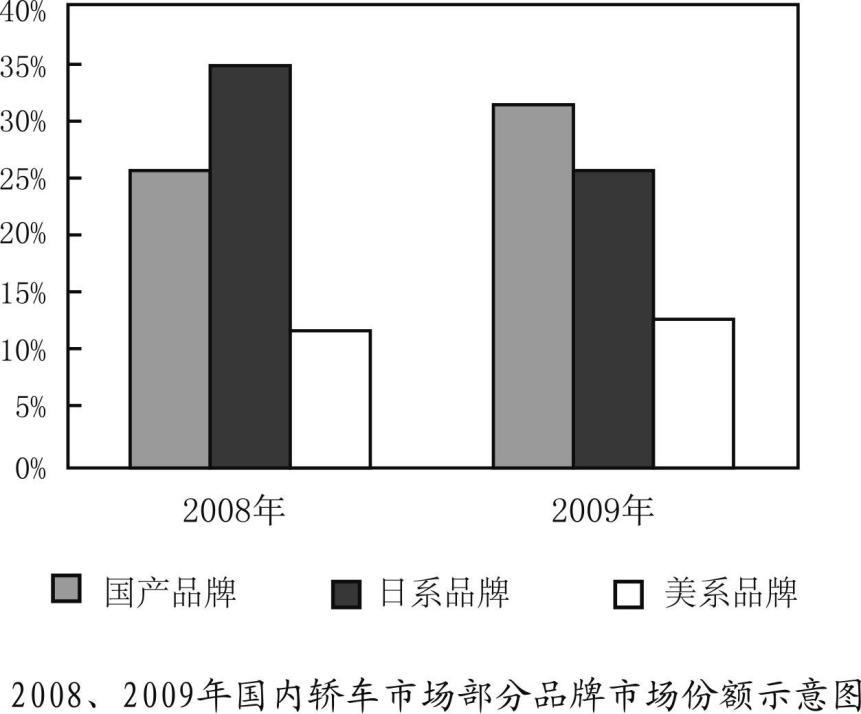

yy-2011-01
📄 原文 · 完整保留，点击展开/收起▾
Read the following text. Choose the best word(s) for each numbered blank and mark A, B, C or D on ANSWER SHEET 1. (10 points)
The Internet affords anonymity to its users, a blessing to privacy and freedom of speech. But that very anonymity is also behind the explosion of cyber-crime that has __1__ across the Web.
Can privacy be preserved __2__ bringing safety and security to a world that seems increasingly __3__?
Last month, Howard Schmidt, the nation’s cyber-czar, offered the federal government a __4__ to make the Web a safer place – a “voluntary trusted identity” system that would be the high-tech __5__ of a physical key, a fingerprint and a photo ID card, all rolled __6__ one. The system might use a smart identity card, or a digital credential __7__ to a specific computer, and would authenticate users at a range of online services.
The idea is to __8__ a federation of private online identity systems. Users could __9__ which system to join, and only registered users whose identities have been authenticated could navigate those systems. The approach contrasts with one that would require an Internet driver’s license __10__ by the government.
Google and Microsoft are among companies that already have these “single sign-on” systems that make it possible for users to __11__ just once but use many different services.
__12__, the approach would create a “walled garden” in cyberspace, with safe “neighborhoods” and bright “streetlights” to establish a sense of a __13__ community.
Mr. Schmidt described it as a “voluntary ecosystem” in which “individuals and organizations can complete online transactions with __14__, trusting the identities of each other and the identities of the infrastructure __15__ which the transaction runs.”
Still, the administration’s plan has __16__ privacy rights activists. Some applaud the approach; others are concerned. It seems clear that such a scheme is an initiative push toward what would __17__ be a compulsory Internet “driver’s license” mentality.
The plan has also been greeted with __18__ by some computer security experts, who worry that the “voluntary ecosystem” envisioned by Mr. Schmidt would still leave much of the Internet __19__. They argue that all Internet users should be __20__ to register and identify themselves, in the same way that drivers must be licensed to drive on public roads.
第 1 题 · 本题位置已在原文中高亮（完形空位 / 新题型段落），请结合原文选出正确选项
答案：A
本题讲解：2011 完形第 1 空 · “席卷网络”的网络犯罪——哪个动词配 across
答案：A（swept 席卷，横扫）。
第 0 步：先立机制——空格要满足两个条件
空格在 that 引导的定语从句里，从句修饰 cyber-crime（网络犯罪），句尾的 across the Web 是地点短语。所以这个空同时卡两条线：一是动词能不能与 across 搭出通顺的搭配，二是这个动作能否把“网络犯罪在互联网上蔓延”这层意思带出来。四个选项都是“移动”类动词，命题人考的就是：哪一种“移动”才配得上抽象的犯罪与整个网络。
第 1 步：定位原文
But that very anonymity is also behind the explosion of cyber-crime that has __1__ across the Web.
从句要说明网络犯罪与网络之间的关系：犯罪“……了整个网络”。主句已经给了定语 the explosion of cyber-crime——爆炸意味着范围广、速度快。
第 2 步：找证据——explosion 决定了动词的力度
the explosion of cyber-crime that has swept across the Web
“爆炸”式的激增，在空间上必然表现为“席卷、蔓延”：sweep across（横扫、席卷）正是这个意象的固定搭配。空格词与 explosion 是同一幅图景的两次描写。
第 3 步：逐项排除
| 选项 | 词义 | 判定 | 理由与典型误解 |
|---|---|---|---|
| A swept | 席卷 | ✓ 当选 | sweep across 固定搭配，“席卷整个网络”，与 explosion 前后呼应，写出犯罪猖獗蔓延之势。 |
| B skipped | 跳过 | ✗ 排除 | skip 是“跳过、略过”（跳过某物不处理），没有“扩张蔓延”义，与 explosion 毫不呼应。（典型误解：词形与 swept 相近，只看拼写不看语义。） |
| C walked | 走过 | ✗ 排除 | walk 的动作主体通常是人，抽象的犯罪“在网上走来走去”不合逻辑，也没有激增的力度。（典型误解：把 walk across the street 的搭配硬套给抽象主语。） |
| D ridden | 骑、乘 | ✗ 排除 | ride 的宾语是车马、交通工具（ride a bike），“骑过网络”不成立。（典型误解：死记 ride across the country，忽略主语是抽象的 crime。） |
代入后的完整句义：但这种匿名也正是网络犯罪激增、席卷整个互联网的幕后推手。
第 4 步：预判追问
- 为什么一定要“席卷”这么大的词，walked“走过”不行吗？：主句的 explosion 已经把程度定死了——激增是“爆发性”的，动词必须同样有铺天盖地的气势；walk 描述的是“一个人慢慢走”，与“犯罪全面蔓延”在力度和主体上都对不上。
- skipped 的“跳”难道不是快速移动吗？：skip 的核心义是“跳过、略过”（该做而没做、该看而没看），强调“越过某处”，不是“覆盖某处”；犯罪“跳过网络”恰好把意思说反了。
易错点
- 误选 B（skipped）：只看四个词都是“移动”义、拼写又与 swept 接近，没有核对动词与 across 的固定搭配以及与 explosion 的呼应。
- 误选 C（walked）：忽略动作主体的类型——walk 适合“人”，抽象的犯罪现象需要的是“蔓延类”动词。
- 误选 D（ridden）：把 ride across 的“地理搭配”当成万能公式，忘了 ride 需要交通工具作宾语。
记忆锚点：explosion（激增）→ swept across（席卷）；主语是抽象事物时选“蔓延类”动词；skip=跳过、walk=人走、ride=骑乘，都不接“抽象现象＋大范围”。
yy-2011-02
📄 原文 · 完整保留，点击展开/收起▾
Read the following text. Choose the best word(s) for each numbered blank and mark A, B, C or D on ANSWER SHEET 1. (10 points)
The Internet affords anonymity to its users, a blessing to privacy and freedom of speech. But that very anonymity is also behind the explosion of cyber-crime that has __1__ across the Web.
Can privacy be preserved __2__ bringing safety and security to a world that seems increasingly __3__?
Last month, Howard Schmidt, the nation’s cyber-czar, offered the federal government a __4__ to make the Web a safer place – a “voluntary trusted identity” system that would be the high-tech __5__ of a physical key, a fingerprint and a photo ID card, all rolled __6__ one. The system might use a smart identity card, or a digital credential __7__ to a specific computer, and would authenticate users at a range of online services.
The idea is to __8__ a federation of private online identity systems. Users could __9__ which system to join, and only registered users whose identities have been authenticated could navigate those systems. The approach contrasts with one that would require an Internet driver’s license __10__ by the government.
Google and Microsoft are among companies that already have these “single sign-on” systems that make it possible for users to __11__ just once but use many different services.
__12__, the approach would create a “walled garden” in cyberspace, with safe “neighborhoods” and bright “streetlights” to establish a sense of a __13__ community.
Mr. Schmidt described it as a “voluntary ecosystem” in which “individuals and organizations can complete online transactions with __14__, trusting the identities of each other and the identities of the infrastructure __15__ which the transaction runs.”
Still, the administration’s plan has __16__ privacy rights activists. Some applaud the approach; others are concerned. It seems clear that such a scheme is an initiative push toward what would __17__ be a compulsory Internet “driver’s license” mentality.
The plan has also been greeted with __18__ by some computer security experts, who worry that the “voluntary ecosystem” envisioned by Mr. Schmidt would still leave much of the Internet __19__. They argue that all Internet users should be __20__ to register and identify themselves, in the same way that drivers must be licensed to drive on public roads.
第 2 题 · 本题位置已在原文中高亮（完形空位 / 新题型段落），请结合原文选出正确选项
答案：C
本题讲解：2011 完形第 2 空 · 隐私与安全能否“兼得”——填哪个逻辑词
答案：C（while 与……同时）。
第 0 步：先立机制——先看清空格两边各是什么
空格前是完整的谓语 be preserved（隐私被保护），空格后是动名词短语 bringing safety and security（带来安全保障）。夹在中间的词要同时兼容这两边：既能引出 doing，又要说清“保护隐私”与“带来安全”这两件事是什么关系。所以第一步不是背四个词的释义，而是判断句内逻辑——这正是本空唯一的考点。
第 1 步：定位原文
Can privacy be preserved __2__ bringing safety and security to a world that seems increasingly lawless?
全句是一个问句：隐私能否______给一个日益失控的世界带来安全保障？——问的是“隐私”与“安全”这两件事能否同时成立，即“兼得”。
第 2 步：找证据——上文的两面性铺垫
The Internet affords anonymity to its users, a blessing to privacy and freedom of speech. But that very anonymity is also behind the explosion of cyber-crime.
第一段刚说完匿名有“ blessing（福）”与“犯罪推手”的两面：它既保护隐私，又威胁安全。第二段顺势把两面拧成一个总问题——两样好处能不能同时要？这是“同时”关系，不是因果、范围或转折。
第 3 步：逐项排除
| 选项 | 词义 | 判定 | 理由与典型误解 |
|---|---|---|---|
| C while | 与……同时 | ✓ 当选 | while + doing 表“在……的同时”：在带来安全保障的同时保护隐私，正是“能否兼得”。 |
| A for | 为了；因为 | ✗ 排除 | 表目的时 for 是介词，接名词（for safety），不能直接接 doing；表原因也不通。（典型误解：把 for 硬译成“为了”就算通顺。） |
| B within | 在……之内 | ✗ 排除 | 纯介词，后面只能接名词性成分，接 bringing 这个动名词短语语法直接立不住，且“范围”义与句意无关。（典型误解：没检查后接成分的词性。） |
| D though | 虽然，尽管 | ✗ 排除 | 表转折让步：“隐私”与“安全”不是一正一反的否定关系，而是要同时成立的两件事，转折无从谈起。（典型误解：看到匿名“既好又坏”的全局张力，误当成句内转折。） |
代入后的完整句义：在一个似乎日益失控的世界里，能否在带来安全保障的同时保护住隐私？
第 4 步：预判追问
- while 不是常译“然而、虽然”吗？：while 确可表对比让步，但它还有“当……时/与……同时”的义项，且本空空后是 bringing 这种 doing 形式，取“同时”义才能把“兼得”问句讲通。
- 为什么不是 for（“为了安全而保护隐私”）？：句子的重心是“两件事同时成立吗”，不是“以哪件事为目的”；且 for 后接 doing 表目的不是规范用法。
易错点
- 误选 D（though）：把第一段“匿名有福也有祸”的宏观张力误当成这句的句内转折——句内问的是两件事能否同时做到，不存在“尽管保护隐私（却带来安全）”的让步关系。
- 误选 B（within）：只看词义“在……内”语感通顺，没发现后面跟着的是 bringing 动名词短语，介词接不动。
- 误选 A（for）：把 for 的目的义当万能填充，没核对 for + doing 的搭配与句子的逻辑重心。
记忆锚点：空格两边“谓语 + doing”→ 先判断两件事的逻辑关系；两件事要同时成立 → while（+ doing 表伴随）；for 接名词、within 只接名词、though 要有让步对象。
yy-2011-03
📄 原文 · 完整保留，点击展开/收起▾
Read the following text. Choose the best word(s) for each numbered blank and mark A, B, C or D on ANSWER SHEET 1. (10 points)
The Internet affords anonymity to its users, a blessing to privacy and freedom of speech. But that very anonymity is also behind the explosion of cyber-crime that has __1__ across the Web.
Can privacy be preserved __2__ bringing safety and security to a world that seems increasingly __3__?
Last month, Howard Schmidt, the nation’s cyber-czar, offered the federal government a __4__ to make the Web a safer place – a “voluntary trusted identity” system that would be the high-tech __5__ of a physical key, a fingerprint and a photo ID card, all rolled __6__ one. The system might use a smart identity card, or a digital credential __7__ to a specific computer, and would authenticate users at a range of online services.
The idea is to __8__ a federation of private online identity systems. Users could __9__ which system to join, and only registered users whose identities have been authenticated could navigate those systems. The approach contrasts with one that would require an Internet driver’s license __10__ by the government.
Google and Microsoft are among companies that already have these “single sign-on” systems that make it possible for users to __11__ just once but use many different services.
__12__, the approach would create a “walled garden” in cyberspace, with safe “neighborhoods” and bright “streetlights” to establish a sense of a __13__ community.
Mr. Schmidt described it as a “voluntary ecosystem” in which “individuals and organizations can complete online transactions with __14__, trusting the identities of each other and the identities of the infrastructure __15__ which the transaction runs.”
Still, the administration’s plan has __16__ privacy rights activists. Some applaud the approach; others are concerned. It seems clear that such a scheme is an initiative push toward what would __17__ be a compulsory Internet “driver’s license” mentality.
The plan has also been greeted with __18__ by some computer security experts, who worry that the “voluntary ecosystem” envisioned by Mr. Schmidt would still leave much of the Internet __19__. They argue that all Internet users should be __20__ to register and identify themselves, in the same way that drivers must be licensed to drive on public roads.
第 3 题 · 本题位置已在原文中高亮（完形空位 / 新题型段落），请结合原文选出正确选项
答案：B
本题讲解：2011 完形第 3 空 · “日益______的网络世界”——哪个形容词接得住上文
答案：B（lawless 不受法律控制的）。
第 0 步：先立机制——完形选形容词的底层逻辑
空格是形容词，修饰 a world（网络世界），前面的 increasingly（越来越）提示这是一个程度递增的性质。完形填形容词不是比谁“看起来通顺”，而是比谁能从上文找到出处：这个词必须是对已述内容的概括或复现。所以先回头问一句——上文把网络世界写成了什么样？
第 1 步：定位原文
Can privacy be preserved while bringing safety and security to a world that seems increasingly __3__?
“给一个似乎日益______的世界带来安全保障”：能配上“需要带来安全”的世界，应当是一个不安全、乱的世界。
第 2 步：找证据——第一段已经给这个世界定了性
But that very anonymity is also behind the explosion of cyber-crime that has swept across the Web.
第一段刚说完“网络犯罪激增、席卷整个网络”——犯罪横行，等于法律管不住。空格词就是它的复现：犯罪激增 → lawless（不受法律控制的）。
第 3 步：逐项排除
| 选项 | 词义 | 判定 | 理由与典型误解 |
|---|---|---|---|
| B lawless | 不受法律控制的 | ✓ 当选 | 与 cyber-crime swept across the Web 同义复现：犯罪横行 = 法律管不住，日益 lawless 的世界正需要 bring safety and security。 |
| A careless | 粗心的 | ✗ 排除 | careless 形容人疏忽大意，world 无“粗心”可言，与“犯罪”也不构成同义关系。（典型误解：care 联想到“网络安全”，忘了 careless 的落点是人。） |
| C pointless | 无意义的 | ✗ 排除 | “日益无意义的世界”凭空引入新话题，上文没有任何“意义”维度的铺垫。（典型误解：脱离上文，纯凭语感挑词。） |
| D helpless | 无助的 | ✗ 排除 | world 不是求助者，无助的主体通常是“人”；且 helpless 与“犯罪激增”对不上，复现链条断了。（典型误解：觉得“这个世界很无助”勉强能读通，就忘了完形要“上文有出处”。） |
代入后的完整句义：在一个似乎日益失控（不受法律控制）的世界里，能否在带来安全保障的同时保护住隐私？
第 4 步：预判追问
- helpless“无助的”读起来也顺，为什么不行？：“顺”不是标准，出处才是。上文给的关键信息是“犯罪席卷网络”，能与之构成同义复现的只有 lawless；helpless 描述的“无力自救”上文半个字都没提。
- 为什么不选 negative 一类贬义词就完了？：完形考的是精确复现，不是泛泛的贬义——lawless 与 cyber-crime、与句中 safety and security（安全+法治秩序）两头都咬合。
易错点
- 误选 D（helpless）：被“世界很乱、很无奈”的情绪带跑，忽略了完形形容词必须从上文找到出处的铁律。
- 误选 A（careless）：由 care 想到“网络安全”，但 careless 的词义落点是“人粗心”，世界不能粗心。
- 误选 C（pointless）：完全脱离上文的犯罪语境，凭空造了个“无意义”的评价维度。
记忆锚点：形容词空 → 回上文找复现；cyber-crime swept across the Web → lawless（法律管不住）；careless 说人、helpless 说人、pointless 离题。
yy-2011-04
📄 原文 · 完整保留，点击展开/收起▾
Read the following text. Choose the best word(s) for each numbered blank and mark A, B, C or D on ANSWER SHEET 1. (10 points)
The Internet affords anonymity to its users, a blessing to privacy and freedom of speech. But that very anonymity is also behind the explosion of cyber-crime that has __1__ across the Web.
Can privacy be preserved __2__ bringing safety and security to a world that seems increasingly __3__?
Last month, Howard Schmidt, the nation’s cyber-czar, offered the federal government a __4__ to make the Web a safer place – a “voluntary trusted identity” system that would be the high-tech __5__ of a physical key, a fingerprint and a photo ID card, all rolled __6__ one. The system might use a smart identity card, or a digital credential __7__ to a specific computer, and would authenticate users at a range of online services.
The idea is to __8__ a federation of private online identity systems. Users could __9__ which system to join, and only registered users whose identities have been authenticated could navigate those systems. The approach contrasts with one that would require an Internet driver’s license __10__ by the government.
Google and Microsoft are among companies that already have these “single sign-on” systems that make it possible for users to __11__ just once but use many different services.
__12__, the approach would create a “walled garden” in cyberspace, with safe “neighborhoods” and bright “streetlights” to establish a sense of a __13__ community.
Mr. Schmidt described it as a “voluntary ecosystem” in which “individuals and organizations can complete online transactions with __14__, trusting the identities of each other and the identities of the infrastructure __15__ which the transaction runs.”
Still, the administration’s plan has __16__ privacy rights activists. Some applaud the approach; others are concerned. It seems clear that such a scheme is an initiative push toward what would __17__ be a compulsory Internet “driver’s license” mentality.
The plan has also been greeted with __18__ by some computer security experts, who worry that the “voluntary ecosystem” envisioned by Mr. Schmidt would still leave much of the Internet __19__. They argue that all Internet users should be __20__ to register and identify themselves, in the same way that drivers must be licensed to drive on public roads.
第 4 题 · 本题位置已在原文中高亮（完形空位 / 新题型段落），请结合原文选出正确选项
答案：D
本题讲解：2011 完形第 4 空 · 向政府 offer 的一个______——它到底是个什么东西
答案：D（proposal 提议，建议）。
第 0 步：先立机制——名词空先看“身份”，再看“搭配”
空格是 offer sb a __ to do sth 结构中的单数可数名词：给政府提供了一个“……”，其目的是 make the Web a safer place。名词空判定的关键不是背释义，而是回答两个问题：这个“东西”在后文以什么身份出现（破折号后的同位语已经给出：a "voluntary trusted identity" system）；它能不能接 to do 不定式（a proposal to do sth 是“提出一个做某事的建议”的常规框架）。
第 1 步：定位原文
Last month, Howard Schmidt, the nation's cyber-czar, offered the federal government a __4__ to make the Web a safer place – a "voluntary trusted identity" system…
破折号之后是同位语，具体说明这个“东西”是什么——一套“自愿可信身份”系统。也就是说，空格词要能把“一套尚未落地的系统”这个身份兜住。
第 2 步：找证据——全文反复称它为“构想”
The idea is to create a federation of private online identity systems.
下文紧接着用 The idea is to...（构想是……）展开这个“东西”的内容；后文还有 the administration's plan、such a scheme、Mr. Schmidt described it as...——全文一直把它当提议、构想、计划来谈，说明它只是提出来、还没实施。
第 3 步：逐项排除
| 选项 | 词义 | 判定 | 理由与典型误解 |
|---|---|---|---|
| D proposal | 提议，建议 | ✓ 当选 | offer a proposal（提出提议）为常规搭配，a proposal to do sth 接目的不定式自然；与后文 idea / plan / scheme 全线同义复现，同位语的“系统”身份也兜得住。 |
| A reason | 原因，理由 | ✗ 排除 | a reason to do sth 是“做某事的理由”，但“向政府提供一个理由”搭配生硬，且 reason 无法被“一套系统”这个同位语具体化。（典型误解：看到 to make…目的状语就条件反射选“理由”。） |
| B reminder | 提示，提醒 | ✗ 排除 | reminder 是“提醒（物）/令人想起的东西”，语境中不存在“需要提醒政府什么”的对象。（典型误解：由 remember 词根硬凑语感。） |
| C compromise | 妥协 | ✗ 排除 | 妥协发生在冲突双方各让一步时；此处 Schmidt 单方面提出方案，没有让步交换的结构。（典型误解：觉得“隐私 vs 安全”是冲突话题，就顺手选妥协——冲突是全文背景，不是这一句的关系。） |
代入后的完整句义：上个月，美国网络总管霍华德·施密特向联邦政府提出了一项让网络更安全的提议——一套“自愿可信身份”系统。
第 4 步：预判追问
- “提建议”不是 offer 吗，proposal 不是更该配 make/put forward 吗？：offer a proposal（提交一份提议给某人）同样是规范搭配，尤其后接 to do 表目的时最自然；A 的 offer sb a reason 才是硬凑。
- compromise 看着“高级”，为什么不选？：名词空看身份不看词频——compromise 需要两方互相让步的情节，句中只有一方（Schmidt）在提方案。
易错点
- 误选 A（reason）：被不定式 to make... 带着走，把“目的状语”当成了“理由”的签名，忘了名词要能被同位语具体化。
- 误选 C（compromise）：把“隐私与安全难两全”的全文冲突背景，错当成这句名词的语义要求。
- 误选 B（reminder）：词根联想代替句义核对。
记忆锚点：名词空 → 先看破折号同位语给的身份，再查 a ___ to do 搭配；proposal 与下文 idea / plan / scheme 同义复现；compromise 必须有“双方让步”。
yy-2011-05
📄 原文 · 完整保留，点击展开/收起▾
Read the following text. Choose the best word(s) for each numbered blank and mark A, B, C or D on ANSWER SHEET 1. (10 points)
The Internet affords anonymity to its users, a blessing to privacy and freedom of speech. But that very anonymity is also behind the explosion of cyber-crime that has __1__ across the Web.
Can privacy be preserved __2__ bringing safety and security to a world that seems increasingly __3__?
Last month, Howard Schmidt, the nation’s cyber-czar, offered the federal government a __4__ to make the Web a safer place – a “voluntary trusted identity” system that would be the high-tech __5__ of a physical key, a fingerprint and a photo ID card, all rolled __6__ one. The system might use a smart identity card, or a digital credential __7__ to a specific computer, and would authenticate users at a range of online services.
The idea is to __8__ a federation of private online identity systems. Users could __9__ which system to join, and only registered users whose identities have been authenticated could navigate those systems. The approach contrasts with one that would require an Internet driver’s license __10__ by the government.
Google and Microsoft are among companies that already have these “single sign-on” systems that make it possible for users to __11__ just once but use many different services.
__12__, the approach would create a “walled garden” in cyberspace, with safe “neighborhoods” and bright “streetlights” to establish a sense of a __13__ community.
Mr. Schmidt described it as a “voluntary ecosystem” in which “individuals and organizations can complete online transactions with __14__, trusting the identities of each other and the identities of the infrastructure __15__ which the transaction runs.”
Still, the administration’s plan has __16__ privacy rights activists. Some applaud the approach; others are concerned. It seems clear that such a scheme is an initiative push toward what would __17__ be a compulsory Internet “driver’s license” mentality.
The plan has also been greeted with __18__ by some computer security experts, who worry that the “voluntary ecosystem” envisioned by Mr. Schmidt would still leave much of the Internet __19__. They argue that all Internet users should be __20__ to register and identify themselves, in the same way that drivers must be licensed to drive on public roads.
第 5 题 · 本题位置已在原文中高亮（完形空位 / 新题型段落），请结合原文选出正确选项
答案：D
本题讲解：2011 完形第 5 空 · 数字系统是物理三件套的什么
答案：D（equivalent 等同物，等价物）。
第 0 步：先立机制——主系表句里，空格名词必须把前后两头“缝”起来
that 引导的定语从句是主系表结构：system（数字的“自愿可信身份”系统）would be the high-tech __ of a physical key, a fingerprint and a photo ID card。主语是数字系统，of 后面是三样实体物件。空格里的名词要能回答一个问题：数字系统与实体三件套是什么关系？二者形态完全不同、功能相同——这就是“对应物/等价物”关系。
第 1 步：定位原文
…a "voluntary trusted identity" system that would be the high-tech __5__ of a physical key, a fingerprint and a photo ID card, all rolled into one.
句尾的 all rolled into one（三样合为一体）是决定性线索：三件实体的功能合起来，正等于这一个数字系统。
第 2 步：找证据——“合三为一”决定“等价”
a physical key, a fingerprint and a photo ID card, all rolled into one
钥匙开门锁、指纹验明正身、证件卡亮明身份——三件套合起来的功效 = 一套“自愿可信身份”系统的功效。功效相同、形态不同 → 系统是它们的高科技等价物。
第 3 步：逐项排除
| 选项 | 词义 | 判定 | 理由与典型误解 |
|---|---|---|---|
| D equivalent | 等同物 | ✓ 当选 | be the high-tech equivalent of “是……的高科技等价物”：数字系统与实体三件套功效相同，与 all rolled into one 严丝合缝。 |
| A information | 信息 | ✗ 排除 | “三件套的高科技信息”语义不成立：information 无法承担“功能对应”的角色。（典型误解：high-tech 场景条件反射联想“信息”。） |
| B interference | 干预，干涉 | ✗ 排除 | “是三件套的干涉”不通：句中系统与三件套是功能对等，不存在谁干涉谁。（典型误解：由 interfere 的“干扰网络”义强行入局。） |
| C entertainment | 娱乐 | ✗ 排除 | 身份认证与娱乐无关，凭空离题。（典型误解：纯凑数项靠模糊语感。） |
代入后的完整句义：一套“自愿可信身份”系统——它相当于把实体钥匙、指纹和照片身份证件集于一体的高科技等价物。
第 4 步：预判追问
- equivalent 为什么必须选，而不是随便一个“工具”类名词？：主系表句的表语名词要精确刻画主语与 of 宾语的关系；这里的关系是“形态不同、功效相同”，只有 equivalent 表达这个关系。
- 凭第一感觉 the high-tech information 也很顺，怎么防？：顺不顺要看两头——of 后是三件实体物件，“三件套的信息”这个名词短语本身都不成话；名词空的检验法是“主语 + 表语名词 + of 宾语”读成一个完整判断句。
易错点
- 误选 A（information）：只看到 high-tech 就联想“信息科技”，没把“数字系统 vs 实体三件套”的对应关系读出来。
- 误选 B（interference）：受“网络需要治理”的全文氛围影响，把负面义名词错塞进中性的对应关系里。
- 误选 C（entertainment）：脱离“钥匙/指纹/证件”的认证语境。
记忆锚点：主系表 + of 宾语 → 表语名词要“缝合”主语与宾语的关系；实体三件套 rolled into one ↔ 数字系统 → equivalent；information/interference/entertainment 都撑不起“对应”关系。
yy-2011-06
📄 原文 · 完整保留，点击展开/收起▾
Read the following text. Choose the best word(s) for each numbered blank and mark A, B, C or D on ANSWER SHEET 1. (10 points)
The Internet affords anonymity to its users, a blessing to privacy and freedom of speech. But that very anonymity is also behind the explosion of cyber-crime that has __1__ across the Web.
Can privacy be preserved __2__ bringing safety and security to a world that seems increasingly __3__?
Last month, Howard Schmidt, the nation’s cyber-czar, offered the federal government a __4__ to make the Web a safer place – a “voluntary trusted identity” system that would be the high-tech __5__ of a physical key, a fingerprint and a photo ID card, all rolled __6__ one. The system might use a smart identity card, or a digital credential __7__ to a specific computer, and would authenticate users at a range of online services.
The idea is to __8__ a federation of private online identity systems. Users could __9__ which system to join, and only registered users whose identities have been authenticated could navigate those systems. The approach contrasts with one that would require an Internet driver’s license __10__ by the government.
Google and Microsoft are among companies that already have these “single sign-on” systems that make it possible for users to __11__ just once but use many different services.
__12__, the approach would create a “walled garden” in cyberspace, with safe “neighborhoods” and bright “streetlights” to establish a sense of a __13__ community.
Mr. Schmidt described it as a “voluntary ecosystem” in which “individuals and organizations can complete online transactions with __14__, trusting the identities of each other and the identities of the infrastructure __15__ which the transaction runs.”
Still, the administration’s plan has __16__ privacy rights activists. Some applaud the approach; others are concerned. It seems clear that such a scheme is an initiative push toward what would __17__ be a compulsory Internet “driver’s license” mentality.
The plan has also been greeted with __18__ by some computer security experts, who worry that the “voluntary ecosystem” envisioned by Mr. Schmidt would still leave much of the Internet __19__. They argue that all Internet users should be __20__ to register and identify themselves, in the same way that drivers must be licensed to drive on public roads.
第 6 题 · 本题位置已在原文中高亮（完形空位 / 新题型段落），请结合原文选出正确选项
答案：B
本题讲解：2011 完形第 6 空 · all rolled ______ one——固定搭配“合为一体”
答案：B（into 深入……之中，融入）。
第 0 步：先立机制——固定搭配题的判定路径
空格前是过去分词 rolled（roll，卷），空格后是 one。三样实体物件（钥匙、指纹、证件卡）+ all + rolled + one——这个形状本身就是“三样东西被卷成一件”的合体意象。固定搭配题的做法：先从句义锁定“要表达什么”，再核对哪个介词能构成这个固定短语，而不是逐个试翻译。
第 1 步：定位原文
…that would be the high-tech equivalent of a physical key, a fingerprint and a photo ID card, all rolled __6__ one.
all 指代前面三样东西；rolled one 要表达“卷成一体”——这正是上一空“数字系统 = 三件套等价物”的同一幅图景。
第 2 步：找证据——固定短语 (all) rolled into one
a physical key, a fingerprint and a photo ID card, all rolled into one
(all) rolled into one 是英语固定搭配：“集于一体、合三为一”。第 5 空“等价物”的逻辑正依赖这个短语成立：三件实体合起来 = 一个数字系统。
第 3 步：逐项排除
| 选项 | 词义 | 判定 | 理由与典型误解 |
|---|---|---|---|
| B into | 进入……之中 | ✓ 当选 | (all) rolled into one 固定搭配，“集于一体”；卷的动作有方向——从三样卷成一件，into 表方向与结果。 |
| A by | 通过；被 | ✗ 排除 | rolled by 只能是“被……卷”（施动者），all rolled by one 读成“被一个人卷”，把“合体”说成了施动。（典型误解：看到过去分词就想补 by 被动。） |
| C from | 从 | ✗ 排除 | rolled from“从……卷起”，方向反了：是三样卷成一，不是从一件卷开。（典型误解：from 的“来源”义硬套。） |
| D over | 越过 | ✗ 排除 | rolled over 是“翻滚过去/翻身”，没有“合为一体”义。（典型误解：over 表“翻转”的语感。） |
代入后的完整句义：……相当于把实体钥匙、指纹和照片身份证件集于一体的高科技等价物。
第 4 步：预判追问
- 为什么不是 by（rolled 被动“被卷成一体”）？：rolled into one 本身就是“被卷成一体”——into one 已经把结果方向说完了；补 by 反而把 one 从“目标”改成了“施动者”，全句意思垮掉。
- 固定搭配需要逐个背吗？：不需要死背全部，但 rolled into one / come into one 一类“多合一”结构里，into 是高频方向介词；做题时先立“合体”意象，再选 into。
易错点
- 误选 A（by）：看到过去分词 rolled 就想补出被动施动者，把 one 的角色从“卷成的一件”错读成“卷的那个人”。
- 误选 C（from）：把“三件套来源于一体”的方向说反。
- 误选 D（over）：只凭“翻滚”的模糊语感，没核“合体”意象。
记忆锚点：三样 + all rolled + one → rolled into one（集于一体）；into 表“卷成”的方向与结果；by 会把 one 抢成施动者。
yy-2011-07
📄 原文 · 完整保留，点击展开/收起▾
Read the following text. Choose the best word(s) for each numbered blank and mark A, B, C or D on ANSWER SHEET 1. (10 points)
The Internet affords anonymity to its users, a blessing to privacy and freedom of speech. But that very anonymity is also behind the explosion of cyber-crime that has __1__ across the Web.
Can privacy be preserved __2__ bringing safety and security to a world that seems increasingly __3__?
Last month, Howard Schmidt, the nation’s cyber-czar, offered the federal government a __4__ to make the Web a safer place – a “voluntary trusted identity” system that would be the high-tech __5__ of a physical key, a fingerprint and a photo ID card, all rolled __6__ one. The system might use a smart identity card, or a digital credential __7__ to a specific computer, and would authenticate users at a range of online services.
The idea is to __8__ a federation of private online identity systems. Users could __9__ which system to join, and only registered users whose identities have been authenticated could navigate those systems. The approach contrasts with one that would require an Internet driver’s license __10__ by the government.
Google and Microsoft are among companies that already have these “single sign-on” systems that make it possible for users to __11__ just once but use many different services.
__12__, the approach would create a “walled garden” in cyberspace, with safe “neighborhoods” and bright “streetlights” to establish a sense of a __13__ community.
Mr. Schmidt described it as a “voluntary ecosystem” in which “individuals and organizations can complete online transactions with __14__, trusting the identities of each other and the identities of the infrastructure __15__ which the transaction runs.”
Still, the administration’s plan has __16__ privacy rights activists. Some applaud the approach; others are concerned. It seems clear that such a scheme is an initiative push toward what would __17__ be a compulsory Internet “driver’s license” mentality.
The plan has also been greeted with __18__ by some computer security experts, who worry that the “voluntary ecosystem” envisioned by Mr. Schmidt would still leave much of the Internet __19__. They argue that all Internet users should be __20__ to register and identify themselves, in the same way that drivers must be licensed to drive on public roads.
第 7 题 · 本题位置已在原文中高亮（完形空位 / 新题型段落），请结合原文选出正确选项
答案：A
本题讲解：2011 完形第 7 空 · 数字凭证与特定电脑之间的______关系
答案：A（linked 连接）。
第 0 步：先立机制——四个动词都接 to，比的是“关系类型”
空格是过去分词作后置定语，修饰 a digital credential（数字凭证），并与 to a specific computer（一台特定的电脑）搭配。A、B、C、D 四个动词都能与 to 连用——所以考点不是“谁能接 to”，而是“凭证与电脑之间是哪一种关系”：凭证是软件层的东西，它要在某台电脑上被使用，二者是“连接/绑定”关系。选词就是给这段关系挑一个准确的动词。
第 1 步：定位原文
The system might use a smart identity card, or a digital credential __7__ to a specific computer, and would authenticate users at a range of online services.
数字凭证“______于”一台特定电脑；句尾还交代了它的用途：在多家在线服务上认证用户身份。
第 2 步：找证据——句尾用途反过来限定关系类型
…and would authenticate users at a range of online services.
凭证的功能是“认证”：认证要靠凭证与设备、与在线服务之间的连接才能完成。被“拴住”“对准”“相比”的凭证都干不了这个活——只有“连接于（linked to）”某台电脑的凭证才能随身认证。
第 3 步：逐项排除
| 选项 | 词义 | 判定 | 理由与典型误解 |
|---|---|---|---|
| A linked (to) | 连接 | ✓ 当选 | linked to a computer “连接/绑定到一台电脑”，正是数字凭证的存放与使用方式，与句尾 authenticate users 呼应。 |
| B directed (to) | 对准；发给 | ✗ 排除 | direct sth at/to sb 的对象多是言论、措施、邮件，“凭证对准电脑”不成立。（典型误解：directed to 有“送达”义，就想成“发给电脑”。） |
| C chained (to) | 拴住，束缚 | ✗ 排除 | chain sb/sth to sth 是用链条拴住（防止逃跑/被盗）的物理动作，带束缚色彩；软件凭证谈不上被拴。（典型误解：觉得“固定在一台电脑上”≈“拴”，忽略 chain 的物理意象与贬义。） |
| D compared (to) | 与……相比 | ✗ 排除 | compared to 引出比较对象，此处不是比较关系；“凭证被拿来和电脑比”语义崩坏。（典型误解：compare to 太熟，语感抢答。） |
代入后的完整句义：该系统可能使用一张智能身份卡，或一个连接（绑定）到特定电脑上的数字凭证，并能在多家在线服务上认证用户。
第 4 步：预判追问
- chained to“拴在一台电脑上”不是更有“绑定一台”的意思吗？：chain 的意象是铁链拴牲口、锁单车——防逃跑防盗窃，是物理束缚且含贬义；数字凭证与电脑的关系是技术上的“连接”，两者意象完全不同。
- directed to 什么时候对？：用于“把某物对准/送往某人”：a letter directed to me。对象是“电脑”这种设备时，表达“连接”只有 linked to。
易错点
- 误选 C（chained）：把“固定在某一台”的中文意思直接对应“拴”，没意识到 chain 是物理动作且含束缚贬义。
- 误选 B（directed）：看到 to 就想到“发给”，没核对 directed 的宾语类型。
- 误选 D（compared）：compare to 的“打比方”义抢跑，忘了原文并无比较结构。
记忆锚点：四词都接 to → 比“关系类型”；数字凭证 ↔ 电脑 = linked to（连接/绑定）；chain 是“铁链拴缚”、direct 是“对准对象”、compare 是“相比”。
yy-2011-08
📄 原文 · 完整保留，点击展开/收起▾
Read the following text. Choose the best word(s) for each numbered blank and mark A, B, C or D on ANSWER SHEET 1. (10 points)
The Internet affords anonymity to its users, a blessing to privacy and freedom of speech. But that very anonymity is also behind the explosion of cyber-crime that has __1__ across the Web.
Can privacy be preserved __2__ bringing safety and security to a world that seems increasingly __3__?
Last month, Howard Schmidt, the nation’s cyber-czar, offered the federal government a __4__ to make the Web a safer place – a “voluntary trusted identity” system that would be the high-tech __5__ of a physical key, a fingerprint and a photo ID card, all rolled __6__ one. The system might use a smart identity card, or a digital credential __7__ to a specific computer, and would authenticate users at a range of online services.
The idea is to __8__ a federation of private online identity systems. Users could __9__ which system to join, and only registered users whose identities have been authenticated could navigate those systems. The approach contrasts with one that would require an Internet driver’s license __10__ by the government.
Google and Microsoft are among companies that already have these “single sign-on” systems that make it possible for users to __11__ just once but use many different services.
__12__, the approach would create a “walled garden” in cyberspace, with safe “neighborhoods” and bright “streetlights” to establish a sense of a __13__ community.
Mr. Schmidt described it as a “voluntary ecosystem” in which “individuals and organizations can complete online transactions with __14__, trusting the identities of each other and the identities of the infrastructure __15__ which the transaction runs.”
Still, the administration’s plan has __16__ privacy rights activists. Some applaud the approach; others are concerned. It seems clear that such a scheme is an initiative push toward what would __17__ be a compulsory Internet “driver’s license” mentality.
The plan has also been greeted with __18__ by some computer security experts, who worry that the “voluntary ecosystem” envisioned by Mr. Schmidt would still leave much of the Internet __19__. They argue that all Internet users should be __20__ to register and identify themselves, in the same way that drivers must be licensed to drive on public roads.
第 8 题 · 本题位置已在原文中高亮（完形空位 / 新题型段落），请结合原文选出正确选项
答案：C
本题讲解：2011 完形第 8 空 · 一个还不存在的联合体系，该对它做什么
答案：C（create 创建，建立）。
第 0 步：先立机制——动词与宾语的“存在状态”要匹配
空格动词的宾语是 a federation of private online identity systems（私营在线身份系统的联合体）。选动词前先问一句：这个联合体现在存在吗？动词的选择必须与答案匹配——不存在的东西只能“创建”，已存在且没落地的构想谈不上“发现”，已存在且出了毛病才谈得上“改善”，被否定才谈得上“否决”。
第 1 步：定位原文
The idea is to __8__ a federation of private online identity systems.
句型本身就是答案的一半：The idea is to do sth——“构想是去……”，说明这是面向未来的动作，对象在动作发生前不存在。
第 2 步：找证据——第 4 空句已经定性：这只是个提议
Last month, Howard Schmidt … offered the federal government a proposal to make the Web a safer place.
Schmidt 一个月前刚向政府提出这项提议（proposal），下文才有 The idea is to...；提议尚待采纳，联合体当然还没建立——从无到有，选 create。
第 3 步：逐项排除
| 选项 | 词义 | 判定 | 理由与典型误解 |
|---|---|---|---|
| C create | 创建 | ✓ 当选 | 体系尚不存在，The idea is to create... “构想是创建一个……联合体”，动作与宾语的存在状态匹配。 |
| A dismiss | 否决，不予理会 | ✗ 排除 | dismiss 的前提是对象已经摆在面前；东西还没出生，谈何否决——方向反了。（典型误解：担心隐私的人会 dismiss——那是后文反对者的态度，不是这个 idea 的内容。） |
| B discover | 发现 | ✗ 排除 | discover 只能针对已存在但未被知晓的事物；联合体尚不存在，无从发现。（典型误解：中文“发现/建立”近义混淆。） |
| D improve | 改善 | ✗ 排除 | improve 的前提是对象已存在且运转不佳；此处是白手起家，不是修修补补。（典型误解：把全文“让网络更安全”的目的，迁移成“改善系统”的动作。） |
代入后的完整句义：这个构想是要创建一个由私营在线身份系统组成的联合体系。
第 4 步：预判追问
- discover 不也有“找到了（一个办法）”的用法吗？：discover a solution 的宾语是“办法”，且暗示它一直在那里等人找到；a federation 是要建出来的组织体系，不是被找到的现成物。
- improve 为什么不对，“改善网络安全”不正是全文目的吗？：全文目的是安全，但这个空的动作对象是联合体系本身——体系还没建立，第一步必然是“建”，不是“改”。
易错点
- 误选 B（discover）：被中文近义“发现/开创”带偏，没核“对象是否已存在”。
- 误选 D（improve）：把全文目的（更安全）偷换成动词（改善），动作对象张冠李戴。
- 误选 A（dismiss）：把反对者的态度错安到提议者头上。
记忆锚点：动词空先问“宾语存在吗”——不存在 → create；discover 要对象早已存在、improve 要先有再改、dismiss 要先有才谈得上否决；The idea is to do = 面向未来的动作。
yy-2011-09
📄 原文 · 完整保留，点击展开/收起▾
Read the following text. Choose the best word(s) for each numbered blank and mark A, B, C or D on ANSWER SHEET 1. (10 points)
The Internet affords anonymity to its users, a blessing to privacy and freedom of speech. But that very anonymity is also behind the explosion of cyber-crime that has __1__ across the Web.
Can privacy be preserved __2__ bringing safety and security to a world that seems increasingly __3__?
Last month, Howard Schmidt, the nation’s cyber-czar, offered the federal government a __4__ to make the Web a safer place – a “voluntary trusted identity” system that would be the high-tech __5__ of a physical key, a fingerprint and a photo ID card, all rolled __6__ one. The system might use a smart identity card, or a digital credential __7__ to a specific computer, and would authenticate users at a range of online services.
The idea is to __8__ a federation of private online identity systems. Users could __9__ which system to join, and only registered users whose identities have been authenticated could navigate those systems. The approach contrasts with one that would require an Internet driver’s license __10__ by the government.
Google and Microsoft are among companies that already have these “single sign-on” systems that make it possible for users to __11__ just once but use many different services.
__12__, the approach would create a “walled garden” in cyberspace, with safe “neighborhoods” and bright “streetlights” to establish a sense of a __13__ community.
Mr. Schmidt described it as a “voluntary ecosystem” in which “individuals and organizations can complete online transactions with __14__, trusting the identities of each other and the identities of the infrastructure __15__ which the transaction runs.”
Still, the administration’s plan has __16__ privacy rights activists. Some applaud the approach; others are concerned. It seems clear that such a scheme is an initiative push toward what would __17__ be a compulsory Internet “driver’s license” mentality.
The plan has also been greeted with __18__ by some computer security experts, who worry that the “voluntary ecosystem” envisioned by Mr. Schmidt would still leave much of the Internet __19__. They argue that all Internet users should be __20__ to register and identify themselves, in the same way that drivers must be licensed to drive on public roads.
第 9 题 · 本题位置已在原文中高亮（完形空位 / 新题型段落），请结合原文选出正确选项
答案：C
本题讲解：2011 完形第 9 空 · 用户______加入哪个系统——联合体里才有得选
答案：C（select 选择，挑选）。
第 0 步：先立机制——疑问词从句暴露了动作类型
空格动词后面跟的是 which system to join（加入哪个系统）这个“疑问词 + 不定式”结构：动作的对象是一组选项中的某一个。发出动作的是普通用户（Users）。所以空格要填的动词必须同时满足：① 能接 which...to... 结构；② 是“用户面对多个候选系统时”会做的动作。这一步先把 A、B、D 里“接得动 wh-结构但意思不对”的项也一并暴露出来。
第 1 步：定位原文
Users could __9__ which system to join, and only registered users whose identities have been authenticated could navigate those systems.
用户可以______加入哪个系统；后半句补充：只有通过身份认证的注册用户才能在那些系统里畅行。
第 2 步：找证据——上一句刚“创建”了联合体
The idea is to create a federation of private online identity systems.
第 8 空刚说完要创建一个联合体——联合体由多个私营系统组成，系统不止一个，用户才会面临“选哪个”的问题。上下句是“先建联合体（多系统）→ 用户在其中挑一个加入”的紧密衔接。
第 3 步：逐项排除
| 选项 | 词义 | 判定 | 理由与典型误解 |
|---|---|---|---|
| C select | 选择，挑选 | ✓ 当选 | select which system to join “选择加入哪个系统”：从联合体的多个系统中挑一个，动作、句法、上下文三点全合。 |
| A recall | 回忆，记起 | ✗ 排除 | recall which system to join 是“回想起该加入哪个”——用户面对的是眼前的选项清单，不是记忆里的东西。（典型误解：recall 语法上能接 wh-结构，就用语法硬套。） |
| B suggest | 提议，建议 | ✗ 排除 | suggest which system to join 是“提议加入哪个”——用户是体系的使用者，不是提案人；且“自愿加入”语境不需要建议动作。（典型误解：suggest 能接 wh-结构就顺手选。） |
| D realize | 意识到 | ✗ 排除 | realize which system to join 强调“恍然领悟”的心理过程，没有“从多个里挑一个”的核心义；联合体语境的重心恰恰是“有多个可选”。（典型误解：把中文“明白该选哪个”整句硬译回去。） |
代入后的完整句义：用户可以选择加入哪个系统，而只有身份通过认证的注册用户才能在这些系统中畅行。
第 4 步：预判追问
- 四个人选语法上谁“接得动” which...to join？：recall / suggest / realize / select 都能接疑问词从句——这正是命题人设的语法烟雾弹；真正的筛子是上下文：联合体给了“多个候选”，用户做的动作是“挑”。
- 为什么不选 D？用户不也得“想清楚”再选吗？：“想清楚”是心理铺垫，句子的谓语动词写的是核心动作；完形选词以句子的核心行为为准，“领悟”没有表达“挑选”义。
易错点
- 误选 A（recall）：只检查了“能接 which 从句”的语法面，没核对动作与语境（眼前多选项）的匹配。
- 误选 B（suggest）：把 suggest 的“提议”义硬安给用户，忘了用户的角色是使用者。
- 误选 D（realize）：整句中文意译“意识到该加入哪个”觉得通顺，忽略了 realize 没有“挑选”义。
记忆锚点：动词 + which...to join → 动作对象是“多选项之一”；上句 create a federation（多系统）→ 用户才有得选 → select；recall/suggest/realize 语法通但语境不匹配。
yy-2011-10
📄 原文 · 完整保留，点击展开/收起▾
Read the following text. Choose the best word(s) for each numbered blank and mark A, B, C or D on ANSWER SHEET 1. (10 points)
The Internet affords anonymity to its users, a blessing to privacy and freedom of speech. But that very anonymity is also behind the explosion of cyber-crime that has __1__ across the Web.
Can privacy be preserved __2__ bringing safety and security to a world that seems increasingly __3__?
Last month, Howard Schmidt, the nation’s cyber-czar, offered the federal government a __4__ to make the Web a safer place – a “voluntary trusted identity” system that would be the high-tech __5__ of a physical key, a fingerprint and a photo ID card, all rolled __6__ one. The system might use a smart identity card, or a digital credential __7__ to a specific computer, and would authenticate users at a range of online services.
The idea is to __8__ a federation of private online identity systems. Users could __9__ which system to join, and only registered users whose identities have been authenticated could navigate those systems. The approach contrasts with one that would require an Internet driver’s license __10__ by the government.
Google and Microsoft are among companies that already have these “single sign-on” systems that make it possible for users to __11__ just once but use many different services.
__12__, the approach would create a “walled garden” in cyberspace, with safe “neighborhoods” and bright “streetlights” to establish a sense of a __13__ community.
Mr. Schmidt described it as a “voluntary ecosystem” in which “individuals and organizations can complete online transactions with __14__, trusting the identities of each other and the identities of the infrastructure __15__ which the transaction runs.”
Still, the administration’s plan has __16__ privacy rights activists. Some applaud the approach; others are concerned. It seems clear that such a scheme is an initiative push toward what would __17__ be a compulsory Internet “driver’s license” mentality.
The plan has also been greeted with __18__ by some computer security experts, who worry that the “voluntary ecosystem” envisioned by Mr. Schmidt would still leave much of the Internet __19__. They argue that all Internet users should be __20__ to register and identify themselves, in the same way that drivers must be licensed to drive on public roads.
第 10 题 · 本题位置已在原文中高亮（完形空位 / 新题型段落），请结合原文选出正确选项
答案：B
本题讲解：2011 完形第 10 空 · 政府______的网络“驾照”——哪个“发”配得上官方证件
答案：B（issued 发给，分发）。
第 0 步：先立机制——“谁 + 发 + 什么东西”三个词定搭配
空格是过去分词后置定语，逻辑主语是 an Internet driver's license（网络“驾照”），施动者是 by the government（政府）。四个选项都能往“发”上译，区分点在于动词与主语类型（政府）和宾语类型（证件）的搭配：政府签发护照、签证、许可证、驾照这类官方证件，用的是 issue——issue a passport/permit/visa/license 是固定用法。本句还带着与私人方案的对比：政府版 = 官方强制签发。
第 1 步：定位原文
The approach contrasts with one that would require an Internet driver's license __10__ by the government.
这一途径（私营联合系统）与另一种方案形成对比——后者要求一张由政府______的网络“驾照”。“驾照”是命题人挑的词：驾照天然由官方签发。
第 2 步：找证据——“驾照”这一喻体锁定了 issue
…an Internet driver's license issued by the government.
现实世界里驾照只能由车管部门 issue（签发），不能由谁 release/distribute/deliver。作者借“驾照”作比，正是要让读者联想到“官方签发证件”的标准搭配 issue。
第 3 步：逐项排除
| 选项 | 词义 | 判定 | 理由与典型误解 |
|---|---|---|---|
| B issued | 发给，签发 | ✓ 当选 | issue 的标准用法就是官方机构签发护照/签证/许可证/驾照等证件（issue a license），与 the government + driver's license 两头咬合。 |
| A released | 发布，发行 | ✗ 排除 | release 用于发布消息、发行影片/软件（release a film），不与“签发证件”搭配。（典型误解：release 也译作“发放”，混淆了发行与签发。） |
| C distributed | 分发，分配 | ✗ 排除 | distribute 强调把一批物品有计划地分发到各处，是物流意义上的“分”；证件先要有“签发”这道官方手续，才谈得上分发。（典型误解：见“发”就选 distribute。） |
| D delivered | 递送 | ✗ 排除 | deliver 是把包裹/信件送到某地的物流动作（deliver a parcel），与证件的官方性无关。（典型误解：“送驾照上门”式直译。） |
代入后的完整句义：这一途径与另一种要求持有政府签发的网络“驾照”的方案形成对比。
第 4 步：预判追问
- distribute 不也能说“发证”吗？：distribute 发的是“一批东西到多个接收点”，不承载“赋予法律效力”的官方义；驾照的核心是签发许可，动词必须带这层含义——issue。
- 为什么四个词都往“发”上靠还错三个？：考研完形的动词辨析从不比中译名，比的是主语+宾语的搭配框架：政府（官方）+ 证件 → issue；发行物 → release；批量物品 → distribute；包裹信件 → deliver。
易错点
- 误选 C（distributed）：只记住“分”的中译，没区分“物流分发”与“官方签发”。
- 误选 A（released）：把“发布/发行”义套在证件上。
- 误选 D（delivered）：被“把驾照送到用户手里”的画面感带走。
记忆锚点：官方机构 + 证件（license/passport/permit/visa）→ issue；release 发消息/影片、distribute 分发物品、deliver 递送包裹；“驾照”喻体 = issue 的签名场景。
yy-2011-11
📄 原文 · 完整保留，点击展开/收起▾
Read the following text. Choose the best word(s) for each numbered blank and mark A, B, C or D on ANSWER SHEET 1. (10 points)
The Internet affords anonymity to its users, a blessing to privacy and freedom of speech. But that very anonymity is also behind the explosion of cyber-crime that has __1__ across the Web.
Can privacy be preserved __2__ bringing safety and security to a world that seems increasingly __3__?
Last month, Howard Schmidt, the nation’s cyber-czar, offered the federal government a __4__ to make the Web a safer place – a “voluntary trusted identity” system that would be the high-tech __5__ of a physical key, a fingerprint and a photo ID card, all rolled __6__ one. The system might use a smart identity card, or a digital credential __7__ to a specific computer, and would authenticate users at a range of online services.
The idea is to __8__ a federation of private online identity systems. Users could __9__ which system to join, and only registered users whose identities have been authenticated could navigate those systems. The approach contrasts with one that would require an Internet driver’s license __10__ by the government.
Google and Microsoft are among companies that already have these “single sign-on” systems that make it possible for users to __11__ just once but use many different services.
__12__, the approach would create a “walled garden” in cyberspace, with safe “neighborhoods” and bright “streetlights” to establish a sense of a __13__ community.
Mr. Schmidt described it as a “voluntary ecosystem” in which “individuals and organizations can complete online transactions with __14__, trusting the identities of each other and the identities of the infrastructure __15__ which the transaction runs.”
Still, the administration’s plan has __16__ privacy rights activists. Some applaud the approach; others are concerned. It seems clear that such a scheme is an initiative push toward what would __17__ be a compulsory Internet “driver’s license” mentality.
The plan has also been greeted with __18__ by some computer security experts, who worry that the “voluntary ecosystem” envisioned by Mr. Schmidt would still leave much of the Internet __19__. They argue that all Internet users should be __20__ to register and identify themselves, in the same way that drivers must be licensed to drive on public roads.
第 11 题 · 本题位置已在原文中高亮（完形空位 / 新题型段落），请结合原文选出正确选项
答案：D
本题讲解：2011 完形第 11 空 · “single sign-on”就是本题的答案说明书
答案：D（log in 登录）。
第 0 步：先立机制——空格动词短语正在给一个术语下定义
句子说：谷歌、微软等公司已有的这些 "single sign-on" 系统，让用户可以______一次，却能使用多种不同的服务。注意结构：that make it possible for users to __ just once but use many different services 是紧跟在术语后面的定义性说明——空格处的动作，就是给 single sign-on（单点登录）下定义用的。所以不用海量排除，先读懂空格后面自带的两个硬条件：just once（仅一次）+ but use many different services（却能用多种服务）。
第 1 步：定位原文
Google and Microsoft are among companies that already have these "single sign-on" systems that make it possible for users to __11__ just once but use many different services.
“______一次，却能使用多种服务”——这是“登录一次、处处通行”的场景描述。
第 2 步：找证据——引号术语本身就是提示
these "single sign-on" systems
single sign-on（单点登录）= sign on（登录）做一次就够。命题人把术语放进引号、又让空格去解释它：空格动作 = sign-on 的同义展开 → log in（登录）。这是“术语 + 释义复现”的典型考法。
第 3 步：逐项排除
| 选项 | 词义 | 判定 | 理由与典型误解 |
|---|---|---|---|
| D log in | 登录 | ✓ 当选 | log in just once（只登录一次）却能用多种服务——正是“单点登录”的定义，与 sign-on 同义复现。 |
| A carry on | 继续进行 | ✗ 排除 | carry on just once“继续（做）一次”语义别扭，与“一次登录、多处使用”的场景无关。（典型误解：carry on 有“坚持做下去”义，就联想到持续使用服务。） |
| B linger on | 逗留，徘徊 | ✗ 排除 | linger on 指人停留不走或现象延续不散，主语不能是“用户做某动作以便用服务”，且与 just once 矛盾。（典型误解：on 像网络在线，语感乱配。） |
| C set in | 开始，来临 | ✗ 排除 | set in 的主语通常是天气、疾病、趋势（winter sets in）等“自然发生”的事物，users 不能 set in。（典型误解：只背“开始”这一个中译。） |
代入后的完整句义：谷歌和微软等公司已经拥有这类“单点登录”系统，让用户只需登录一次，就能使用多种不同的服务。
第 4 步：预判追问
- 为什么要认识 single sign-on 这个术语？：完形常考“术语 + 空格释义”结构：引号里的术语是提示物，空格往往是它的中文直译在英语里的对应词。就算没背过，just once + use many services 的场景也能反推出“登录”。
- carry on“继续用”不也符合“用多种服务”吗？：句子的逻辑是“一次动作 → 换来多处可用”，那个“一次动作”必须是进入系统的动作，而不是“继续做某事”。
易错点
- 误选 A（carry on）：把“继续”和“持续使用服务”错误挂钩，忽略“一次进入”才是句子的核心动作。
- 误选 B（linger on）：被 on 的“在线”表象迷惑。
- 误选 C（set in）：只记中译“开始”，没查主语类型（自然现象）。
记忆锚点：引号术语 + 空格 = 释义复现；single sign-on = log in once, use everywhere；carry on 继续、linger on 逗留、set in（天气/趋势）开始，主语类型全不对。
yy-2011-12
📄 原文 · 完整保留，点击展开/收起▾
Read the following text. Choose the best word(s) for each numbered blank and mark A, B, C or D on ANSWER SHEET 1. (10 points)
The Internet affords anonymity to its users, a blessing to privacy and freedom of speech. But that very anonymity is also behind the explosion of cyber-crime that has __1__ across the Web.
Can privacy be preserved __2__ bringing safety and security to a world that seems increasingly __3__?
Last month, Howard Schmidt, the nation’s cyber-czar, offered the federal government a __4__ to make the Web a safer place – a “voluntary trusted identity” system that would be the high-tech __5__ of a physical key, a fingerprint and a photo ID card, all rolled __6__ one. The system might use a smart identity card, or a digital credential __7__ to a specific computer, and would authenticate users at a range of online services.
The idea is to __8__ a federation of private online identity systems. Users could __9__ which system to join, and only registered users whose identities have been authenticated could navigate those systems. The approach contrasts with one that would require an Internet driver’s license __10__ by the government.
Google and Microsoft are among companies that already have these “single sign-on” systems that make it possible for users to __11__ just once but use many different services.
__12__, the approach would create a “walled garden” in cyberspace, with safe “neighborhoods” and bright “streetlights” to establish a sense of a __13__ community.
Mr. Schmidt described it as a “voluntary ecosystem” in which “individuals and organizations can complete online transactions with __14__, trusting the identities of each other and the identities of the infrastructure __15__ which the transaction runs.”
Still, the administration’s plan has __16__ privacy rights activists. Some applaud the approach; others are concerned. It seems clear that such a scheme is an initiative push toward what would __17__ be a compulsory Internet “driver’s license” mentality.
The plan has also been greeted with __18__ by some computer security experts, who worry that the “voluntary ecosystem” envisioned by Mr. Schmidt would still leave much of the Internet __19__. They argue that all Internet users should be __20__ to register and identify themselves, in the same way that drivers must be licensed to drive on public roads.
第 12 题 · 本题位置已在原文中高亮（完形空位 / 新题型段落），请结合原文选出正确选项
答案：B
本题讲解：2011 完形第 12 空 · 句首衔接语：同一方案的进一步阐释
答案：B（In effect 实际上，事实上）。
第 0 步：先立机制——衔接语选什么，取决于上下句话题关系
句首衔接语（In vain / In effect / In return / In contrast）不表达句内词义，表达的是本句与上文的逻辑关系。判定路径固定两步：① 找本句主语与上文哪个说法同指；② 判断两句话之间是递进补充、对照、因果还是让步。选错衔接语，通常就是这两步里走错一步。
第 1 步：定位原文
__12__, the approach would create a "walled garden" in cyberspace, with safe "neighborhoods" and bright "streetlights" to establish a sense of a trusted community.
本句主语是 the approach（这一途径）。它说的是：这个方案实际上会在网络空间造出一个带安全“街区”、明亮“路灯”的“围墙花园”。
第 2 步：找证据——the approach 就是上文反复谈论的那一个方案
The idea is to create a federation of private online identity systems.
从 a proposal（第 4 空）到 The idea（第 8 空）再到本句的 the approach，主语一路换名、说的始终是同一套系统：文章在层层递进地阐述它——先提提议，再说构想，再对比政府版，现在用“围墙花园”的比喻进一步描绘它的实际效果。所以衔接语要表“进一步阐释/实际上”。
第 3 步：逐项排除
| 选项 | 词义 | 判定 | 理由与典型误解 |
|---|---|---|---|
| B In effect | 实际上 | ✓ 当选 | 引出对同一方案实际效果的进一步（比喻性）阐述：“实际上，这个途径会造出一个围墙花园”——递进补充，顺理成章。 |
| D In contrast | 相比之下 | ✗ 排除 | contrast 需要两样对立的事物；本句说的仍是同一个 approach，没有第二个对照项。（典型误解：上文政府版与私人版对比的记忆残留——那点对比在第 10 空所在句已经讲完。） |
| A In vain | 徒劳 | ✗ 排除 | would create a "walled garden" 是正面陈述，“徒劳”与其直接矛盾。（典型误解：把后文专家的质疑（第 17 空段）提前搬到这里当基调。） |
| C In return | 作为回报 | ✗ 排除 | in return 需要“付出—回报”的前后结构，上文没有任何付出方与回报方。（典型误解：见短语就硬套中文。） |
代入后的完整句义：实际上，这一途径将在网络空间造出一个“围墙花园”——有安全的“街区”和明亮的“路灯”，以营造一种可信社区的感觉。
第 4 步：预判追问
- In contrast 为什么这么有迷惑性？：因为全文确实出现过一次对比（私人方案 vs 政府驾照版）。但衔接语只管本句与紧邻上文的关系：第 10 空所在句已经完成对比，本句主语又回到了 the approach 本身——话题延续，无对照。
- In effect 和 in fact 有区别吗？：功能几乎相同，都表“实际上”，用于进一步澄清或引出实质效果；本题要的正是这个功能。
易错点
- 误选 D（In contrast）：把文章早前的对比残留当成此处关系，没核本句主语与上文同指。
- 误选 A（In vain）：被后文“专家质疑”的氛围带跑，把争议基调提前到了这句正面描述里。
- 误选 C（In return）：不查“付出—回报”结构是否存在。
记忆锚点：句首衔接语 → 先找主语同指（the approach = the idea = a proposal），再定逻辑（同一话题层层递进 → In effect 实际上）；contrast 要两样对立物，in vain 要负面结果，in return 要付出回报。
yy-2011-13
📄 原文 · 完整保留，点击展开/收起▾
Read the following text. Choose the best word(s) for each numbered blank and mark A, B, C or D on ANSWER SHEET 1. (10 points)
The Internet affords anonymity to its users, a blessing to privacy and freedom of speech. But that very anonymity is also behind the explosion of cyber-crime that has __1__ across the Web.
Can privacy be preserved __2__ bringing safety and security to a world that seems increasingly __3__?
Last month, Howard Schmidt, the nation’s cyber-czar, offered the federal government a __4__ to make the Web a safer place – a “voluntary trusted identity” system that would be the high-tech __5__ of a physical key, a fingerprint and a photo ID card, all rolled __6__ one. The system might use a smart identity card, or a digital credential __7__ to a specific computer, and would authenticate users at a range of online services.
The idea is to __8__ a federation of private online identity systems. Users could __9__ which system to join, and only registered users whose identities have been authenticated could navigate those systems. The approach contrasts with one that would require an Internet driver’s license __10__ by the government.
Google and Microsoft are among companies that already have these “single sign-on” systems that make it possible for users to __11__ just once but use many different services.
__12__, the approach would create a “walled garden” in cyberspace, with safe “neighborhoods” and bright “streetlights” to establish a sense of a __13__ community.
Mr. Schmidt described it as a “voluntary ecosystem” in which “individuals and organizations can complete online transactions with __14__, trusting the identities of each other and the identities of the infrastructure __15__ which the transaction runs.”
Still, the administration’s plan has __16__ privacy rights activists. Some applaud the approach; others are concerned. It seems clear that such a scheme is an initiative push toward what would __17__ be a compulsory Internet “driver’s license” mentality.
The plan has also been greeted with __18__ by some computer security experts, who worry that the “voluntary ecosystem” envisioned by Mr. Schmidt would still leave much of the Internet __19__. They argue that all Internet users should be __20__ to register and identify themselves, in the same way that drivers must be licensed to drive on public roads.
第 13 题 · 本题位置已在原文中高亮（完形空位 / 新题型段落），请结合原文选出正确选项
答案：A
本题讲解：2011 完形第 13 空 · 围墙花园要营造一种“______社区”的感觉
答案：A（trusted 可信的，受信任的）。
第 0 步：先立机制——形容词空先看它被什么意象“养着”
空格形容词修饰 community，所在的句子是一个大比喻：围墙花园（walled garden）+ 安全“街区”（safe neighborhoods）+ 明亮“路灯”（bright streetlights）→ 营造一种“______社区”的感觉。形容词不是孤立的，它由前面的意象供养：安全、明亮、有围墙，这些意象指向的共同感受是放心、可信。同时还有一条铁律：这个形容词最好能在前文找到出处（复现）。
第 1 步：定位原文
In effect, the approach would create a "walled garden" in cyberspace, with safe "neighborhoods" and bright "streetlights" to establish a sense of a __13__ community.
“围墙花园”喻指网络里一片安全可控的区域；它要建立的社区感觉，必须是这一串意象的汇总。
第 2 步：找证据——方案的名字里早埋着这个词
…offered the federal government a proposal … – a "voluntary trusted identity" system…
第 4 空所在句里，系统的名字就是 a "voluntary trusted identity" system——trusted 在文章前部已经出场。此处用 safe neighborhoods / bright streetlights 把“可信”的意象铺开后，再以 a trusted community 收束，前后呼应成一条线。
第 3 步：逐项排除
| 选项 | 词义 | 判定 | 理由与典型误解 |
|---|---|---|---|
| A trusted | 可信的 | ✓ 当选 | 安全“街区”+明亮“路灯”→ 给人放心、可信之感；与前文方案名 trusted identity 精确复现。 |
| B modernized | 现代化的 | ✗ 排除 | 现代化说的是新旧程度，安全街区/明亮路灯的意象撑不起它。（典型误解：全篇讲网络高科技，就联想“现代化”。） |
| C thriving | 繁荣的 | ✗ 排除 | 繁荣说的是商业兴旺，文中没有商业繁荣的铺垫。（典型误解：bright“灯火通明”→“兴旺发达”的联想滑动。） |
| D competing | 竞争的 | ✗ 排除 | 竞争描述的是多个系统并存的状态（第 8 空的 federation），而“围墙花园+街区”的意象说的是安全可控，两者方向不同；“竞争的社区”在此也语义生硬。（典型误解：抓住前文 competing systems 的残影。） |
代入后的完整句义：实际上，这一途径将在网络空间造出一个“围墙花园”，以安全“街区”和明亮“路灯”营造一种可信社区的感觉。
第 4 步：预判追问
- thriving“繁荣的社区”在现实英语里很常见，为什么这里不行？：常见搭配 ≠ 本句意思；本句形容词要汇总的是“安全、明亮”这组意象，讨论的是安全感，不是经济活力。完形比的是句内证据，不是常识频率。
- competing 与第 8 空 federation 里的多系统不呼应吗？：呼应的是“多系统”这个事实，但本句比喻的核心是围墙把危险挡在外面——方向是“安全可控”，不是“竞争”。
易错点
- 误选 C（thriving）：把 bright 的“明亮”滑动成“兴旺”，意象支撑错位。
- 误选 B（modernized）：被全文高科技氛围带走，忘了形容词要被本句意象供养。
- 误选 D（competing）：抓住前文残影，没读比喻句自己的方向。
记忆锚点：形容词空 → 找供养它的意象（safe/bright/walled）→ trusted；前文 trusted identity 精确复现；modernized 说新旧、thriving 说商业、competing 说对手。
yy-2011-14
📄 原文 · 完整保留，点击展开/收起▾
Read the following text. Choose the best word(s) for each numbered blank and mark A, B, C or D on ANSWER SHEET 1. (10 points)
The Internet affords anonymity to its users, a blessing to privacy and freedom of speech. But that very anonymity is also behind the explosion of cyber-crime that has __1__ across the Web.
Can privacy be preserved __2__ bringing safety and security to a world that seems increasingly __3__?
Last month, Howard Schmidt, the nation’s cyber-czar, offered the federal government a __4__ to make the Web a safer place – a “voluntary trusted identity” system that would be the high-tech __5__ of a physical key, a fingerprint and a photo ID card, all rolled __6__ one. The system might use a smart identity card, or a digital credential __7__ to a specific computer, and would authenticate users at a range of online services.
The idea is to __8__ a federation of private online identity systems. Users could __9__ which system to join, and only registered users whose identities have been authenticated could navigate those systems. The approach contrasts with one that would require an Internet driver’s license __10__ by the government.
Google and Microsoft are among companies that already have these “single sign-on” systems that make it possible for users to __11__ just once but use many different services.
__12__, the approach would create a “walled garden” in cyberspace, with safe “neighborhoods” and bright “streetlights” to establish a sense of a __13__ community.
Mr. Schmidt described it as a “voluntary ecosystem” in which “individuals and organizations can complete online transactions with __14__, trusting the identities of each other and the identities of the infrastructure __15__ which the transaction runs.”
Still, the administration’s plan has __16__ privacy rights activists. Some applaud the approach; others are concerned. It seems clear that such a scheme is an initiative push toward what would __17__ be a compulsory Internet “driver’s license” mentality.
The plan has also been greeted with __18__ by some computer security experts, who worry that the “voluntary ecosystem” envisioned by Mr. Schmidt would still leave much of the Internet __19__. They argue that all Internet users should be __20__ to register and identify themselves, in the same way that drivers must be licensed to drive on public roads.
第 14 题 · 本题位置已在原文中高亮（完形空位 / 新题型段落），请结合原文选出正确选项
答案：C
本题讲解：2011 完形第 14 空 · 带着______完成网上交易——后半句把答案念出来了
答案：C（confidence 信心，信任）。
第 0 步：先立机制——with 短语说心态，逗号后面的分词是注解
空格在 with ___ 结构里：with + 抽象名词 = “带着某种心态”完成交易（complete online transactions with ___）。命题人在这类空后面几乎必留注解——本句逗号后的分词短语 trusting the identities of each other and the infrastructure（信任彼此的身份与基础设施的身份）就是对空格名词的直接展开：先信任，才有底气完成交易。所以本空的关键动作是把“注解句”和“空格”对上号。
第 1 步：定位原文
Mr. Schmidt described it as a "voluntary ecosystem" in which "individuals and organizations can complete online transactions with __14__, trusting the identities of each other and the identities of the infrastructure on which the transaction runs."
个人与组织能带着______完成网上交易——因为他们在信任彼此的身份。
第 2 步：找证据——trusting 就是空格词的替身
…trusting the identities of each other and the identities of the infrastructure on which the transaction runs.
分词 trusting（信任）给了空格词一个明示：交易的底气来自“信任身份”。空格名词 ≈ trust 的名词化表达 → confidence（信心、信任）。
第 3 步：逐项排除
| 选项 | 词义 | 判定 | 理由与典型误解 |
|---|---|---|---|
| C confidence | 信心，信任 | ✓ 当选 | with confidence“放心大胆地”，与分词 trusting 构成同义注解：信任彼此身份 → 放心完成交易。 |
| A caution | 小心，谨慎 | ✗ 排除 | 方向相反：小心翼翼恰恰说明不信任；与 trusting 矛盾。（典型误解：把“网上交易要谨慎”的生活常识错置进原文。） |
| B delight | 高兴，愉快 | ✗ 排除 | 愉快是交易达成后的情绪结果，不是“信任身份”带来的那种底气；与 trusting 不构成注解关系。（典型误解：觉得网上交易成功令人愉悦。） |
| D patience | 耐心 | ✗ 排除 | 耐心针对“等待、耗时”，全文没有交易快慢与等待的话题。（典型误解：与交易流程的模糊联想。） |
代入后的完整句义：施密特将其描述为一个“自愿生态系统”，个人与组织可以放心地（带着信心）完成网上交易——信任彼此的身份以及交易所依托的基础设施的身份。
第 4 步：预判追问
- caution“谨慎”不是网上交易该有的态度吗？：是生活常识，不是本句给的证据。完形只认句内线索：trusting 明确说他们在信任，不是在提防。
- confidence 的“信心”和“信任”两个义项哪个在起作用？：这里的核心是“信任他人身份带来的底气”，与 trusting 的呼应走的是“信任”义；with confidence 字面即“放心地”。
易错点
- 误选 A（caution）：被常识绑架，没看到 trusting 与“谨慎”在语义上针锋相对。
- 误选 B（delight）：情绪词乱配，忽略了注解句的关键词是 trust。
- 误选 D（patience）：凭空引入“等待”话题。
记忆锚点：with + 名词说心态 → 找逗号后的分词注解；trusting the identities → with confidence；caution 与 trust 反向、delight 是结果情绪、patience 是等待话题。
yy-2011-15
📄 原文 · 完整保留，点击展开/收起▾
Read the following text. Choose the best word(s) for each numbered blank and mark A, B, C or D on ANSWER SHEET 1. (10 points)
The Internet affords anonymity to its users, a blessing to privacy and freedom of speech. But that very anonymity is also behind the explosion of cyber-crime that has __1__ across the Web.
Can privacy be preserved __2__ bringing safety and security to a world that seems increasingly __3__?
Last month, Howard Schmidt, the nation’s cyber-czar, offered the federal government a __4__ to make the Web a safer place – a “voluntary trusted identity” system that would be the high-tech __5__ of a physical key, a fingerprint and a photo ID card, all rolled __6__ one. The system might use a smart identity card, or a digital credential __7__ to a specific computer, and would authenticate users at a range of online services.
The idea is to __8__ a federation of private online identity systems. Users could __9__ which system to join, and only registered users whose identities have been authenticated could navigate those systems. The approach contrasts with one that would require an Internet driver’s license __10__ by the government.
Google and Microsoft are among companies that already have these “single sign-on” systems that make it possible for users to __11__ just once but use many different services.
__12__, the approach would create a “walled garden” in cyberspace, with safe “neighborhoods” and bright “streetlights” to establish a sense of a __13__ community.
Mr. Schmidt described it as a “voluntary ecosystem” in which “individuals and organizations can complete online transactions with __14__, trusting the identities of each other and the identities of the infrastructure __15__ which the transaction runs.”
Still, the administration’s plan has __16__ privacy rights activists. Some applaud the approach; others are concerned. It seems clear that such a scheme is an initiative push toward what would __17__ be a compulsory Internet “driver’s license” mentality.
The plan has also been greeted with __18__ by some computer security experts, who worry that the “voluntary ecosystem” envisioned by Mr. Schmidt would still leave much of the Internet __19__. They argue that all Internet users should be __20__ to register and identify themselves, in the same way that drivers must be licensed to drive on public roads.
第 15 题 · 本题位置已在原文中高亮（完形空位 / 新题型段落），请结合原文选出正确选项
答案：A
本题讲解：2011 完形第 15 空 · 交易在______其运行的基础设施上——“介词+which”还原法
答案：A（on 运行于……之上）。
第 0 步：先立机制——“介词 + which”的正确解法是还原定语从句
空格是“介词 + which”引导的定语从句：先行词 the infrastructure（基础设施/平台），从句谓语 runs。解这类题的标准操作是把从句还原成一个普通句子：the transaction runs ___ the infrastructure（交易___基础设施运行）——介词空格考的就是 run 与哪个介词能构成讲得通的短语。还原之后，run on（运行于）、run after（追赶）、run across（偶遇）的差异一目了然。
第 1 步：定位原文
…trusting the identities of each other and the identities of the infrastructure __15__ which the transaction runs.
从句修饰 the infrastructure：交易所依托运行的那个平台。
第 2 步：找证据——还原出的常规句
the transaction runs on the infrastructure.
程序、系统、交易的“运行”在英语里固定说 run on（a platform / a system / an infrastructure）：交易运行在基础设施之上。这正是 run on 的标准用法。
第 3 步：逐项排除
| 选项 | 词义 | 判定 | 理由与典型误解 |
|---|---|---|---|
| A on | 运行于 | ✓ 当选 | run on（程序/系统）运行于某平台之上：交易“在基础设施上运行”，还原句自然成立。 |
| B after | 追赶 | ✗ 排除 | run after 是“追赶（人/目标）”，“交易追赶平台”不通。（典型误解：只想到 after 的“在……之后”实义，硬译。） |
| C beyond | 越过，超过 | ✗ 排除 | run 不与 beyond 构成动词短语，从句还原后 runs beyond the infrastructure 也不成句。（典型误解：beyond 表“超出”的实义联想。） |
| D across | 横过；偶遇 | ✗ 排除 | run across 是“不期而遇（run across an old friend）”，且 across 表“横过表面”，交易不是“横跨”平台。（典型误解：网络语境高频词 across 的语感抢答——第 1 空的 across 已经“用过”了。） |
代入后的完整句义：……信任彼此的身份，以及交易得以在其上运行的基础设施的身份。
第 4 步：预判追问
- 为什么不能选 across？全文不是都在讲网络吗？：across 的“网络感”来自第 1 空 swept across the Web，但那是“蔓延”义；本空还原句 runs across the infrastructure 会读成“偶然遇到基础设施”，完全跑偏。“介词+which”题一律先还原，再判短语。
- on 在这里是什么义？：不是“关于”（a book on history），而是“运行于……之上”的支撑义——run on a platform 与 stand on the ground 同一个空间逻辑。
易错点
- 误选 D（across）：被前文 across 的成功经验误导，没有把从句还原成动词短语核对。
- 误选 B（after）：只做中文实义翻译，不查 run after 的固定短语义。
- 误选 C（beyond）：beyond 与 run 根本组不成短语，语法面上就该出局。
记忆锚点：“介词+which” → 还原成“动词+介词”再判断；交易/程序运行 → run on（the infrastructure）；run after 追赶、run across 偶遇、run+beyond 不成词。
yy-2011-16
📄 原文 · 完整保留，点击展开/收起▾
Read the following text. Choose the best word(s) for each numbered blank and mark A, B, C or D on ANSWER SHEET 1. (10 points)
The Internet affords anonymity to its users, a blessing to privacy and freedom of speech. But that very anonymity is also behind the explosion of cyber-crime that has __1__ across the Web.
Can privacy be preserved __2__ bringing safety and security to a world that seems increasingly __3__?
Last month, Howard Schmidt, the nation’s cyber-czar, offered the federal government a __4__ to make the Web a safer place – a “voluntary trusted identity” system that would be the high-tech __5__ of a physical key, a fingerprint and a photo ID card, all rolled __6__ one. The system might use a smart identity card, or a digital credential __7__ to a specific computer, and would authenticate users at a range of online services.
The idea is to __8__ a federation of private online identity systems. Users could __9__ which system to join, and only registered users whose identities have been authenticated could navigate those systems. The approach contrasts with one that would require an Internet driver’s license __10__ by the government.
Google and Microsoft are among companies that already have these “single sign-on” systems that make it possible for users to __11__ just once but use many different services.
__12__, the approach would create a “walled garden” in cyberspace, with safe “neighborhoods” and bright “streetlights” to establish a sense of a __13__ community.
Mr. Schmidt described it as a “voluntary ecosystem” in which “individuals and organizations can complete online transactions with __14__, trusting the identities of each other and the identities of the infrastructure __15__ which the transaction runs.”
Still, the administration’s plan has __16__ privacy rights activists. Some applaud the approach; others are concerned. It seems clear that such a scheme is an initiative push toward what would __17__ be a compulsory Internet “driver’s license” mentality.
The plan has also been greeted with __18__ by some computer security experts, who worry that the “voluntary ecosystem” envisioned by Mr. Schmidt would still leave much of the Internet __19__. They argue that all Internet users should be __20__ to register and identify themselves, in the same way that drivers must be licensed to drive on public roads.
第 16 题 · 本题位置已在原文中高亮（完形空位 / 新题型段落），请结合原文选出正确选项
答案：A
本题讲解：2011 完形第 16 空 · 一项计划______了隐私权活动人士——下一句是判决书
答案：A（divided 使对立，使产生分歧）。
第 0 步：先立机制——动词的效果句就在隔壁
空格是现在完成时的谓语动词，宾语是 privacy rights activists（隐私权活动人士），句首 Still 提示转折：上一段还在描绘方案的理想图景，这一段转写人们的反应。选动词前先看它的结果是什么——而结果句紧贴在下一句：Some applaud the approach; others are concerned（有人赞同，有人担忧）。能造成“同一群人内部有人赞、有人忧”的动词，才是正确答案。
第 1 步：定位原文
Still, the administration's plan has __16__ privacy rights activists. Some applaud the approach; others are concerned.
主语是 the administration's plan（政府的这项计划），宾语是一群“隐私权活动人士”——他们本是站在“保护隐私”立场上的同一群体。
第 2 步：找证据——Some… others… 就是“分歧”的直接证据
Some applaud the approach; others are concerned.
同一群人里一部分鼓掌、一部分担忧 = 内部出现对立的两种态度 → 这个群体被 plan “分裂/使产生分歧”了 → divided。
第 3 步：逐项排除
| 选项 | 词义 | 判定 | 理由与典型误解 |
|---|---|---|---|
| A divided | 使对立，使产生分歧 | ✓ 当选 | divided the activists：使活动人士内部产生分歧，与下一句 Some applaud / others are concerned 严格对应。 |
| B disappointed | 令失望 | ✗ 排除 | 失望者的反应是集体不满，不会“有人赞有人忧”地分裂；且方案尚在提议阶段，还没有让 activists 失望的既成事实。（典型误解：Still 转折 → 负面情绪的粗判断。） |
| C protected | 保护 | ✗ 排除 | “保护隐私权人士”是好评，与 Still 引出的转折语气相悖——转折应引出方案的争议，不是又一重褒扬。（典型误解：宾语是“隐私权”相关者就想到“保护”。） |
| D united | 团结，联合 | ✗ 排除 | 方向恰好相反：united 之后应该是“一致赞同”或“一致反对”，与 Some…others… 的分裂图景直接冲突。（典型误解：只看 plan 与 activists 能搭“有影响”，不核影响的方向。） |
代入后的完整句义：不过，政府的这项计划使隐私权活动人士产生了分歧——有人为这一途径鼓掌，另一些人则表示担忧。
第 4 步：预判追问
- B 和 A 都能接“人群”作宾语，差在哪？：差在结果形态。disappointed → 全体失望（单一负面结果）；divided → 内部分成两派（结果形态必须与 Some…others… 匹配）。完形动词题的判决标准永远是紧随其后的结果句。
- divided 是“分开”的中性词，用在这里语气够吗？：divided on/over an issue 是英语里表达“公众意见分裂”的常规用词（the issue divided the public），与 Some…others… 是固定搭档。
易错点
- 误选 D（united）：只验证了“动词+人群”的搭配可能，没读下一句的结果——方向刚好相反。
- 误选 B（disappointed）：被 Still 的转折带向“负面”，但负面≠分裂，结果句要的是“两派”。
- 误选 C（protected）：被宾语的身份（隐私权人士）带动，忘了主语 plan 是被争议的对象。
记忆锚点：动词空看“结果句”——Some applaud; others are concerned = 分裂 → divided；disappointed 是单一负面、united 是一致、protected 是好评，四种结果形态对不上就不选。
yy-2011-17
📄 原文 · 完整保留，点击展开/收起▾
Read the following text. Choose the best word(s) for each numbered blank and mark A, B, C or D on ANSWER SHEET 1. (10 points)
The Internet affords anonymity to its users, a blessing to privacy and freedom of speech. But that very anonymity is also behind the explosion of cyber-crime that has __1__ across the Web.
Can privacy be preserved __2__ bringing safety and security to a world that seems increasingly __3__?
Last month, Howard Schmidt, the nation’s cyber-czar, offered the federal government a __4__ to make the Web a safer place – a “voluntary trusted identity” system that would be the high-tech __5__ of a physical key, a fingerprint and a photo ID card, all rolled __6__ one. The system might use a smart identity card, or a digital credential __7__ to a specific computer, and would authenticate users at a range of online services.
The idea is to __8__ a federation of private online identity systems. Users could __9__ which system to join, and only registered users whose identities have been authenticated could navigate those systems. The approach contrasts with one that would require an Internet driver’s license __10__ by the government.
Google and Microsoft are among companies that already have these “single sign-on” systems that make it possible for users to __11__ just once but use many different services.
__12__, the approach would create a “walled garden” in cyberspace, with safe “neighborhoods” and bright “streetlights” to establish a sense of a __13__ community.
Mr. Schmidt described it as a “voluntary ecosystem” in which “individuals and organizations can complete online transactions with __14__, trusting the identities of each other and the identities of the infrastructure __15__ which the transaction runs.”
Still, the administration’s plan has __16__ privacy rights activists. Some applaud the approach; others are concerned. It seems clear that such a scheme is an initiative push toward what would __17__ be a compulsory Internet “driver’s license” mentality.
The plan has also been greeted with __18__ by some computer security experts, who worry that the “voluntary ecosystem” envisioned by Mr. Schmidt would still leave much of the Internet __19__. They argue that all Internet users should be __20__ to register and identify themselves, in the same way that drivers must be licensed to drive on public roads.
第 17 题 · 本题位置已在原文中高亮（完形空位 / 新题型段落），请结合原文选出正确选项
答案：D
本题讲解：2011 完形第 17 空 · "push toward" 指向的终点该配哪个副词
答案：D（eventually 最终）。
第 0 步：先立机制——这题考"方向"还是考"频率"
句子骨架是：such a scheme is an initiative push toward what would __ be a compulsory Internet "driver's license" mentality。核心结构 push toward（朝……推进） 是有起点、有终点的运动：起点是"自愿的 trusted identity 系统"（现在），终点是"强制性的互联网驾照心态"（将来）。空格副词的任务是回答"什么时候抵达终点"，而不是"多久发生一次"——这是排除两个频率副词的机关。
第 1 步：定位原文——三个词把句子锁死成"演变句"
It seems clear that such a scheme is an initiative push toward what would __17__ be a compulsory Internet "driver's license" mentality.
- voluntary（自愿）：方案在全文反复自称 voluntary trusted identity、voluntary ecosystem；
- compulsory（强制）：what 从句里等着它的是强制版"驾照心态"；
- push toward + would：推进 + 推测，合起来写的是"一步步演变、最终到达"。
The approach contrasts with one that would require an Internet driver's license __10__ by the government.
第三段还埋着对照证据：强制版"互联网驾照"一直作为对照组存在于文中——自愿方案正是可能演化成它的那个东西。
第 2 步：对号入座
| 选项 | 词义 | 判定 |
|---|---|---|
| A frequently | 频繁地 | 回答"多久一次"，与 push toward 的方向义无关；且 would be 是系动词结构，说"频繁地是"不成话 |
| B incidentally | 偶然地；顺便 | "顺便一提"是口语插入语用法，句中没有这个位置；"偶然地变成强制"与"推进"的方向性矛盾 |
| C occasionally | 偶尔 | compulsory 是非此即彼的属性，不能"偶尔"成立；同样答非"终点"所问 |
| D eventually | 最终 | push toward + would 表趋势：自愿方案一步步演变，"最终"抵达强制终点——方向、时态、语气三重吻合 |
预判追问：为什么不是 C（occasionally）？
最像的干扰是 C。学习者会想："would 表不确定，那就是说不定偶尔会变成强制"。但 push toward 是有方向的推进，逻辑是单行道：从 voluntary 一路走向 compulsory，句子讨论的是终点状态。occasionally 回答"多久一次"，与方向性结构错位；eventually 回答"最后会怎样"，正中靶心。
易错点
- 误选 C（occasionally）：把 would 的推测语气误解成"偶尔发生"；push toward 的方向义不支持间歇性。
- 误选 B（incidentally）：混淆 incidentally（顺便）与 accidentally（偶然）；插入语"顺便说"在此句无位置。
- 误选 A（frequently）：只看副词能修饰动词，不核对语义范畴——频率与"演变终点"无关。
记忆锚点：push toward = 有终点的推进；voluntary → compulsory 的演变句里，时间副词选 eventually；频率副词（frequently / occasionally）管"多久一次"，不管"最后怎样"。
yy-2011-18
📄 原文 · 完整保留，点击展开/收起▾
Read the following text. Choose the best word(s) for each numbered blank and mark A, B, C or D on ANSWER SHEET 1. (10 points)
The Internet affords anonymity to its users, a blessing to privacy and freedom of speech. But that very anonymity is also behind the explosion of cyber-crime that has __1__ across the Web.
Can privacy be preserved __2__ bringing safety and security to a world that seems increasingly __3__?
Last month, Howard Schmidt, the nation’s cyber-czar, offered the federal government a __4__ to make the Web a safer place – a “voluntary trusted identity” system that would be the high-tech __5__ of a physical key, a fingerprint and a photo ID card, all rolled __6__ one. The system might use a smart identity card, or a digital credential __7__ to a specific computer, and would authenticate users at a range of online services.
The idea is to __8__ a federation of private online identity systems. Users could __9__ which system to join, and only registered users whose identities have been authenticated could navigate those systems. The approach contrasts with one that would require an Internet driver’s license __10__ by the government.
Google and Microsoft are among companies that already have these “single sign-on” systems that make it possible for users to __11__ just once but use many different services.
__12__, the approach would create a “walled garden” in cyberspace, with safe “neighborhoods” and bright “streetlights” to establish a sense of a __13__ community.
Mr. Schmidt described it as a “voluntary ecosystem” in which “individuals and organizations can complete online transactions with __14__, trusting the identities of each other and the identities of the infrastructure __15__ which the transaction runs.”
Still, the administration’s plan has __16__ privacy rights activists. Some applaud the approach; others are concerned. It seems clear that such a scheme is an initiative push toward what would __17__ be a compulsory Internet “driver’s license” mentality.
The plan has also been greeted with __18__ by some computer security experts, who worry that the “voluntary ecosystem” envisioned by Mr. Schmidt would still leave much of the Internet __19__. They argue that all Internet users should be __20__ to register and identify themselves, in the same way that drivers must be licensed to drive on public roads.
第 18 题 · 本题位置已在原文中高亮（完形空位 / 新题型段落），请结合原文选出正确选项
答案：A
本题讲解：2011 完形第 18 空 · "greeted with ___" 的名词由定语从句定价
答案：A（skepticism 怀疑）。
第 0 步：先立机制——抽象名词题，态度词后面找"定价"
句子骨架：The plan has also been greeted with __ by some computer security experts, who worry that...。greeted with X 意为"以 X 的态度对待/回应"，X 是专家们对这个计划摆出的态度。态度名词不能凭词感选，要由后文给出"定价"——这里定价的就是定语从句里的 worry（担忧）：从句是 experts 的态度说明，空格名词必须与 worry 同向。
第 1 步：定位原文——worry 是唯一的态度证据
The plan has also been greeted with __18__ by some computer security experts, who worry that the "voluntary ecosystem" envisioned by Mr. Schmidt would still leave much of the Internet __19__.
拆读：专家们"担忧"施密特设想的"自愿生态系统"仍会让互联网大部分地方不安全。担忧的本质是"我不相信这方案管用"——不信任、存疑，这正是 skepticism（怀疑）的语义内核。Also 一词还暗示：上一段隐私权人士 already 有分歧（Some applaud; others are concerned），本句是"安全专家也来表态"，同样不是喝彩。
第 2 步：对号入座
| 选项 | 词义 | 判定 |
|---|---|---|
| A skepticism | 怀疑，质疑 | worry 的同义复现：担心方案不奏效＝对其存疑——态度与从句完全同向 |
| B tolerance | 宽容，容忍 | 容忍是"虽不满意但放任"，而 worry 是"不放心"，且容忍者不会同时"担忧计划不管用"到出声质疑 |
| C indifference | 冷漠，冷淡 | 冷漠＝不关心；后文 who worry 恰恰证明专家高度关心，语义直接冲突 |
| D enthusiasm | 热情，热忱 | 积极态度与 worry 相反；若真热情，从句应写 believe / praise |
预判追问：skepticism 和 indifference 差在哪？
两者都"不捧场"，容易混。indifference 是"跟我无关，懒得评价"；skepticism 是"我盯着的，但我不信"。专家们不仅发声（greeted with...），还给出了具体理由（worry that... would still leave...）——有论点、有论据的反对是质疑，不是冷漠。冷漠的人不会论证。
易错点
- 误选 D（enthusiasm）：只看到 plan、experts 等中性词，没读 who worry 从句；态度题的答案永远在态度证据一侧。
- 误选 B（tolerance）：把"专家没把方案一棒子打死"脑补成宽容；原文 worry 是明确的负面担忧，不是无奈接受。
- 误选 C（indifference）：把"没喝彩"等同于"不关心"；有具体担忧理由的表态恰恰是高度关心的表现。
记忆锚点：greeted with ＋ 态度名词 → 名词的含义由后置定语从句定价；worry / concern / doubt → skepticism；indifference 的特征是"不评价"，有理由的反对永远不是冷漠。
yy-2011-19
📄 原文 · 完整保留，点击展开/收起▾
Read the following text. Choose the best word(s) for each numbered blank and mark A, B, C or D on ANSWER SHEET 1. (10 points)
The Internet affords anonymity to its users, a blessing to privacy and freedom of speech. But that very anonymity is also behind the explosion of cyber-crime that has __1__ across the Web.
Can privacy be preserved __2__ bringing safety and security to a world that seems increasingly __3__?
Last month, Howard Schmidt, the nation’s cyber-czar, offered the federal government a __4__ to make the Web a safer place – a “voluntary trusted identity” system that would be the high-tech __5__ of a physical key, a fingerprint and a photo ID card, all rolled __6__ one. The system might use a smart identity card, or a digital credential __7__ to a specific computer, and would authenticate users at a range of online services.
The idea is to __8__ a federation of private online identity systems. Users could __9__ which system to join, and only registered users whose identities have been authenticated could navigate those systems. The approach contrasts with one that would require an Internet driver’s license __10__ by the government.
Google and Microsoft are among companies that already have these “single sign-on” systems that make it possible for users to __11__ just once but use many different services.
__12__, the approach would create a “walled garden” in cyberspace, with safe “neighborhoods” and bright “streetlights” to establish a sense of a __13__ community.
Mr. Schmidt described it as a “voluntary ecosystem” in which “individuals and organizations can complete online transactions with __14__, trusting the identities of each other and the identities of the infrastructure __15__ which the transaction runs.”
Still, the administration’s plan has __16__ privacy rights activists. Some applaud the approach; others are concerned. It seems clear that such a scheme is an initiative push toward what would __17__ be a compulsory Internet “driver’s license” mentality.
The plan has also been greeted with __18__ by some computer security experts, who worry that the “voluntary ecosystem” envisioned by Mr. Schmidt would still leave much of the Internet __19__. They argue that all Internet users should be __20__ to register and identify themselves, in the same way that drivers must be licensed to drive on public roads.
第 19 题 · 本题位置已在原文中高亮（完形空位 / 新题型段落），请结合原文选出正确选项
答案：C
本题讲解：2011 完形第 19 空 · "leave much of the Internet ___"——担忧的对象就是答案
答案：C（vulnerable 易受攻击的）。
第 0 步：先立机制——形容词题先问"方向"
句子是 worry that 的从句内容：the "voluntary ecosystem"... would still leave much of the Internet __。这是专家担忧的对象，担忧从句里填的一定是负面/不良状态——专家怕的就是坏事。方向定了（负面），再在负面词里挑语义最贴的。
第 1 步：定位原文——全文主线是"安全"
The Internet affords anonymity to its users... But that very anonymity is also behind the explosion of cyber-crime...
...offered the federal government a __4__ to make the Web a safer place...
全文主线：匿名 → 网络犯罪爆炸 → 政府推行"可信身份"方案让网络更安全 → 专家仍不放心。空格句里的 still（仍然） 是关键：即便有了这个方案，互联网的大部分地方"仍然"处于某种不理想状态。方案追求的是安全，专家担心的是安全没保障——所以空格＝"易受攻击的"。
第 2 步：对号入座
| 选项 | 词义 | 判定 |
|---|---|---|
| A manageable | 易管理的 | 正面评价，与"担忧"的方向相反；专家若觉得网络"易管理"就无需担忧 |
| B defendable | 可防御的 | 同为正面词，方向相反；"担忧它可防御"不成话 |
| C vulnerable | 易受伤害的，易受攻击的 | 正面词的反面：担忧的内容＝安全没保障＝仍暴露在攻击之下，方向、语义双贴合 |
| D invisible | 无形的，看不见的 | 与安全主题无关；专家担心的不是"互联网看不见" |
预判追问：为什么"仍然不安全"就是 vulnerable？
前文两处证据互为印证：首段说网络犯罪的爆发源于匿名（问题严重），中段说方案目标是 make the Web a safer place（追求安全）。专家 worry that it would still leave much of the Internet ___——"still"承接着"方案想让它变安全"这一前提：担心的自然是"还是没安全"，即仍处于易受攻击的状态。vulnerable 正是 "not safe from attack" 的标准表达（be vulnerable to attacks）。
易错点
- 误选 A / B（manageable / defendable）：忽略 worry 从句的负面方向，凭"方案会让网络更好"的惯性选了正面词——恰恰读反：从句说的不是方案的效果，而是专家担心的残留风险。
- 误选 D（invisible）：被 leave much of the Internet 字面带偏，脑补"互联网会变得不可见/不可用"；原文担忧点是安全性，不是存在性。
记忆锚点：worry / fear 从句里填坏状态；still ＋ 方案求安全 → 担心"仍不安全"→ vulnerable；正面词（manageable / defendable）进不了担忧从句。
yy-2011-20
📄 原文 · 完整保留，点击展开/收起▾
Read the following text. Choose the best word(s) for each numbered blank and mark A, B, C or D on ANSWER SHEET 1. (10 points)
The Internet affords anonymity to its users, a blessing to privacy and freedom of speech. But that very anonymity is also behind the explosion of cyber-crime that has __1__ across the Web.
Can privacy be preserved __2__ bringing safety and security to a world that seems increasingly __3__?
Last month, Howard Schmidt, the nation’s cyber-czar, offered the federal government a __4__ to make the Web a safer place – a “voluntary trusted identity” system that would be the high-tech __5__ of a physical key, a fingerprint and a photo ID card, all rolled __6__ one. The system might use a smart identity card, or a digital credential __7__ to a specific computer, and would authenticate users at a range of online services.
The idea is to __8__ a federation of private online identity systems. Users could __9__ which system to join, and only registered users whose identities have been authenticated could navigate those systems. The approach contrasts with one that would require an Internet driver’s license __10__ by the government.
Google and Microsoft are among companies that already have these “single sign-on” systems that make it possible for users to __11__ just once but use many different services.
__12__, the approach would create a “walled garden” in cyberspace, with safe “neighborhoods” and bright “streetlights” to establish a sense of a __13__ community.
Mr. Schmidt described it as a “voluntary ecosystem” in which “individuals and organizations can complete online transactions with __14__, trusting the identities of each other and the identities of the infrastructure __15__ which the transaction runs.”
Still, the administration’s plan has __16__ privacy rights activists. Some applaud the approach; others are concerned. It seems clear that such a scheme is an initiative push toward what would __17__ be a compulsory Internet “driver’s license” mentality.
The plan has also been greeted with __18__ by some computer security experts, who worry that the “voluntary ecosystem” envisioned by Mr. Schmidt would still leave much of the Internet __19__. They argue that all Internet users should be __20__ to register and identify themselves, in the same way that drivers must be licensed to drive on public roads.
第 20 题 · 本题位置已在原文中高亮（完形空位 / 新题型段落），请结合原文选出正确选项
答案：D
本题讲解：2011 完形第 20 空 · "in the same way that drivers must"——类比结构的强制义传导
答案：D（forced 强制）。
第 0 步：先立机制——类比结构是"语义传导线"
句子骨架：They argue that all Internet users should be __ to register and identify themselves, in the same way that drivers must be licensed...。in the same way（以同样的方式）是完形里的强逻辑信号：类比两端的方向和强度必须一致。类比右端写的是 drivers must be licensed（司机"必须"持照）——must 是强制的铁证，传导到左端，空格动词也只能是强制义。这是"一致方向"题：谁往相反方向走谁出局。
第 1 步：定位原文——谁在主张，主张什么
They argue that all Internet users should be __20__ to register and identify themselves, in the same way that drivers must be licensed to drive on public roads.
They = 上一句里 worry 的计算机安全专家。他们在担忧方案不管用之后的进一步主张：让所有用户注册并验证身份。注意"all（所有）"+"register and identify themselves（注册并实名）"本身就与全文开篇的 anonymity（匿名）针锋相对——专家要的是收回匿名的硬措施，语气只会往强里走，不会往弱里走。
第 2 步：对号入座
| 选项 | 词义 | 判定 |
|---|---|---|
| A invited | 邀请 | "邀请所有用户注册"是软性号召，与 must be licensed 的强制强度不匹配 |
| B appointed | 任命 | appoint 的对象是"人职"，是"委派某人任某职"，不接"去做某事"的强制义；搭配与语义双错 |
| C allowed | 允许 | 方向完全反了：allowed ＝ "可以注册也可以不注册"，而 must 是"非注册不可"；专家担心安全不足，主张的是收紧而非放开 |
| D forced | 强迫，强制 | must be licensed 的同义复现：像司机必须持照上路一样，用户被强制注册实名——强度、方向双吻合 |
预判追问：为什么"允许注册"也不行？
allowed 看似温和无害，但它是全文方向的逆行者：第一段说匿名滋生了网络犯罪爆炸，专家们 worry 方案还不够——他们的诉求是加强管制（all users 注册实名）。"允许"是把选择权交给用户，与"所有用户必须"的语气相反。类比结构 in the same way 已经替考官把答案钉死在 must 的方向上：邀请、允许都是弱于或反于 must 的词，只有 forced 与 must 同级。
易错点
- 误选 C（allowed）：只看"注册"这件事本身合理，没看类比强度——must 是强制，allowed 是放行，方向相反。
- 误选 A（invited）：把专家的主张脑补成温和倡议；"all Internet users"的规模感与类比句的 must 都指向硬性要求。
- 误选 B（appointed）：词义迁移错误——appoint 只用于"任命职务"，不能用于"强制做某事"。
记忆锚点：in the same way that ＝ 类比传导线，两端方向、强度必须一致；drivers must be licensed → 用户被 forced to register；invited / allowed 弱于 must，appointed 搭配即错。
yy-2011-21
📄 原文 · 完整保留，点击展开/收起▾
Read the following four texts. Answer the questions after each text by choosing A, B, C or D. Mark your answers on ANSWER SHEET 1. (40 points)
Ruth Simmons joined Goldman Sachs’s board as an outside director in January 2000; a year later she became president of Brown University. For the rest of the decade she apparently managed both roles without attracting much criticism. But by the end of 2009 Ms. Simmons was under fire for having sat on Goldman’s compensation committee; how could she have let those enormous bonus payouts pass unremarked? By February the next year Ms. Simmons had left the board. The position was just taking up too much time, she said.
Outside directors are supposed to serve as helpful, yet less biased, advisers on a firm’s board. Having made their wealth and their reputations elsewhere, they presumably have enough independence to disagree with the chief executive’s proposals. If the sky, and the share price is falling, outside directors should be able to give advice based on having weathered their own crises.
The researchers from Ohio University used a database that covered more than 10,000 firms and more than 64,000 different directors between 1989 and 2004. Then they simply checked which directors stayed from one proxy statement to the next. The most likely reason for departing a board was age, so the researchers concentrated on those “surprise” disappearances by directors under the age of 70. They found that after a surprise departure, the probability that the company will subsequently have to restate earnings increases by nearly 20%. The likelihood of being named in a federal class-action lawsuit also increases, and the stock is likely to perform worse. The effect tended to be larger for larger firms. Although a correlation between them leaving and subsequent bad performance at the firm is suggestive, it does not mean that such directors are always jumping off a sinking ship. Often they “trade up,” leaving riskier, smaller firms for larger and more stable firms.
But the researchers believe that outside directors have an easier time of avoiding a blow to their reputations if they leave a firm before bad news breaks, even if a review of history shows they were on the board at the time any wrongdoing occurred. Firms who want to keep their outside directors through tough times may have to create incentives. Otherwise outside directors will follow the example of Ms. Simmons, once again very popular on campus.
According to Paragraph 1, Ms. Simmons was criticized for .
答案：B
本题讲解：2011 阅读第 21 题 · under fire 的原因藏在分号后的反问里
答案：B（failing to fulfill her duty 未能履行职责）。
第 0 步：先立机制——因果细节题，"for"后面的才是原因
题干问 was criticized for 什么：批评的原因必须取自原文因果结构的对应位置。第一段写批评用的是 be under fire for having sat on Goldman's compensation committee（因任职薪酬委员会而挨批）——但"任职"本身只是背景，真正的指控藏在分号后的反问句里。审题时就要预判：答案不重复"被批评"的字面，而是把反问句的意思改写出来。
第 1 步：定位原文——反问句才是指控书
But by the end of 2009 Ms. Simmons was under fire for having sat on Goldman's compensation committee; how could she have let those enormous bonus payouts pass unremarked?
分号后是批评者的质问：她怎么能让那些巨额奖金支出毫无察觉地通过？ 作为薪酬委员会成员，职责就是审查奖金发放；"让巨额奖金 unremarked（无人察觉地）通过"＝没尽到审查职责。B 的 failing to fulfill her duty 正是这个意思的同义改写。同时注意时间线：挨批在 2009 年底，离职在次年 2 月——离职是挨批的结果。
第 2 步：对号入座
| 选项 | 词义 | 判定 |
|---|---|---|
| A gaining excessive profits | 获取超额收益 | excessive profits 与原文 enormous bonus 近义诱饵；但原文说她"放任巨额奖金通过"，是她失职，不是她本人获利——gaining 无文本支撑 |
| B failing to fulfill her duty | 未能履行其职责 | ✓ how could she have let those enormous bonus payouts pass unremarked 的概括：薪酬委员放行巨额奖金＝失职 |
| C refusing to make compromises | 拒绝做出妥协 | 无中生有：全文没有"要求她妥协、她拒绝"的任何情节 |
| D leaving the board in tough times | 在困难时期离开董事会 | 因果倒置＋时间错位：离开（次年 2 月）是挨批（2009 年底）之后的结果，不能倒装成原因 |
预判追问：为什么 A 不对？它不是也有 enormous 吗？
enormous bonus 确实出现了，但方向完全不同：原文说的是她放任别人的巨额奖金溜过审查（unremarked＝未加察觉、未加过问），说的是"该管没管"；A 说的是她自己获取超额收益。unremarked 这个词把整句的矛头指向"审查缺位"而非"私分利益"——同词不同向，正是细节题最常用的诱饵手法。
易错点
- 误选 A（gaining excessive profits）：被 enormous bonus 近义捕获；原文指向审查失职，不是获利。
- 误选 D（leaving the board）：把第四句的"结果"读成第三句的"原因"；时间线（2009 底挨批 → 2010.2 离职）是现成的排序证据。
- 误选 C（refusing to make compromises）：凭"董事会斗争"的常识脑补；原文零支撑的选项直接出局。
记忆锚点：be criticized for 的答案在 for 的语义对应处；分号后的反问句 how could she… ＝ 指控书正文；unremarked ＝ 审查缺位 ＝ failing to fulfill her duty。
yy-2011-22
📄 原文 · 完整保留，点击展开/收起▾
Read the following four texts. Answer the questions after each text by choosing A, B, C or D. Mark your answers on ANSWER SHEET 1. (40 points)
Ruth Simmons joined Goldman Sachs’s board as an outside director in January 2000; a year later she became president of Brown University. For the rest of the decade she apparently managed both roles without attracting much criticism. But by the end of 2009 Ms. Simmons was under fire for having sat on Goldman’s compensation committee; how could she have let those enormous bonus payouts pass unremarked? By February the next year Ms. Simmons had left the board. The position was just taking up too much time, she said.
Outside directors are supposed to serve as helpful, yet less biased, advisers on a firm’s board. Having made their wealth and their reputations elsewhere, they presumably have enough independence to disagree with the chief executive’s proposals. If the sky, and the share price is falling, outside directors should be able to give advice based on having weathered their own crises.
The researchers from Ohio University used a database that covered more than 10,000 firms and more than 64,000 different directors between 1989 and 2004. Then they simply checked which directors stayed from one proxy statement to the next. The most likely reason for departing a board was age, so the researchers concentrated on those “surprise” disappearances by directors under the age of 70. They found that after a surprise departure, the probability that the company will subsequently have to restate earnings increases by nearly 20%. The likelihood of being named in a federal class-action lawsuit also increases, and the stock is likely to perform worse. The effect tended to be larger for larger firms. Although a correlation between them leaving and subsequent bad performance at the firm is suggestive, it does not mean that such directors are always jumping off a sinking ship. Often they “trade up,” leaving riskier, smaller firms for larger and more stable firms.
But the researchers believe that outside directors have an easier time of avoiding a blow to their reputations if they leave a firm before bad news breaks, even if a review of history shows they were on the board at the time any wrongdoing occurred. Firms who want to keep their outside directors through tough times may have to create incentives. Otherwise outside directors will follow the example of Ms. Simmons, once again very popular on campus.
We learn from Paragraph 2 that outside directors are supposed to be .
答案：D
本题讲解：2011 阅读第 22 题 · be supposed to be 的角色，两个特征词拼出答案
答案：D（independent advisers 独立的顾问）。
第 0 步：先立机制——角色细节题，"名词身份＋修饰特征"两件套
题干问 outside directors are supposed to be 什么角色：这是"应然"细节题，答案必须同时锁定两层——身份名词（是什么）＋修饰特征（什么样的）。第一段首句恰好把两层都给了：serve as helpful, yet less biased, advisers——身份是 adviser（顾问）；特征是 less biased（少偏见）。再看后面有没有补强：independence 正是 less biased 的展开。两层拼起来＝ independent advisers。
第 1 步：定位原文——首句定身份，次句补特征
Outside directors are supposed to serve as helpful, yet less biased, advisers on a firm's board.
Having made their wealth and their reputations elsewhere, they presumably have enough independence to disagree with the chief executive's proposals.
首句的 be supposed to 与题干完全同构，advisers 直接给定身份；次句解释"为什么少偏见"——因为已在别处名成利就，所以有足够的独立性去否决董事长的提案。independence ＝ less biased 的具体化。两个特征词同指一件事。
第 2 步：对号入座
| 选项 | 词义 | 判定 |
|---|---|---|
| A generous investors | 慷慨的投资者 | made their wealth and their reputations elsewhere 曲解：说的是"在别处功成名就"，与"慷慨投资"无关 |
| B unbiased executives | 无偏倚的主管 | advisers → executives 角色偷换；less biased 修饰的是 advisers，executive 在原文指 chief executive（董事长），是被提意见的对象 |
| C share price forecasters | 股价的预测者 | If the sky, and the share price is falling 曲解：原文说股价跌时他们应凭经验提建议，不是"预测股价" |
| D independent advisers | 独立的顾问 | ✓ 身份（advisers）＋特征（less biased / independence）双层对应 |
预判追问：为什么 B 比 D 更"像"？
B 与 D 的区别在尾词：adviser（提建议的人）还是 executive（管理者）。原文首句的 serve as advisers 是身份判断的唯一出处，executive 在原文里专指 chief executive——外部董事的工作恰恰是监督和否决这位 executive 的提案，而不是自己当 executive。把"少偏见的顾问"偷换成"无偏倚的主管"，身份就换人了。
易错点
- 误选 B（unbiased executives）：less biased 与 unbiased 对得上，就忘了核对身份名词——advisers ≠ executives。
- 误选 A（generous investors）：wealth 的近义迁移；原文强调"名成利就带来独立性"，不是"慷慨"。
- 误选 C（share price forecasters）：把"股价下跌的情境"读成"预测股价的能力"；情境是背景，不是职能。
记忆锚点：be supposed to be ＋ 角色 → 身份名词看 serve as 后的词（advisers），修饰特征看 yet 后的词（less biased）＋ 次句的 independence；advisers ≠ executives，提建议的人不当家。
yy-2011-23
📄 原文 · 完整保留，点击展开/收起▾
Read the following four texts. Answer the questions after each text by choosing A, B, C or D. Mark your answers on ANSWER SHEET 1. (40 points)
Ruth Simmons joined Goldman Sachs’s board as an outside director in January 2000; a year later she became president of Brown University. For the rest of the decade she apparently managed both roles without attracting much criticism. But by the end of 2009 Ms. Simmons was under fire for having sat on Goldman’s compensation committee; how could she have let those enormous bonus payouts pass unremarked? By February the next year Ms. Simmons had left the board. The position was just taking up too much time, she said.
Outside directors are supposed to serve as helpful, yet less biased, advisers on a firm’s board. Having made their wealth and their reputations elsewhere, they presumably have enough independence to disagree with the chief executive’s proposals. If the sky, and the share price is falling, outside directors should be able to give advice based on having weathered their own crises.
The researchers from Ohio University used a database that covered more than 10,000 firms and more than 64,000 different directors between 1989 and 2004. Then they simply checked which directors stayed from one proxy statement to the next. The most likely reason for departing a board was age, so the researchers concentrated on those “surprise” disappearances by directors under the age of 70. They found that after a surprise departure, the probability that the company will subsequently have to restate earnings increases by nearly 20%. The likelihood of being named in a federal class-action lawsuit also increases, and the stock is likely to perform worse. The effect tended to be larger for larger firms. Although a correlation between them leaving and subsequent bad performance at the firm is suggestive, it does not mean that such directors are always jumping off a sinking ship. Often they “trade up,” leaving riskier, smaller firms for larger and more stable firms.
But the researchers believe that outside directors have an easier time of avoiding a blow to their reputations if they leave a firm before bad news breaks, even if a review of history shows they were on the board at the time any wrongdoing occurred. Firms who want to keep their outside directors through tough times may have to create incentives. Otherwise outside directors will follow the example of Ms. Simmons, once again very popular on campus.
According to the researchers from Ohio University, after an outside director’s surprise departure, the firm is likely to .
答案：C
本题讲解：2011 阅读第 23 题 · 研究发现三连句，"the stock" 指向哪一项
答案：C（do less well in the stock market 在股市表现变差）。
第 0 步：先立机制——研究发现题，答案必须"逐字可回溯"
题干挂在 researchers from Ohio University 名下，定位就是研究结论所在的第三段。研究类细节题的铁律：正确项是对研究发现某一句的同义改写，且改写幅度不超出原句信息——增删程度词、换动作发出者都会变成干扰项。先找到全部发现，再逐项对译。
第 1 步：定位原文——"突然离职"之后的三个数据点
They found that after a surprise departure, the probability that the company will subsequently have to restate earnings increases by nearly 20%.
The likelihood of being named in a federal class-action lawsuit also increases, and the stock is likely to perform worse.
两个句子给出三件事：被迫重申盈利的可能性增加；卷入联邦集体诉讼的可能性增加；股票表现可能变糟。C 的 do less well in the stock market ＝ the stock perform worse 的逐词改写（do less well ↔ perform worse，stock market ↔ stock），改写干净、信息不增不减。
第 2 步：对号入座
| 选项 | 词义 | 判定 |
|---|---|---|
| A become more stable | 变得更稳定 | 原文三条全是负面变化（重申盈利、卷入诉讼、股票变糟），"更稳定"方向完全相反 |
| B report increased earnings | 报告盈利有所增长 | restate earnings increases 拆错对象：增加的是"被迫重申盈利的可能性"，不是"盈利"；restate（重新申报/更正）恰恰暗示此前报表有问题 |
| C do less well in the stock market | 在股市的表现变差 | ✓ the stock is likely to perform worse 的同义改写 |
| D perform worse in lawsuits | 在诉讼中表现更糟糕 | 偷换事件：原文是"被卷入联邦集体诉讼的可能性增加"，不是"在诉讼中打输了"——卷入≠表现差 |
预判追问：restate 为什么不能读成"报告盈利增加"？
restate ＝ state again（重新表述），商业语境里特指更正已发布的财报。公司"不得不重申盈利"，言外之意是之前的数字站不住、要重新报——这是负面事件；它的概率上升是"坏事的概率上升"。B 把动词宾语偷换成"盈利增加"，正好把负面读成正面，是本段最大的语义陷阱。同理 D 把"被点名卷入诉讼"（被动的坏事）升级成"诉讼表现差"（原文没有的结果）。
易错点
- 误选 B（report increased earnings）：只认得 earnings，没拆 restate ＋ increases by 的结构——增加的是"重申的可能性"。
- 误选 D（perform worse in lawsuits）：抓住 lawsuit 但替换了动作方向——"卷入诉讼"≠"诉讼表现差"。
- 误选 A（become more stable）：对研究发现的整体方向（负面）没有把握，凭"换人或许稳定"的常识反向作答。
记忆锚点：研究发现题逐句对译，改写不增不减；restate earnings ＝ 被迫更正财报（坏事概率上升）；be named in a lawsuit ＝ 被卷入诉讼；the stock perform worse ＝ do less well in the stock market。
yy-2011-24
📄 原文 · 完整保留，点击展开/收起▾
Read the following four texts. Answer the questions after each text by choosing A, B, C or D. Mark your answers on ANSWER SHEET 1. (40 points)
Ruth Simmons joined Goldman Sachs’s board as an outside director in January 2000; a year later she became president of Brown University. For the rest of the decade she apparently managed both roles without attracting much criticism. But by the end of 2009 Ms. Simmons was under fire for having sat on Goldman’s compensation committee; how could she have let those enormous bonus payouts pass unremarked? By February the next year Ms. Simmons had left the board. The position was just taking up too much time, she said.
Outside directors are supposed to serve as helpful, yet less biased, advisers on a firm’s board. Having made their wealth and their reputations elsewhere, they presumably have enough independence to disagree with the chief executive’s proposals. If the sky, and the share price is falling, outside directors should be able to give advice based on having weathered their own crises.
The researchers from Ohio University used a database that covered more than 10,000 firms and more than 64,000 different directors between 1989 and 2004. Then they simply checked which directors stayed from one proxy statement to the next. The most likely reason for departing a board was age, so the researchers concentrated on those “surprise” disappearances by directors under the age of 70. They found that after a surprise departure, the probability that the company will subsequently have to restate earnings increases by nearly 20%. The likelihood of being named in a federal class-action lawsuit also increases, and the stock is likely to perform worse. The effect tended to be larger for larger firms. Although a correlation between them leaving and subsequent bad performance at the firm is suggestive, it does not mean that such directors are always jumping off a sinking ship. Often they “trade up,” leaving riskier, smaller firms for larger and more stable firms.
But the researchers believe that outside directors have an easier time of avoiding a blow to their reputations if they leave a firm before bad news breaks, even if a review of history shows they were on the board at the time any wrongdoing occurred. Firms who want to keep their outside directors through tough times may have to create incentives. Otherwise outside directors will follow the example of Ms. Simmons, once again very popular on campus.
It can be inferred from the last paragraph that outside directors .
答案：A
本题讲解：2011 阅读第 24 题 · "may have to create incentives" 的言外之意
答案：A（may stay for the attractive offers from the firm 可能因公司提供的诱人条件而留下）。
第 0 步：先立机制——推断题推"一步"不推"十里"
推断题（infer）的合法操作只有一种：把原文的对策句反过来读——公司要留住人就得给激励 ⇔ 不给激励人就留不住 ⇔ 人是可以被激励留住的。三步都是同一条语义的换向重述，没有越出原文半步。凡是要再造"原文没有的动机、习惯、历史"的选项都是推过头。
第 1 步：定位原文——末段末两句是唯一的推理源
Firms who want to keep their outside directors through tough times may have to create incentives.
Otherwise outside directors will follow the example of Ms. Simmons, once again very popular on campus.
两句合读：想留住外部董事的公司"可能不得不"提供激励（incentives）；否则他们就会像西蒙斯那样一走了之。incentives（激励＝诱人条件）与 attractive offers 构成同义替换；"给激励 → 留下 / 不给 → 离开"的双向条件就是 A 的推理链。
第 2 步：对号入座
| 选项 | 词义 | 判定 |
|---|---|---|
| A may stay for the attractive offers | 可能因公司提供的诱人条件而留下 | ✓ incentives ↔ attractive offers；"用激励留住"⇔"因激励留下"，推理恰好一步 |
| B have often had records of wrongdoings | 在公司通常会有失误记录 | wrongdoing 是公司的错误行为（危机根源），不是董事的记录；原文甚至说董事即便在职期间出事也能保全声誉 |
| C are accustomed to stress-free work | 习惯公司里毫无压力的工作 | 无中生有：全文没有任何"压力大小"的讨论 |
| D will decline incentives | 会拒绝公司的奖励 | 与原文条件句直接矛盾：公司给激励正是为了留住他们；若"必拒绝"，create incentives 这句建议就成了空话 |
预判追问：may stay 的 may 是否够"稳"？
推断题怕两个极端：把 may 写成 must 是推过头，把原文的 will/may 弱化成"毫无依据"是推不够。A 的 may 恰好复刻了原文 may have to create incentives 的不确定语气——条件成立时人才会留下，这正是"可能留下"的措辞来源。反观 D 用了斩钉截铁的 will decline：原文对 incentives 是"建议给"，不是"给了也没用"，语气与方向双双越界。
易错点
- 误选 D（will decline incentives）：把"董事想走"极端化成"给什么都不要"；原文 incentive 方案的存在本身就证明董事是可留的。
- 误选 B（records of wrongdoings）：wrongdoing、history（a review of history）都是本段原词，但说的是公司危机的审查，不是董事的过错档案——原词诱饵。
- 误选 C（stress-free work）：拿"外部董事很清闲"的刻板印象补白；原文零支撑。
记忆锚点：推断题只走"换向重述"一步；create incentives ⇔ attractive offers ⇔ may stay；原词（wrongdoing / history）回文章核对主体是谁的，再决定要不要选。
yy-2011-25
📄 原文 · 完整保留，点击展开/收起▾
Read the following four texts. Answer the questions after each text by choosing A, B, C or D. Mark your answers on ANSWER SHEET 1. (40 points)
Ruth Simmons joined Goldman Sachs’s board as an outside director in January 2000; a year later she became president of Brown University. For the rest of the decade she apparently managed both roles without attracting much criticism. But by the end of 2009 Ms. Simmons was under fire for having sat on Goldman’s compensation committee; how could she have let those enormous bonus payouts pass unremarked? By February the next year Ms. Simmons had left the board. The position was just taking up too much time, she said.
Outside directors are supposed to serve as helpful, yet less biased, advisers on a firm’s board. Having made their wealth and their reputations elsewhere, they presumably have enough independence to disagree with the chief executive’s proposals. If the sky, and the share price is falling, outside directors should be able to give advice based on having weathered their own crises.
The researchers from Ohio University used a database that covered more than 10,000 firms and more than 64,000 different directors between 1989 and 2004. Then they simply checked which directors stayed from one proxy statement to the next. The most likely reason for departing a board was age, so the researchers concentrated on those “surprise” disappearances by directors under the age of 70. They found that after a surprise departure, the probability that the company will subsequently have to restate earnings increases by nearly 20%. The likelihood of being named in a federal class-action lawsuit also increases, and the stock is likely to perform worse. The effect tended to be larger for larger firms. Although a correlation between them leaving and subsequent bad performance at the firm is suggestive, it does not mean that such directors are always jumping off a sinking ship. Often they “trade up,” leaving riskier, smaller firms for larger and more stable firms.
But the researchers believe that outside directors have an easier time of avoiding a blow to their reputations if they leave a firm before bad news breaks, even if a review of history shows they were on the board at the time any wrongdoing occurred. Firms who want to keep their outside directors through tough times may have to create incentives. Otherwise outside directors will follow the example of Ms. Simmons, once again very popular on campus.
The author’s attitude toward the role of outside directors is .
答案：B
本题讲解：2011 阅读第 25 题 · 态度题的裁决权在"全局基调"，不在"局部瑕疵"
答案：B（positive 肯定的）。
第 0 步：先立机制——态度题找两类证据：评价词＋行动建议
作者对某事物的态度不写在一起，散落在全文。要抓两类证据：一是评价词（形容词、情态动词），二是行动建议（建议如何对待它）。建议"留住、善待"＝肯定方向；建议"提防、废除"＝否定方向。局部的一丝批评（让步色彩）不改全局基调，这正是态度题 C/D 类选项的埋伏点。
第 1 步：定位原文——两条正向评价词＋一条正向建议
Outside directors are supposed to serve as helpful, yet less biased, advisers on a firm's board.
第二段给作者对外部董事职能的定位：有益、少偏见的顾问——两个正向评价词。
Firms who want to keep their outside directors through tough times may have to create incentives.
第四段给作者的立场：建议公司想办法留住他们。评价词与建议同向，都指向"认可其价值"。
第 2 步：对号入座
| 选项 | 词义 | 判定 |
|---|---|---|
| A permissive | 放任的 | 文章并非讨论"该不该纵容外部董事的缺点"；全文主线是他们有价值、公司要留人，"放任"无从谈起 |
| B positive | 肯定的 | ✓ helpful / less biased ＋ create incentives（建议留住）——评价与建议双正向 |
| C scornful | 蔑视的 | 来源于"部分董事危机前离职"的不道义色彩，但那是第三、四段陈述研究发现时的让步信息，非作者对"外部董事角色"的裁决 |
| D critical | 批评的 | 同上：局部瑕疵（有些董事跳船）不等于作者否定该角色；作者明确建议公司留住他们 |
预判追问：作者也写了"他们可能跳船"，为什么不算批评？
第三、四段确实承认外部董事"在坏消息爆发前离开"的自保行为，但注意作者的措辞：它 does not mean that such directors are always jumping off a sinking ship——用"并非总是"把跳船框定为个别现象，并补充"通常是 trade up 另谋高就"；随后立刻转向"公司应 create incentives 留人"。承认局限＋建议留人＝有保留的肯定，落点在 positive。态度题的裁决权在结尾的立场句，不在中间的让步句。
易错点
- 误选 C / D（scornful / critical）：被第三、四段的"跳船"情节带走，把"承认部分人有自保行为"读成"否定整个角色"。
- 误选 A（permissive）：混淆"放任"与"肯定"——positive 是认可价值，permissive 是该管不管，文章完全没涉及"管不管"的话题。
记忆锚点：态度题两类证据——评价词（helpful / less biased）＋行动建议（create incentives 留人）；让步句（it does not mean…）里的瑕疵不改全局基调，结尾立场句才是终审。
yy-2011-26
📄 原文 · 完整保留，点击展开/收起▾
Read the following four texts. Answer the questions after each text by choosing A, B, C or D. Mark your answers on ANSWER SHEET 1. (40 points)
Whatever happened to the death of newspapers? A year ago the end seemed near. The recession threatened to remove the advertising and readers that had not already fled to the internet. Newspapers like the San Francisco Chronicle were chronicling their own doom. America’s Federal Trade Commission launched a round of talks about how to save newspapers. Should they become charitable corporations? Should the state subsidize them? It will hold another meeting soon. But the discussions now seem out of date.
In much of the world there is little sign of crisis. German and Brazilian papers have shrugged off the recession. Even American newspapers, which inhabit the most troubled corner of the global industry, have not only survived but often returned to profit. Not the 20% profit margins that were routine a few years ago, but profit all the same.
It has not been much fun. Many papers stayed afloat by pushing journalists overboard. The American Society of News Editors reckons that 13,500 newsroom jobs have gone since 2007. Readers are paying more for slimmer products. Some papers even had the nerve to refuse delivery to distant suburbs. Yet these desperate measures have proved the right ones and, sadly for many journalists, they can be pushed further.
Newspapers are becoming more balanced businesses, with a healthier mix of revenues from readers and advertisers. American papers have long been highly unusual in their reliance on ads. Fully 87% of their revenues came from advertising in 2008, according to the Organization for Economic Cooperation & Development (OECD). In Japan the proportion is 35%. Not surprisingly, Japanese newspapers are much more stable.
The whirlwind that swept through newsrooms harmed everybody, but much of the damage has been concentrated in areas where newspapers are least distinctive. Car and film reviewers have gone. So have science and general business reporters. Foreign bureaus have been savagely cut off. Newspapers are less complete as a result. But completeness is no longer a virtue in the newspaper business.
By saying “Newspapers like ... their own doom” (Lines3-4, Para.1), the author indicates that newspapers .
答案：D
本题讲解：2011 阅读第 26 题 · 句意理解题，引号句为上下文服务
答案：D（were in a desperate situation 处于绝望境地）。
第 0 步：先立机制——"by saying X, the author indicates..."要问例子背后的观点
这类题考的不是引号句字面说了什么，而是它替上下文论证了什么。操作顺序：先读引号句本身（字面义），再看它前后句（论证对象），答案是对"上下文观点"的改写，不是对引号句的复述。引号句里如果出现双关（本题的 Chronicle），字面义还会故意绕弯——更要靠上下文定价。
第 1 步：定位原文——例子前后全是"濒死"意象
Whatever happened to the death of newspapers? A year ago the end seemed near.
The recession threatened to remove the advertising and readers that had not already fled to the internet.
Newspapers like the San Francisco Chronicle were chronicling their own doom.
引号句字面：《旧金山纪事报》之类的报纸正在"记录自己的末日"——chronicle（编年记录）恰好是该报报名 Chronicle 的动词化，双关带出"为自己写讣告"的画面。往上看：the death、the end seemed near、threatened to remove；往上看的上面还有 save newspapers 的讨论。例子的论证对象只有一件事：一年前报纸业命悬一线。
第 2 步：对号入座
| 选项 | 词义 | 判定 |
|---|---|---|
| A neglected the sign of crisis | 忽略了危机的征兆 | 时间错位＋反向：第二段 little sign of crisis 说的是"现在"危机迹象少，且主语是全世界，不是报纸"忽略"征兆 |
| B failed to get state subsidies | 没能得到州政府补贴 | 议题≠事实：Should the state subsidize them? 只是讨论会的议题，是否获得补贴文中从未交代 |
| C were not charitable corporations | 并非慈善性公司 | 同上：Should they become charitable corporations? 是讨论议题；"没变成"不等于"原本就不是"，更非引号句要说的观点 |
| D were in a desperate situation | 处于绝望境地 | ✓ the death / the end seemed near / chronicling their own doom 三句同向：报纸业危在旦夕 |
预判追问：B、C 为什么特别诱人？
因为它们是"原词出现"的选项——state subsidize、charitable corporations 都在第一段里。但注意这两个问句的主语是联邦贸易委员会的讨论内容（Should they...?＝"是否应该"的设想），不是对报社现状的陈述。句子形态是疑问（提议），不是事实（结果）。原词回炉重造时，句子功能一变，选项即伪——这是句意理解题最常见的机关。
易错点
- 误选 B / C（subsidies / charitable）：认得原词就选；没发现它们活在疑问句（讨论议题）里，而非事实陈述里。
- 误选 A（neglected the sign of crisis）：把第二段的 little sign of crisis 搬来配第一段的题干——时间（现在 vs 一年前）和主语都对不上。
- 只看字面：把"记录自己的末日"读成报纸在做"末日报道"的职业行为——丢了例子为观点服务的方向。
记忆锚点：by saying X 题＝问例子论证什么；chronicling their own doom＝双关（Chronicle 报名）→ 为自己写讣告；Should they...? 是议题不是事实；the death / the end seemed near / own doom 三句同向 → desperate situation。
yy-2011-27
📄 原文 · 完整保留，点击展开/收起▾
Read the following four texts. Answer the questions after each text by choosing A, B, C or D. Mark your answers on ANSWER SHEET 1. (40 points)
Whatever happened to the death of newspapers? A year ago the end seemed near. The recession threatened to remove the advertising and readers that had not already fled to the internet. Newspapers like the San Francisco Chronicle were chronicling their own doom. America’s Federal Trade Commission launched a round of talks about how to save newspapers. Should they become charitable corporations? Should the state subsidize them? It will hold another meeting soon. But the discussions now seem out of date.
In much of the world there is little sign of crisis. German and Brazilian papers have shrugged off the recession. Even American newspapers, which inhabit the most troubled corner of the global industry, have not only survived but often returned to profit. Not the 20% profit margins that were routine a few years ago, but profit all the same.
It has not been much fun. Many papers stayed afloat by pushing journalists overboard. The American Society of News Editors reckons that 13,500 newsroom jobs have gone since 2007. Readers are paying more for slimmer products. Some papers even had the nerve to refuse delivery to distant suburbs. Yet these desperate measures have proved the right ones and, sadly for many journalists, they can be pushed further.
Newspapers are becoming more balanced businesses, with a healthier mix of revenues from readers and advertisers. American papers have long been highly unusual in their reliance on ads. Fully 87% of their revenues came from advertising in 2008, according to the Organization for Economic Cooperation & Development (OECD). In Japan the proportion is 35%. Not surprisingly, Japanese newspapers are much more stable.
The whirlwind that swept through newsrooms harmed everybody, but much of the damage has been concentrated in areas where newspapers are least distinctive. Car and film reviewers have gone. So have science and general business reporters. Foreign bureaus have been savagely cut off. Newspapers are less complete as a result. But completeness is no longer a virtue in the newspaper business.
Some newspapers refused delivery to distant suburbs probably because .
答案：B
本题讲解：2011 阅读第 27 题 · probably because——"推测原因"要顺着段落逻辑走
答案：B（newspapers wanted to reduce costs 报社想要削减成本）。
第 0 步：先立机制——probably 的特殊规则
题干含 probably（可能），意味着原文没有明说原因，答案是"合理解释"而非"原句改写"。判断合理性的标准不是生活常识，而是段落逻辑：题干动作（拒送郊区）所在的第三段有一根主线——报社为渡过危机采取了一系列自救措施，desperate measures（孤注一掷的措施）就是主线标签。把"拒送郊区"放回这根主线上找共同目的，才是合法推理。
第 1 步：定位原文——第三段的"措施清单"
Many papers stayed afloat by pushing journalists overboard. The American Society of News Editors reckons that 13,500 newsroom jobs have gone since 2007. Readers are paying more for slimmer products. Some papers even had the nerve to refuse delivery to distant suburbs.
Yet these desperate measures have proved the right ones...
②~⑤句是同一张清单：裁员（推记者下船＋1.35 万岗位消失）、提价减量（付费更多、产品更薄）、砍配送（拒送远郊）。⑥句的 these（这些）把它们打包成 desperate measures——为了 stay afloat（维持运营）。拒送远郊与裁员、减量并列，目的必然相同：省成本、保生存。
第 2 步：对号入座
| 选项 | 词义 | 判定 |
|---|---|---|
| A readers threatened to pay less | 读者威胁减少付费 | 反向干扰：原文 Readers are paying more（付得更多）——方向相反；且"读者威胁"无出处 |
| B newspapers wanted to reduce costs | 报社想要削减成本 | ✓ 与"裁员、提价减量、砍配送"同列一张自救清单，共同目的＝省成本维持运营 |
| C journalists reported little about these areas | 记者很少报道这些地区 | 无中生有＋张冠李戴：裁员说的是岗位消失，没有任何"郊区报道量"的信息 |
| D subscribers complained about slimmer products | 订阅者抱怨内容缩水 | 无中生有：原文只有"读者付更多得更少"的客观描述，没有读者抱怨的情节 |
预判追问：为什么"省成本"就是那根线？
措施清单里每个动作都能用同一个目的解释通：裁员省人力成本、提价减量增收入、砍远郊配送省物流成本——远郊读者少、送报成本高，砍掉它正是典型的降本动作。B 虽然原文没明说，但它是唯一能同时挂进 desperate measures 主线、且方向（报社自保）正确的选项。probably 题不是随便猜，而是找"唯一能装进段落框架的解释"。
易错点
- 误选 A（readers threatened to pay less）：paying more 被反向利用；原文说读者花更多钱买更薄报纸，是报社措施的结果，不是原因。
- 误选 D（subscribers complained）：把"产品缩水"脑补出"读者抱怨"的情节；抱怨只是可能的心理，原文没写。
- 误选 C（journalists reported little）：把"裁员"与"郊区报道"强行连线；第三段没有任何记者报道范围的信息。
记忆锚点：probably because ＝ 找"唯一装进段落框架的解释"；第三段主线 stay afloat → desperate measures（裁员、提价减量、砍配送）；自救措施共同指向 reduce costs。
yy-2011-28
📄 原文 · 完整保留，点击展开/收起▾
Read the following four texts. Answer the questions after each text by choosing A, B, C or D. Mark your answers on ANSWER SHEET 1. (40 points)
Whatever happened to the death of newspapers? A year ago the end seemed near. The recession threatened to remove the advertising and readers that had not already fled to the internet. Newspapers like the San Francisco Chronicle were chronicling their own doom. America’s Federal Trade Commission launched a round of talks about how to save newspapers. Should they become charitable corporations? Should the state subsidize them? It will hold another meeting soon. But the discussions now seem out of date.
In much of the world there is little sign of crisis. German and Brazilian papers have shrugged off the recession. Even American newspapers, which inhabit the most troubled corner of the global industry, have not only survived but often returned to profit. Not the 20% profit margins that were routine a few years ago, but profit all the same.
It has not been much fun. Many papers stayed afloat by pushing journalists overboard. The American Society of News Editors reckons that 13,500 newsroom jobs have gone since 2007. Readers are paying more for slimmer products. Some papers even had the nerve to refuse delivery to distant suburbs. Yet these desperate measures have proved the right ones and, sadly for many journalists, they can be pushed further.
Newspapers are becoming more balanced businesses, with a healthier mix of revenues from readers and advertisers. American papers have long been highly unusual in their reliance on ads. Fully 87% of their revenues came from advertising in 2008, according to the Organization for Economic Cooperation & Development (OECD). In Japan the proportion is 35%. Not surprisingly, Japanese newspapers are much more stable.
The whirlwind that swept through newsrooms harmed everybody, but much of the damage has been concentrated in areas where newspapers are least distinctive. Car and film reviewers have gone. So have science and general business reporters. Foreign bureaus have been savagely cut off. Newspapers are less complete as a result. But completeness is no longer a virtue in the newspaper business.
Compared with their American counterparts, Japanese newspapers are much more stable because they .
答案：C
本题讲解：2011 阅读第 28 题 · 87% 对 35%——数字对比句里藏着因果
答案：C（are less dependent on advertising 对广告依赖程度更低）。
第 0 步：先立机制——比较＋因果题，答案必须同时填满"比较差"和"因果链"
题干结构：Compared with American counterparts, Japanese newspapers are much more stable because...。要同时满足两个条件：一是与"美国"构成对比，二是能解释"稳定"。定位段的写法是典型的"数据对比＋结论"：先摆两国的广告收入占比（87% vs 35%），再用 Not surprisingly（毫不意外）把"稳定"收尾——占比差与稳定差之间的因果，正是作者排好递给读者的。
第 1 步：定位原文——一组数据加一句总结
American papers have long been highly unusual in their reliance on ads. Fully 87% of their revenues came from advertising in 2008... In Japan the proportion is 35%.
Not surprisingly, Japanese newspapers are much more stable.
美国：对广告依赖异常严重（highly unusual in their reliance on ads），87% 的收入靠广告；日本：占比仅 35%，来自读者的收入占大头。Not surprisingly 是明示的因果评价词：正因两国依赖度差这么大，日本的稳定才"毫不意外"。C 的 less dependent on advertising ＝ reliance on ads 更低的同义改写。
第 2 步：对号入座
| 选项 | 词义 | 判定 |
|---|---|---|
| A have more sources of revenue | 营利渠道更多 | 无中生有：全段只讲读者和广告两类收入，没比较"渠道数量"，更没说日本有额外渠道 |
| B have more balanced newsrooms | 拥有更均衡的编辑部 | 词语偷换：①句 more balanced 修饰的是 businesses（收益结构），不是 newsrooms（编辑部）；机构名词被调包 |
| C are less dependent on advertising | 对广告的依赖程度更低 | ✓ 87% vs 35% 的唯一差别＝对广告依赖更低；"依赖低 → 更稳"正是 Not surprisingly 收束的因果 |
| D are less affected by readership | 受读者的影响较小 | 方向反了：日本广告仅占 35%，来自读者的收入约 65%——读者影响反而更大 |
预判追问：为什么 A（渠道更多）不行？日本不是还有发行收入吗？
常识上日本报纸发行收入丰厚，但原文只给了"读者收入＋广告收入"这一副骨架，比较的维度只有结构比例（谁占大头），不是渠道数量（有几个来源）。两国都是两类收入，差别只在占比：美国畸重广告、日本以读者为主。A 把"结构更均衡"偷换成"渠道更多"，是拿常识填补原文空位。
易错点
- 误选 A（more sources of revenue）：把"收入结构健康"读成"来源更多"；原文未比较渠道数量。
- 误选 B（more balanced newsrooms）：balanced 的修饰对象被调包——是收益结构均衡，不是编辑部均衡。
- 误选 D（less affected by readership）：把 35% 的广告占比换算错了方向——读者收入占比高意味着读者影响大，不是小。
记忆锚点：数据对比＋Not surprisingly＝因果已定；87% vs 35% 的差别只有一条——对广告的依赖（reliance on ads）；依赖低 → 收入结构稳 → 报纸稳。
yy-2011-29
📄 原文 · 完整保留，点击展开/收起▾
Read the following four texts. Answer the questions after each text by choosing A, B, C or D. Mark your answers on ANSWER SHEET 1. (40 points)
Whatever happened to the death of newspapers? A year ago the end seemed near. The recession threatened to remove the advertising and readers that had not already fled to the internet. Newspapers like the San Francisco Chronicle were chronicling their own doom. America’s Federal Trade Commission launched a round of talks about how to save newspapers. Should they become charitable corporations? Should the state subsidize them? It will hold another meeting soon. But the discussions now seem out of date.
In much of the world there is little sign of crisis. German and Brazilian papers have shrugged off the recession. Even American newspapers, which inhabit the most troubled corner of the global industry, have not only survived but often returned to profit. Not the 20% profit margins that were routine a few years ago, but profit all the same.
It has not been much fun. Many papers stayed afloat by pushing journalists overboard. The American Society of News Editors reckons that 13,500 newsroom jobs have gone since 2007. Readers are paying more for slimmer products. Some papers even had the nerve to refuse delivery to distant suburbs. Yet these desperate measures have proved the right ones and, sadly for many journalists, they can be pushed further.
Newspapers are becoming more balanced businesses, with a healthier mix of revenues from readers and advertisers. American papers have long been highly unusual in their reliance on ads. Fully 87% of their revenues came from advertising in 2008, according to the Organization for Economic Cooperation & Development (OECD). In Japan the proportion is 35%. Not surprisingly, Japanese newspapers are much more stable.
The whirlwind that swept through newsrooms harmed everybody, but much of the damage has been concentrated in areas where newspapers are least distinctive. Car and film reviewers have gone. So have science and general business reporters. Foreign bureaus have been savagely cut off. Newspapers are less complete as a result. But completeness is no longer a virtue in the newspaper business.
What can be inferred from the last paragraph about the current newspaper business?
答案：A
本题讲解：2011 阅读第 29 题 · 末段推断——"损失集中在最无特色处"的镜像推理
答案：A（Distinctiveness is an essential feature of newspapers 特色是报纸至关重要的优点）。
第 0 步：先立机制——推断题的"镜像"操作
末段的推理材料是一句结构巧妙的损失分布：much of the damage has been concentrated in areas where newspapers are least distinctive（损失集中在最无特色的板块）。推断的合法路径是镜像翻转：损失砸向"最无特色"的板块 ⇒ 特色板块经受了考验 ⇒ 特色是报纸的竞争力所在。整段最后一句 But completeness is no longer a virtue 再补一刀：连"完整性"都不再是优点——两句话共同指向"如今报纸靠特色生存"。
第 1 步：定位原文——损失分布＋价值反转
...but much of the damage has been concentrated in areas where newspapers are least distinctive.
Newspapers are less complete as a result. But completeness is no longer a virtue in the newspaper business.
两组证据：其一，被砍的都是最无特色的部门（汽车影评、科技与大众商业报道、驻外机构）——行业用脚投票，淘汰"网络也能提供"的同质化内容；其二，完整性随之下降，但作者用 But 反转：完整性已不再是报纸业的优点。两句合起来：报纸业的价值坐标已从"求全"移到"求特"。
第 2 步：对号入座
| 选项 | 词义 | 判定 |
|---|---|---|
| A Distinctiveness is an essential feature | 特色是报纸一项至关重要的优点 | ✓ least distinctive 处受损最重 + completeness no longer a virtue 的镜像结论：特色取代完整性成为生存依据 |
| B Completeness is to blame for the failure | 完整性是报纸灭亡的罪魁祸首 | 过度反转："不再是优点"≠"是缺点"，更≠"是灭亡的原因"——no longer a virtue 被推过了头 |
| C Foreign bureaus play a crucial role | 驻外办事处发挥着重要作用 | 与原文相反：Foreign bureaus have been savagely cut off——被无情砍掉，暗示它已不符合形势需要 |
| D Readers have lost their interest in car and film reviews | 读者对汽车影评失去兴趣 | 偷换归因：板块消失是因为"无特色、网络可替代"，原文没有任何"读者兴趣"的信息 |
预判追问：A 没有原词 distinctive 对应的肯定句，凭什么算"推得出"？
推断题的"推得出"不要求原句直说，只要求方向一致＋程度不越界。原句说"损失集中在最无特色处"，其逆否命题就是"有特色的板块受损小/是生存依据"——这是同一信息的镜像，程度词 essential 与 no longer a virtue（价值坐标反转）匹配。而 B 是同一个材料上的越界样本：把"不再是优点"升级成"是灭亡的罪魁"，方向（从优点轴跳到因果轴）和程度（负责灭亡）都失控。A、B 的分界线正在于此。
易错点
- 误选 B（Completeness is to blame）：把 no longer a virtue 反向放大成"罪魁祸首"；"不是优点"与"是死因"之间隔着整整一层因果，推断题不过河。
- 误选 C（Foreign bureaus crucial）：savagely cut off 的反义脑补；被砍恰恰说明它不重要了。
- 误选 D（Readers lost interest）：为板块消失编了一个"读者原因"；原文的归因是"板块无特色"，不是读者口味变化。
记忆锚点：损失集中在 least distinctive 处 ⇒ 特色是生存依据；no longer a virtue ＝ 价值坐标反转（求全→求特）；"不再是优点"推不出"是罪魁"——镜像可以，越河不行。
yy-2011-30
📄 原文 · 完整保留，点击展开/收起▾
Read the following four texts. Answer the questions after each text by choosing A, B, C or D. Mark your answers on ANSWER SHEET 1. (40 points)
Whatever happened to the death of newspapers? A year ago the end seemed near. The recession threatened to remove the advertising and readers that had not already fled to the internet. Newspapers like the San Francisco Chronicle were chronicling their own doom. America’s Federal Trade Commission launched a round of talks about how to save newspapers. Should they become charitable corporations? Should the state subsidize them? It will hold another meeting soon. But the discussions now seem out of date.
In much of the world there is little sign of crisis. German and Brazilian papers have shrugged off the recession. Even American newspapers, which inhabit the most troubled corner of the global industry, have not only survived but often returned to profit. Not the 20% profit margins that were routine a few years ago, but profit all the same.
It has not been much fun. Many papers stayed afloat by pushing journalists overboard. The American Society of News Editors reckons that 13,500 newsroom jobs have gone since 2007. Readers are paying more for slimmer products. Some papers even had the nerve to refuse delivery to distant suburbs. Yet these desperate measures have proved the right ones and, sadly for many journalists, they can be pushed further.
Newspapers are becoming more balanced businesses, with a healthier mix of revenues from readers and advertisers. American papers have long been highly unusual in their reliance on ads. Fully 87% of their revenues came from advertising in 2008, according to the Organization for Economic Cooperation & Development (OECD). In Japan the proportion is 35%. Not surprisingly, Japanese newspapers are much more stable.
The whirlwind that swept through newsrooms harmed everybody, but much of the damage has been concentrated in areas where newspapers are least distinctive. Car and film reviewers have gone. So have science and general business reporters. Foreign bureaus have been savagely cut off. Newspapers are less complete as a result. But completeness is no longer a virtue in the newspaper business.
The most appropriate title for this text would be .
答案：A
本题讲解：2011 阅读第 30 题 · 标题题三关：覆盖全文、基调一致、程度适中
答案：A（American Newspapers: Struggling for Survival 美国报纸业：挣扎求生）。
第 0 步：先立机制——标题题的三道关卡
好标题要同时过三关：覆盖（能装下全文各段，不是只装一段）、基调（与全文的转折方向一致）、程度（不夸大不缩小）。本题各选项恰好各毁一关：B/D 毁基调，C 毁程度。审题先立这三把尺，再过全文脉络。
第 1 步：全文脉络——先"濒死"，再"回生"，后"自救"
Whatever happened to the death of newspapers? A year ago the end seemed near... But the discussions now seem out of date.
Even American newspapers... have not only survived but often returned to profit.
第一段写一年前濒死、拯救讨论"已过时"；第二段写起死回生（美国报纸挺过来并恢复盈利，但利润率不及从前的 20%）。注意首段末句 But 与第二段 Even——全文的叙述方向在第二句起就调头向上。
第 2 步：脉络续——第三至五段写"挣扎的手段"
Many papers stayed afloat by pushing journalists overboard... Yet these desperate measures have proved the right ones.
Newspapers are becoming more balanced businesses... Not surprisingly, Japanese newspapers are much more stable.
...But completeness is no longer a virtue in the newspaper business.
第三段：裁员、提价减量、砍配送等 desperate measures；第四段：收益结构更均衡、行业更稳；第五段：不再求全、突出特色。三段都是"求生与转型的具体动作"。合并全文主线：美国报纸业在危机中挣扎求生并走向转型——这正是 A 的 Struggling for Survival（struggle 兼容"濒死的过去"与"自救的现在"，survival 兼容"恢复盈利"与"仍未及从前"）。
第 3 步：对号入座
| 选项 | 词义 | 判定 |
|---|---|---|
| A Struggling for Survival | 挣扎求生 | ✓ 覆盖五段（濒死→回生→自救→转稳→转型）；基调与 But the discussions now seem out of date 的转折一致；程度居中（恢复了但没重返辉煌） |
| B Gone with the Wind | 随风而逝 | 只装下第一段；与全文"起死回生"的基调相反 |
| C A Thriving Business | 一个生机勃勃的行业 | 程度夸大：Not the 20% profit margins、has not been much fun 都说明远未"繁荣兴旺" |
| D A Hopeless Story | 一个绝望的故事 | 同 B：与基调相反；作者明说 desperate measures have proved the right ones |
预判追问：struggle 一词会不会太重？"surviving"会不会太轻？
都不会。文章的挣扎有实据：1.35 万岗位消失、付费更多买得更薄、远郊配送被砍、驻外机构被 savagely cut off——这些都是"挣扎"的动作；而 survived but often returned to profit、more stable 又证明挣扎有效——所以是"为生存而挣扎"，不是"垂死挣扎"也不是"已然兴旺"。A 的措辞恰好卡在全文两股力量的正中间。
易错点
- 误选 B / D（随风而逝 / 绝望故事）：被第一段的濒死场景（the end seemed near、own doom）带偏；首段的悲情只是铺垫，末句 But 已扭转全文走向。
- 误选 C（Thriving Business）：被第二段的恢复盈利带偏到另一端；利润率"不及从前的 20%"与"过程并不愉快"两处都拦住了"兴旺"的说法。
记忆锚点：标题题三关——覆盖全文、基调一致、程度适中；本文主线＝濒死 → 回生 → 自救转型 ⇒ Struggling for Survival；首段悲情是铺垫，But / Even 后的走向才是基调。
yy-2011-31
📄 原文 · 完整保留，点击展开/收起▾
Read the following four texts. Answer the questions after each text by choosing A, B, C or D. Mark your answers on ANSWER SHEET 1. (40 points)
We tend to think of the decades immediately following World War II as a time of prosperity and growth, with soldiers returning home by the millions, going off to college on the G. I. Bill and lining up at the marriage bureaus.
But when it came to their houses, it was a time of common sense and a belief that less could truly be more. During the Depression and the war, Americans had learned to live with less, and that restraint, in combination with the postwar confidence in the future, made small, efficient housing positively stylish.
Economic condition was only a stimulus for the trend toward efficient living. The phrase “less is more” was actually first popularized by a German, the architect Ludwig Mies van der Rohe, who like other people associated with the Bauhaus, a school of design, emigrated to the United States before World War II and took up posts at American architecture schools. These designers came to exert enormous influence on the course of American architecture, but none more so than Mies.
Mies’s signature phrase means that less decoration, properly organized, has more impact than a lot. Elegance, he believed, did not derive from abundance. Like other modern architects, he employed metal, glass and laminated wood – materials that we take for granted today but that in the 1940s symbolized the future. Mies’s sophisticated presentation masked the fact that the spaces he designed were small and efficient, rather than big and often empty.
The apartments in the elegant towers Mies built on Chicago’s Lake Shore Drive, for example, were smaller – two-bedroom units under 1,000 square feet – than those in their older neighbors along the city’s Gold Coast. But they were popular because of their airy glass walls, the views they afforded and the elegance of the buildings’ details and proportions, the architectural equivalent of the abstract art so popular at the time.
The trend toward “less” was not entirely foreign. In the 1930s Frank Lloyd Wright started building more modest and efficient houses – usually around 1,200 square feet – than the spreading two-story ones he had designed in the 1890s and the early 20th century.
The “Case Study Houses” commissioned from talented modern architects by California Arts & Architecture magazine between 1945 and 1962 were yet another homegrown influence on the “less is more” trend. Aesthetic effect came from the landscape, new materials and forthright detailing. In his Case Study House, Ralph Rapson may have mispredicted just how the mechanical revolution would impact everyday life – few American families acquired helicopters, though most eventually got clothes dryers – but his belief that self-sufficiency was both desirable and inevitable was widely shared.
The postwar American housing style largely reflectedthe Americans’ .
答案：C
本题讲解：2011 阅读第 31 题 · "made"字前面的才是心态，后面的才是房子
答案：C（restraint and confidence 克制和自信）。
第 0 步：先立机制——细节题先拆"反映关系"的方向
题干问：战后住宅风格反映了美国人的什么（风格 → 心态）。所以答案必须填进"美国人的心理特质"这个空位，而不是"房子本身的属性"。这个方向判一次，就能划掉把住宅特点当心态的选项。定位句的因果词 made 是全题的枢纽：made 前面是原因（人的心态），后面是结果（房子的流行）。
第 1 步：定位原文——made 把因果排好了
During the Depression and the war, Americans had learned to live with less, and that restraint, in combination with the postwar confidence in the future, made small, efficient housing positively stylish.
But when it came to their houses, it was a time of common sense and a belief that less could truly be more.
拆解 made 两端：原因端＝that restraint（大萧条与战争中学会的克制）＋ the postwar confidence in the future（战后对未来的信心）；结果端＝small, efficient housing positively stylish（小而高效的住宅大受欢迎）。把结果端（住宅风格）拿去"反映"原因端（美国人特质），得到的正是 restraint and confidence——C 逐词对应。
第 2 步：对号入座
| 选项 | 词义 | 判定 |
|---|---|---|
| A prosperity and growth | 繁荣和增长 | 第一段的社会背景（But 之前），是作者先立后破的铺垫；与住宅风格无因果关联 |
| B efficiency and practicality | 高效和实用 | efficient 是住宅自身的属性（small, efficient housing），不是美国人的心理特质——反映方向被偷换 |
| C restraint and confidence | 克制和自信 | ✓ that restraint ＋ the postwar confidence 的逐词复现，且正处 made 的原因端 |
| D pride and faithfulness | 自豪与忠诚 | 夸大＋捏造：confidence 被放大成 pride；faithfulness（忠诚）从战争国家角度凭空造出 |
预判追问：B 不是也出现在同一句里吗？
出现了，但身份不同。efficient 住在 made 的结果端（小而高效的住宅），描述的是房子；题干问的是房子"反映"出的人。把房子属性填进人的心理空位，等于把"节俭风格流行"说成"美国人本身高效实用"——句子结构上，B 是把宾语位置的词塞进了主语要求的语义槽。同词不同位，是这一题埋得最深的坑。
易错点
- 误选 B（efficiency and practicality）：同句原词诱惑；没区分 made 的因果两端——房子高效 ≠ 人心实用。
- 误选 A（prosperity and growth）：拿第一段热词作答；But 一转折，背景信息就退役了。
- 误选 D（pride and faithfulness）：把"自信"夸成"自豪"、再把"战争结束"脑补成"忠诚"；原文两个词都没有。
记忆锚点：made ＝ 因果枢纽，原因端是人（restraint ＋ confidence），结果端是房（small, efficient housing）；题干问"风格反映心态" ⇒ 答案取原因端；But 后的信息才算数。
yy-2011-32
📄 原文 · 完整保留，点击展开/收起▾
Read the following four texts. Answer the questions after each text by choosing A, B, C or D. Mark your answers on ANSWER SHEET 1. (40 points)
We tend to think of the decades immediately following World War II as a time of prosperity and growth, with soldiers returning home by the millions, going off to college on the G. I. Bill and lining up at the marriage bureaus.
But when it came to their houses, it was a time of common sense and a belief that less could truly be more. During the Depression and the war, Americans had learned to live with less, and that restraint, in combination with the postwar confidence in the future, made small, efficient housing positively stylish.
Economic condition was only a stimulus for the trend toward efficient living. The phrase “less is more” was actually first popularized by a German, the architect Ludwig Mies van der Rohe, who like other people associated with the Bauhaus, a school of design, emigrated to the United States before World War II and took up posts at American architecture schools. These designers came to exert enormous influence on the course of American architecture, but none more so than Mies.
Mies’s signature phrase means that less decoration, properly organized, has more impact than a lot. Elegance, he believed, did not derive from abundance. Like other modern architects, he employed metal, glass and laminated wood – materials that we take for granted today but that in the 1940s symbolized the future. Mies’s sophisticated presentation masked the fact that the spaces he designed were small and efficient, rather than big and often empty.
The apartments in the elegant towers Mies built on Chicago’s Lake Shore Drive, for example, were smaller – two-bedroom units under 1,000 square feet – than those in their older neighbors along the city’s Gold Coast. But they were popular because of their airy glass walls, the views they afforded and the elegance of the buildings’ details and proportions, the architectural equivalent of the abstract art so popular at the time.
The trend toward “less” was not entirely foreign. In the 1930s Frank Lloyd Wright started building more modest and efficient houses – usually around 1,200 square feet – than the spreading two-story ones he had designed in the 1890s and the early 20th century.
The “Case Study Houses” commissioned from talented modern architects by California Arts & Architecture magazine between 1945 and 1962 were yet another homegrown influence on the “less is more” trend. Aesthetic effect came from the landscape, new materials and forthright detailing. In his Case Study House, Ralph Rapson may have mispredicted just how the mechanical revolution would impact everyday life – few American families acquired helicopters, though most eventually got clothes dryers – but his belief that self-sufficiency was both desirable and inevitable was widely shared.
Which of the following can be inferred from Paragraph 3 about the Bauhaus?
答案：D
本题讲解：2011 阅读第 32 题 · These designers 的回指链——从"人"推回"学校"
答案：D（It had a great influence upon American architecture 它对美国建筑影响很大）。
第 0 步：先立机制——推断题先搭"指代桥"
问 Bauhaus（包豪斯）能推出什么，而原文里 Bauhaus 只出现一次、且只带一个身份标签（a school of design）。单点信息推不出结论，必须搭桥：与 Bauhaus 相关的人是谁？他们做了什么？第三段恰好给了这条链——associated with the Bauhaus 的人（密斯等）→ These designers（回指）→ exert enormous influence on the course of American architecture。人施加的影响，就是他们所属学校的影响：这是"归属继承"的合法一步。
第 1 步：定位原文——两句话构成完整推理链
The phrase "less is more" was actually first popularized by a German, the architect Ludwig Mies van der Rohe, who like other people associated with the Bauhaus, a school of design, emigrated to the United States before World War II...
These designers came to exert enormous influence on the course of American architecture, but none more so than Mies.
②句给出人群：密斯"像其他与包豪斯相关的人一样"移民美国任教；③句的 These designers 回指这群人，并给出结论：他们对美国建筑的发展施加了巨大影响（enormous influence ↔ a great influence 的同义改写）。链条闭合：包豪斯的人 → 在美国任教并施加巨大影响 ⇒ 包豪斯对美国建筑影响很大。
第 2 步：对号入座
| 选项 | 词义 | 判定 |
|---|---|---|
| A It was founded by Mies | 它由密斯创建 | 关系偷换：原文只说 associated with（相关）；"相关"推不出"创建" |
| B Its designing concept was affected by WWII | 设计理念受二战影响 | 时间≠影响：二战在原文只是设计师移民美国的时间节点，理念与二战无任何因果表述 |
| C Most American architects used to be associated with it | 大多数美国建筑师曾与之有关 | 主语对调：与包豪斯相关的是从德国流亡来的设计师（如密斯），不是美国本土建筑师 |
| D It had a great influence upon American architecture | 它对美国建筑影响很大 | ✓ exert enormous influence on the course of American architecture 的同义改写：人的影响归属其学校 |
预判追问：A 为什么错得这么隐蔽？
因为"密斯与包豪斯关系密切"是史实（他确实是包豪斯末任校长），常识会替选项"圆谎"。但推断题只认文本内的桥：原文给的桥是 associated with——单这一步只能走到"相关"，走不到"创建"。把 extratextual 的事实填进 textual 的缺口，正是推断题里最体面的陷阱：句子越像真事，越要回到原文验桥。
易错点
- 误选 A（founded by Mies）：常识补缺；原文只支持"相关"，不支持"创建"。
- 误选 B（理念受二战影响）：把"二战前移民"的时间状语读成理念成因；原文对 Bauhaus 理念（less is more）另有出处——密斯推广，未提二战。
- 误选 C（Most American architects）：回指方向读反——associated with the Bauhaus 修饰的是来美的德国设计师群体，美国建筑师是"被影响"的一方。
记忆锚点：单点推断先搭指代桥——associated with the Bauhaus 的人 → These designers → exert enormous influence；人的影响归属其学校 ⇒ great influence；"相关"推不出"创建"。
yy-2011-33
📄 原文 · 完整保留，点击展开/收起▾
Read the following four texts. Answer the questions after each text by choosing A, B, C or D. Mark your answers on ANSWER SHEET 1. (40 points)
We tend to think of the decades immediately following World War II as a time of prosperity and growth, with soldiers returning home by the millions, going off to college on the G. I. Bill and lining up at the marriage bureaus.
But when it came to their houses, it was a time of common sense and a belief that less could truly be more. During the Depression and the war, Americans had learned to live with less, and that restraint, in combination with the postwar confidence in the future, made small, efficient housing positively stylish.
Economic condition was only a stimulus for the trend toward efficient living. The phrase “less is more” was actually first popularized by a German, the architect Ludwig Mies van der Rohe, who like other people associated with the Bauhaus, a school of design, emigrated to the United States before World War II and took up posts at American architecture schools. These designers came to exert enormous influence on the course of American architecture, but none more so than Mies.
Mies’s signature phrase means that less decoration, properly organized, has more impact than a lot. Elegance, he believed, did not derive from abundance. Like other modern architects, he employed metal, glass and laminated wood – materials that we take for granted today but that in the 1940s symbolized the future. Mies’s sophisticated presentation masked the fact that the spaces he designed were small and efficient, rather than big and often empty.
The apartments in the elegant towers Mies built on Chicago’s Lake Shore Drive, for example, were smaller – two-bedroom units under 1,000 square feet – than those in their older neighbors along the city’s Gold Coast. But they were popular because of their airy glass walls, the views they afforded and the elegance of the buildings’ details and proportions, the architectural equivalent of the abstract art so popular at the time.
The trend toward “less” was not entirely foreign. In the 1930s Frank Lloyd Wright started building more modest and efficient houses – usually around 1,200 square feet – than the spreading two-story ones he had designed in the 1890s and the early 20th century.
The “Case Study Houses” commissioned from talented modern architects by California Arts & Architecture magazine between 1945 and 1962 were yet another homegrown influence on the “less is more” trend. Aesthetic effect came from the landscape, new materials and forthright detailing. In his Case Study House, Ralph Rapson may have mispredicted just how the mechanical revolution would impact everyday life – few American families acquired helicopters, though most eventually got clothes dryers – but his belief that self-sufficiency was both desirable and inevitable was widely shared.
Mies held that elegance of architectural design .
答案：C
本题讲解：观点细节题——Mies 的"优雅"从哪来
答案：C（was not reliant on abundant decoration 与丰富的装饰无关）。
第 0 步：先立机制——观点题怎么找
问"Mies held that…"，就先给人物定位，再找他"开口说话"的句子。Mies 在文中的观点有固定记号：第三段 his signature phrase（口头禅 less is more）、第四段 Mies's signature phrase means that… 和 he believed。观点题的正确项 = 观点句的同义改写，不要拿作者或其他人的话冒充。
第 1 步：定位原文，抓替换链
第四段②句是本题的"发言现场"：
Elegance, he believed, did not derive from abundance.（他相信，优雅并非来自繁多。）
替换链逐段对上：
- Mies held ↔ he believed（观点标记）；
- elegance of architectural design ↔ Elegance；
- was not reliant on abundant decoration ↔ did not derive from abundance（derive from = 来源于 ↔ reliant on = 依赖；abundance 繁多 ↔ abundant decoration 丰富的装饰）。
→ 选 C。
第 2 步：干扰项归因——A/B/D 各对应哪种误解
| 选项 | 原文出处 | 判定 |
|---|---|---|
| A 与大空间有关 | 第四段④句 | 反向（"大"是假象） |
| B 等同于空荡 | 第四段④句 | 反向（"空"被明确否定） |
| C 与丰富装饰无关 | 第四段②句 | 正确（同义替换） |
| D 与简洁无关 | 第四段④句 | 反向（efficient 恰是特点） |
- 误选 A / B——只看见"呈现"，没看见"否定"：④句 Mies's sophisticated presentation masked the fact that the spaces he designed were small and efficient, rather than big and often empty 埋了两重否定：第一重 mask（掩盖），第二重 rather than（而非）。真实情况是"小而精"，"大而空"只是精妙包装给人的错觉——错觉不是 Mies 对优雅的主张，A、B 都是把"被掩盖的表象"当成了观点。
- 误选 D——把"特点"读成"无关"：④句明说设计 small and efficient，efficiency 正是密斯设计的招牌属性；D 说 not associated with（与…无关），把"有关"翻转成"无关"，是最典型的反向干扰。
记忆锚点：观点题 = 找人 → 找话 → 找替换；masked…and rather than 是双重大反转，表象（大而空）≠ 观点；did not derive from abundance = was not reliant on abundant decoration → C。
yy-2011-34
📄 原文 · 完整保留，点击展开/收起▾
Read the following four texts. Answer the questions after each text by choosing A, B, C or D. Mark your answers on ANSWER SHEET 1. (40 points)
We tend to think of the decades immediately following World War II as a time of prosperity and growth, with soldiers returning home by the millions, going off to college on the G. I. Bill and lining up at the marriage bureaus.
But when it came to their houses, it was a time of common sense and a belief that less could truly be more. During the Depression and the war, Americans had learned to live with less, and that restraint, in combination with the postwar confidence in the future, made small, efficient housing positively stylish.
Economic condition was only a stimulus for the trend toward efficient living. The phrase “less is more” was actually first popularized by a German, the architect Ludwig Mies van der Rohe, who like other people associated with the Bauhaus, a school of design, emigrated to the United States before World War II and took up posts at American architecture schools. These designers came to exert enormous influence on the course of American architecture, but none more so than Mies.
Mies’s signature phrase means that less decoration, properly organized, has more impact than a lot. Elegance, he believed, did not derive from abundance. Like other modern architects, he employed metal, glass and laminated wood – materials that we take for granted today but that in the 1940s symbolized the future. Mies’s sophisticated presentation masked the fact that the spaces he designed were small and efficient, rather than big and often empty.
The apartments in the elegant towers Mies built on Chicago’s Lake Shore Drive, for example, were smaller – two-bedroom units under 1,000 square feet – than those in their older neighbors along the city’s Gold Coast. But they were popular because of their airy glass walls, the views they afforded and the elegance of the buildings’ details and proportions, the architectural equivalent of the abstract art so popular at the time.
The trend toward “less” was not entirely foreign. In the 1930s Frank Lloyd Wright started building more modest and efficient houses – usually around 1,200 square feet – than the spreading two-story ones he had designed in the 1890s and the early 20th century.
The “Case Study Houses” commissioned from talented modern architects by California Arts & Architecture magazine between 1945 and 1962 were yet another homegrown influence on the “less is more” trend. Aesthetic effect came from the landscape, new materials and forthright detailing. In his Case Study House, Ralph Rapson may have mispredicted just how the mechanical revolution would impact everyday life – few American families acquired helicopters, though most eventually got clothes dryers – but his belief that self-sufficiency was both desirable and inevitable was widely shared.
What is true about the apartments Mies built on Chicago’s Lake Shore Drive?
答案：D
本题讲解：事实细节题——湖滨公寓的"真话"只有一句
答案：D（They shared some characteristics of abstract art 具备抽象艺术的某些特征）。
第 0 步：先立机制——细节题靠"逐句对号"
题干给出具体对象 the apartments Mies built on Chicago's Lake Shore Drive（芝加哥湖滨公寓），这种"专有名词定位"最可靠：它只在第五段集中出现，而这一段的每一句恰好对应一个选项。细节题不是找"感觉对的"，而是把四个选项逐个领回原文，看哪一项的说法方向没被翻转。
第 1 步：定位原文，拆出三个"选项埋藏点"
第五段两句话，信息密度极高：
The apartments…were smaller – two-bedroom units under 1,000 square feet – than those in their older neighbors along the city's Gold Coast.（比黄金海岸的老邻居更小……）
But they were popular because of their airy glass walls, the views they afforded and the elegance of the buildings' details and proportions, the architectural equivalent of the abstract art so popular at the time.（……是当时流行的抽象艺术在建筑上的对等物。）
D 的替换链：the architectural equivalent of the abstract art（抽象艺术的建筑对等物）↔ shared some characteristics of abstract art（具备抽象艺术的某些共同特征）。"对等物"＝共享特征，方向一致 → 选 D。
第 2 步：干扰项归因——A/B/C 全是反向翻转
| 选项 | 原文埋藏点 | 翻转方向 |
|---|---|---|
| A 忽视细节和比例 | ②句 details and proportions | 忽视 ↔ 恰是优雅来源 |
| B 用当时流行的材料 | 第四段③句 1940s | 流行 ↔ 象征未来 |
| C 比邻楼更宽敞 | ①句 smaller | 宽敞 ↔ 更小 |
| D 具备抽象艺术特征 | ②句 equivalent of | 一致 → 正确 |
- 误选 A——看见关键词就选，没看动词：②句说公寓受欢迎的原因之一是 the elegance of the buildings' details and proportions——细节与比例恰是优雅的来源，A 却说 ignored（忽视），方向完全相反。
- 误选 B——把"前卫"当成"流行"：回溯第四段③句，metal, glass and laminated wood "今天习以为常，但在 1940s symbolized the future"——当时很少有人用，是超前的，不是 popular at that time。
- 误选 C——漏看比较对象：①句 smaller than…older neighbors 明明白白：比老建筑更小；C 说 more spacious（更宽敞），方向掉头。
记忆锚点：细节题 = 专有名词定位 + 逐句对号；第五段一句话埋三个选项（smaller／details and proportions／equivalent of abstract art），动词方向（ignored/popular/more）一翻就错；equivalent of = 共享特征 → D。
yy-2011-35
📄 原文 · 完整保留，点击展开/收起▾
Read the following four texts. Answer the questions after each text by choosing A, B, C or D. Mark your answers on ANSWER SHEET 1. (40 points)
We tend to think of the decades immediately following World War II as a time of prosperity and growth, with soldiers returning home by the millions, going off to college on the G. I. Bill and lining up at the marriage bureaus.
But when it came to their houses, it was a time of common sense and a belief that less could truly be more. During the Depression and the war, Americans had learned to live with less, and that restraint, in combination with the postwar confidence in the future, made small, efficient housing positively stylish.
Economic condition was only a stimulus for the trend toward efficient living. The phrase “less is more” was actually first popularized by a German, the architect Ludwig Mies van der Rohe, who like other people associated with the Bauhaus, a school of design, emigrated to the United States before World War II and took up posts at American architecture schools. These designers came to exert enormous influence on the course of American architecture, but none more so than Mies.
Mies’s signature phrase means that less decoration, properly organized, has more impact than a lot. Elegance, he believed, did not derive from abundance. Like other modern architects, he employed metal, glass and laminated wood – materials that we take for granted today but that in the 1940s symbolized the future. Mies’s sophisticated presentation masked the fact that the spaces he designed were small and efficient, rather than big and often empty.
The apartments in the elegant towers Mies built on Chicago’s Lake Shore Drive, for example, were smaller – two-bedroom units under 1,000 square feet – than those in their older neighbors along the city’s Gold Coast. But they were popular because of their airy glass walls, the views they afforded and the elegance of the buildings’ details and proportions, the architectural equivalent of the abstract art so popular at the time.
The trend toward “less” was not entirely foreign. In the 1930s Frank Lloyd Wright started building more modest and efficient houses – usually around 1,200 square feet – than the spreading two-story ones he had designed in the 1890s and the early 20th century.
The “Case Study Houses” commissioned from talented modern architects by California Arts & Architecture magazine between 1945 and 1962 were yet another homegrown influence on the “less is more” trend. Aesthetic effect came from the landscape, new materials and forthright detailing. In his Case Study House, Ralph Rapson may have mispredicted just how the mechanical revolution would impact everyday life – few American families acquired helicopters, though most eventually got clothes dryers – but his belief that self-sufficiency was both desirable and inevitable was widely shared.
What can we learn about the design of the “Case Study Houses”?
答案：B
本题讲解：推理题——"案例研究住宅"的设计读出什么
答案：B（Natural scenes were taken into consideration 考虑了自然风光）。
第 0 步：先立机制——推理题的"推"是有边界的
题干 What can we learn about…是推理题，但考研英语的推理不是天马行空：正确项一定是原文某句话的贴身改写，只是把关键词换成了同义词。方法仍是定位 → 替换，只不过替换藏得更深。Case Study Houses（案例研究住宅）专有名词直指第七段。
第 1 步：定位原文，抓"审美三来源"
Aesthetic effect came from the landscape, new materials and forthright detailing.（审美效果来自自然风光、新材料和直截了当的细节处理。）
一句并列三来源，每个来源都被命题人动过手脚。B 的替换链：the landscape（景观、自然风光）↔ natural scenes；"审美效果来自景观"→ 设计时把自然风光纳入了考虑（came from → taken into consideration）。方向、对象都未走样 → 选 B。
第 2 步：干扰项归因——每个坑对应哪种失手
| 选项 | 原文出处 | 失手类型 |
|---|---|---|
| A 广泛使用机械设备 | ③句 mechanical revolution | 借词设陷 |
| B 考虑自然风光 | ②句 landscape | 同义替换 → 正确 |
| C 为整体牺牲细节 | ②句 forthright detailing | 反向干扰 |
| D 生态友好材料 | ②句 new materials | 偷换概念 |
- 误选 A——见到原词就选：③句说 Rapson may have mispredicted just how the mechanical revolution would impact everyday life——他对"机械革命如何影响生活"预测错了（没几家有直升机，多数人家倒是有了烘干机）。这是对未来的错误预测，不是"案例研究住宅广泛使用机械设备"；且 mechanical devices 与 mechanical revolution 只是字面相近。
- 误选 C——把"细节"读反：forthright detailing（坦率直白的细节处理）是审美三大来源之一——细节被充分考虑、充分呈现；C 说 sacrificed（牺牲），方向反转。
- 误选 D——顺手加形容词：原文只说 new materials（新材料），"新材料"≠"环保材料"；eco-friendly 是命题人偷偷加上的定语，无文本依据。这是典型的偷换概念。
记忆锚点：推理题 = 换皮替换，不是自由发挥；第七段②句三来源（landscape/new materials/detailing）各埋一坑——mechanical revolution 是"预测错了"（mispredicted），new materials 加不得 eco-friendly，detailing 是被重视不是被牺牲。
yy-2011-36
📄 原文 · 完整保留，点击展开/收起▾
Read the following four texts. Answer the questions after each text by choosing A, B, C or D. Mark your answers on ANSWER SHEET 1. (40 points)
Will the European Union make it? The question would have sounded strange not long ago. Now even the project’s greatest cheerleaders talk of a continent facing a “Bermuda triangle” of debt, population decline and lower growth.
As well as those chronic problems, the EU faces an acute crisis in its economic core, the 16 countries that use the single currency. Markets have lost faith that the euro zone’s economies, weaker or stronger, will one day converge thanks to the discipline of sharing a single currency, which denies uncompetitive members the quick fix of devaluation.
Yet the debate about how to save Europe’s single currency from disintegration is stuck. It is stuck because the euro zone’s dominant powers, France and Germany, agree on the need for greater harmonisation within the euro zone, but disagree about what to harmonise.
Germany thinks the euro must be saved by stricter rules on borrowing, spending and competitiveness, backed by quasi-automatic sanctions for governments that do not obey. These might include threats to freeze EU funds for poorer regions and EU mega-projects, and even the suspension of a country’s voting rights in EU ministerial councils. It insists that economic co-ordination should involve all 27 members of the EU club, among whom there is a small majority for free-market liberalism and economic rigour; in the inner core alone, Germany fears, a small majority favour French interference.
A “southern” camp headed by France wants something different: “European economic government” within an inner core of euro-zone members. Translated, that means politicians intervening in monetary policy and a system of redistribution from richer to poorer members, via cheaper borrowing for governments through common Eurobonds or complete fiscal transfers. Finally, figures close to the Franch government have murmured, euro-zone members should agree to some fiscal and social harmonisation: e.g., curbing competition in corporate-tax rates or labour costs.
It is too soon to write off the EU. It remains the world’s largest trading block. At its best, the European project is remarkably liberal: built around a single market of 27 rich and poor countries, its internal borders are far more open to goods, capital and labour than any comparable trading area. It is an ambitious attempt to blunt the sharpest edges of globalisation, and make capitalism benign.
The EU is faced with so many problems that .
答案：B
本题讲解：细节题——"问题多到什么程度"看 even
答案：B（even its supporters begin to feel concerned 连支持者也开始忧虑）。
第 0 步：先立机制——so…that 结构把答案锁在首段
题干 The EU is faced with so many problems that ____ 是"so…that（如此…以至于）"句式：问的是问题严重到导致了什么后果。后果要有冲击力，命题人最爱利用的就是首段的让步递进词 even——"连最不该动摇的人都动摇了"，就是"问题够大"的铁证。定位首段即可。
第 1 步：定位原文，抓 even 递进链
首段③句：
Now even the project's greatest cheerleaders talk of a continent facing a "Bermuda triangle" of debt, population decline and lower growth.（如今连这一事业最热情的支持者都在谈论这片大陆面临的"百慕大三角"——债务、人口下降与低增长。）
替换链三步对齐：
- the project（这项事业）↔ the EU；
- even the project's greatest cheerleaders（拉拉队长＝最铁杆的支持者）↔ even its supporters；
- talk of…facing a "Bermuda triangle" of problems（开口谈三重危机）↔ begin to feel concerned（开始忧虑）。
"连最强支持者都开始谈论麻烦"＝问题多到支持者难以保持淡定 → 选 B。
第 2 步：干扰项归因——三个坑各挖在第二段
| 选项 | 原文出处 | 失手类型 |
|---|---|---|
| A 失去对市场的信任 | 二段② Markets have lost faith | 主客倒置 |
| B 支持者开始忧虑 | 首段③ even cheerleaders | 同义替换 → 正确 |
| C 成员国计划放弃欧元 | 二段②（欧元信任危机） | 过度引申 |
| D 打算否定贬值可能 | 二段② denies…devaluation | 扭曲文意 |
- 误选 A——主语宾语调了个：二段②句是 Markets have lost faith that the euro zone's economies…（市场对欧元区各国终将趋同失去信心）。失 faith 的是市场，对象是欧元区；A 却说"欧盟失去对市场的信任"——主体与客体全部倒置。
- 误选 C——从"信任危机"滑到"放弃欧元"：原文只说市场对欧元区失去信心，全文没有任何成员国"plan to abandon euro"的信息；这是把"遭遇危机"过度引申为"要散伙"。
- 误选 D——掐头去尾改语义：②句末 which denies uncompetitive members the quick fix of devaluation 的真实含义：共享单一货币的制度使缺乏竞争力的成员国无法靠贬值自救（quick fix 快速解药）；D 把它曲解成"欧盟打算否定货币贬值的可能性"——denies 的主语是汇率制度，不是欧盟的"打算"。
记忆锚点：so…that 结果题先扫首段；even ＝ 递进信号，"连 cheerleaders（拉拉队长）都在谈危机"＝支持者忧虑 → B；A 主客倒置、C 无中生有、D 扭曲 denies 的主语。
yy-2011-37
📄 原文 · 完整保留，点击展开/收起▾
Read the following four texts. Answer the questions after each text by choosing A, B, C or D. Mark your answers on ANSWER SHEET 1. (40 points)
Will the European Union make it? The question would have sounded strange not long ago. Now even the project’s greatest cheerleaders talk of a continent facing a “Bermuda triangle” of debt, population decline and lower growth.
As well as those chronic problems, the EU faces an acute crisis in its economic core, the 16 countries that use the single currency. Markets have lost faith that the euro zone’s economies, weaker or stronger, will one day converge thanks to the discipline of sharing a single currency, which denies uncompetitive members the quick fix of devaluation.
Yet the debate about how to save Europe’s single currency from disintegration is stuck. It is stuck because the euro zone’s dominant powers, France and Germany, agree on the need for greater harmonisation within the euro zone, but disagree about what to harmonise.
Germany thinks the euro must be saved by stricter rules on borrowing, spending and competitiveness, backed by quasi-automatic sanctions for governments that do not obey. These might include threats to freeze EU funds for poorer regions and EU mega-projects, and even the suspension of a country’s voting rights in EU ministerial councils. It insists that economic co-ordination should involve all 27 members of the EU club, among whom there is a small majority for free-market liberalism and economic rigour; in the inner core alone, Germany fears, a small majority favour French interference.
A “southern” camp headed by France wants something different: “European economic government” within an inner core of euro-zone members. Translated, that means politicians intervening in monetary policy and a system of redistribution from richer to poorer members, via cheaper borrowing for governments through common Eurobonds or complete fiscal transfers. Finally, figures close to the Franch government have murmured, euro-zone members should agree to some fiscal and social harmonisation: e.g., curbing competition in corporate-tax rates or labour costs.
It is too soon to write off the EU. It remains the world’s largest trading block. At its best, the European project is remarkably liberal: built around a single market of 27 rich and poor countries, its internal borders are far more open to goods, capital and labour than any comparable trading area. It is an ambitious attempt to blunt the sharpest edges of globalisation, and make capitalism benign.
The debate over the EU’s single currency is stuck because the dominant powers _____.
答案：C
本题讲解：因果细节题——僵局卡在 agree…but disagree 的后半截
答案：C（fail to reach an agreement on harmonisation 未能在统一问题上达成一致）。
第 0 步：先立机制——因果题锁定 because 从句
题干原封不动搬了第三段①句：The debate over the EU's single currency is stuck because…。因果题的铁律：because 之后才是答案。而第三段②句的句型 agree on A, but disagree about B 自带重心提示——but 之后的 B 才是说话人真正要强调的分分歧点。读懂这个句型，答案不推自出。
第 1 步：定位原文，拆解"同中有异"
第三段②句：
It is stuck because the euro zone's dominant powers, France and Germany, agree on the need for greater harmonisation within the euro zone, but disagree about what to harmonise.（僵局的原因：欧元区主导国法德一致同意"欧元区内部需要加强统一"，但对"统一什么"各执一词。）
法德的立场是"同中有异"：
- 同：都认可"要统一"（the need for harmonisation）；
- 异：在"统一的具体内容"上分歧（what to harmonise）。
合起来正是"在统一问题上未能达成一致"。替换链：disagree about what to harmonise ↔ fail to reach an agreement on harmonisation → 选 C。
第 2 步：干扰项归因——两种臆断 + 一处拼凑
| 选项 | 判定 | 失手类型 |
|---|---|---|
| A 争夺领导地位 | ✗ | 主观臆断 |
| B 忙于处理自身危机 | ✗ | 主观臆断 |
| C 未能在统一上达成一致 | ✓ | because 从句同义改写 |
| D 在解体步骤上有分歧 | ✗ | 词语拼凑 |
- 误选 A——从 dominant powers 臆断"宫斗"：dominant powers（主导国）只陈述法德的地位，原文没有任何"争抢领导地位"的情节；看到"两大主导国"就脑补"竞争"，是拿常识替代文本。
- 误选 B——把欧盟危机想成两国内政：全文谈的是欧盟/欧元区的危机，没有一处说法德"忙于处理自身危机而顾不上谈判"；同样是主观臆断。
- 误选 D——把两句话的词拼成一件事：disintegration（①句"拯救单一货币免于解体"）+ disagree（②句）被拼成"在解体的步骤上有分歧"。但文中讨论的是如何拯救货币，"解体的步骤"从未出现——disagree 的对象是 what to harmonise，不是 how to disintegrate。
记忆锚点：因果题答案 = because 之后；agree on A but disagree about B 重心在 but 后——"同意要统一、分歧统一什么"＝未达成一致 → C；A/B 臆断、D 拼凑 disintegration。
yy-2011-38
📄 原文 · 完整保留，点击展开/收起▾
Read the following four texts. Answer the questions after each text by choosing A, B, C or D. Mark your answers on ANSWER SHEET 1. (40 points)
Will the European Union make it? The question would have sounded strange not long ago. Now even the project’s greatest cheerleaders talk of a continent facing a “Bermuda triangle” of debt, population decline and lower growth.
As well as those chronic problems, the EU faces an acute crisis in its economic core, the 16 countries that use the single currency. Markets have lost faith that the euro zone’s economies, weaker or stronger, will one day converge thanks to the discipline of sharing a single currency, which denies uncompetitive members the quick fix of devaluation.
Yet the debate about how to save Europe’s single currency from disintegration is stuck. It is stuck because the euro zone’s dominant powers, France and Germany, agree on the need for greater harmonisation within the euro zone, but disagree about what to harmonise.
Germany thinks the euro must be saved by stricter rules on borrowing, spending and competitiveness, backed by quasi-automatic sanctions for governments that do not obey. These might include threats to freeze EU funds for poorer regions and EU mega-projects, and even the suspension of a country’s voting rights in EU ministerial councils. It insists that economic co-ordination should involve all 27 members of the EU club, among whom there is a small majority for free-market liberalism and economic rigour; in the inner core alone, Germany fears, a small majority favour French interference.
A “southern” camp headed by France wants something different: “European economic government” within an inner core of euro-zone members. Translated, that means politicians intervening in monetary policy and a system of redistribution from richer to poorer members, via cheaper borrowing for governments through common Eurobonds or complete fiscal transfers. Finally, figures close to the Franch government have murmured, euro-zone members should agree to some fiscal and social harmonisation: e.g., curbing competition in corporate-tax rates or labour costs.
It is too soon to write off the EU. It remains the world’s largest trading block. At its best, the European project is remarkably liberal: built around a single market of 27 rich and poor countries, its internal borders are far more open to goods, capital and labour than any comparable trading area. It is an ambitious attempt to blunt the sharpest edges of globalisation, and make capitalism benign.
To solve the euro problem, Germany proposed that .
答案：B
本题讲解：观点细节题——德国的提议与"反向干扰大满贯"
答案：B（stricter regulations be imposed 采取更严格的规定）。
第 0 步：先立机制——观点题先给人物"划地盘"
第四段整段都是 Germany 的发言席：①句提出总主张，②③句是主张的配套细节（制裁手段、协调范围）。观点题先找"这个人最直白的一句话"——总主张句；②③句往往是命题人挖坑的原料库。本题 A、C、D 三个坑全部挖自②③句，只是把方向翻转。
第 1 步：定位原文，抓总主张句
第四段①句：
Germany thinks the euro must be saved by stricter rules on borrowing, spending and competitiveness, backed by quasi-automatic sanctions…（德国认为，拯救欧元必须靠在借贷、支出与竞争力上更严格的规则，并以准自动制裁作后盾。）
替换链：To solve the euro problem ↔ the euro must be saved；stricter regulations be imposed ↔ stricter rules on borrowing, spending and competitiveness。rules ↔ regulations，stricter 原词保真 → 选 B。
第 2 步：干扰项归因——②③句的三个方向翻转
| 选项 | 原文（②③句） | 翻转 |
|---|---|---|
| A 增加贫困地区基金 | freeze（冻结）EU funds | 冻结 ↔ 增加 |
| B 更严格的规定 | ①句 stricter rules | 一致 → 正确 |
| C 仅核心国参与协调 | involve all 27 members | 全体 ↔ 仅核心 |
| D 保障成员国投票权 | suspension（暂停）voting rights | 暂停 ↔ 保障 |
- 误选 A——freeze 读成 increase：②句德国的制裁威胁是 threats to freeze EU funds for poorer regions（冻结对贫困地区的欧盟资金）。A 却说 be increased（增加）——德国主张的是拿资金当大棒，不是发红包。
- 误选 C——把"全体"读成"核心"：③句 It insists that economic co-ordination should involve all 27 members of the EU club（坚持让欧盟全部 27 国参与经济协调）——德国恰恰反对只在核心小圈子里协调（它担心核心圈内多数会支持法国式干预）。C 说 only core members，方向完全相反。
- 误选 D——把"大棒"读成"保护伞"：②句制裁手段包括 even the suspension of a country's voting rights（甚至暂停一国投票权）。D 说 voting rights be guaranteed（投票权得到保障）——suspension 与 guaranteed 是一对反义词。
记忆锚点：观点题先抓①句总主张（stricter rules → B）；②③句是干扰项原料库，freeze/increase、all 27/only core、suspension/guaranteed 三组反义词就是三个坑的翻转开关。
yy-2011-39
📄 原文 · 完整保留，点击展开/收起▾
Read the following four texts. Answer the questions after each text by choosing A, B, C or D. Mark your answers on ANSWER SHEET 1. (40 points)
Will the European Union make it? The question would have sounded strange not long ago. Now even the project’s greatest cheerleaders talk of a continent facing a “Bermuda triangle” of debt, population decline and lower growth.
As well as those chronic problems, the EU faces an acute crisis in its economic core, the 16 countries that use the single currency. Markets have lost faith that the euro zone’s economies, weaker or stronger, will one day converge thanks to the discipline of sharing a single currency, which denies uncompetitive members the quick fix of devaluation.
Yet the debate about how to save Europe’s single currency from disintegration is stuck. It is stuck because the euro zone’s dominant powers, France and Germany, agree on the need for greater harmonisation within the euro zone, but disagree about what to harmonise.
Germany thinks the euro must be saved by stricter rules on borrowing, spending and competitiveness, backed by quasi-automatic sanctions for governments that do not obey. These might include threats to freeze EU funds for poorer regions and EU mega-projects, and even the suspension of a country’s voting rights in EU ministerial councils. It insists that economic co-ordination should involve all 27 members of the EU club, among whom there is a small majority for free-market liberalism and economic rigour; in the inner core alone, Germany fears, a small majority favour French interference.
A “southern” camp headed by France wants something different: “European economic government” within an inner core of euro-zone members. Translated, that means politicians intervening in monetary policy and a system of redistribution from richer to poorer members, via cheaper borrowing for governments through common Eurobonds or complete fiscal transfers. Finally, figures close to the Franch government have murmured, euro-zone members should agree to some fiscal and social harmonisation: e.g., curbing competition in corporate-tax rates or labour costs.
It is too soon to write off the EU. It remains the world’s largest trading block. At its best, the European project is remarkably liberal: built around a single market of 27 rich and poor countries, its internal borders are far more open to goods, capital and labour than any comparable trading area. It is an ambitious attempt to blunt the sharpest edges of globalisation, and make capitalism benign.
The French proposal of handling the crisis implies that .
答案：A
本题讲解：推理题——法国方案里"钱往哪流"
答案：A（poor countries are more likely to get funds 贫困国家更有可能得到资金）。
第 0 步：先立机制——implies 推的是"方向"
题干 The French proposal of handling the crisis implies that…，implies（暗示）题推的不是字面，而是字面背后唯一说得通的那个推论。法国方案的关键词是 redistribution（再分配）——再分配题只有一个方向问题：钱从谁流向谁。把流向画出来，答案自然浮出。定位第五段。
第 1 步：定位原文，画出资金流向
第五段②句（法国"欧洲经济政府"的真实含义）：
Translated, that means politicians intervening in monetary policy and a system of redistribution from richer to poorer members, via cheaper borrowing for governments through common Eurobonds or complete fiscal transfers.（这意味着政治家干预货币政策，并建立从富国向穷国的再分配体系——通过共同欧元债券让各国政府低息借贷，或进行彻底的财政转移。）
资金流向图：富国 richer →（Eurobonds 低息借贷 / 财政转移）→ 穷国 poorer。
替换链：poor countries ↔ poorer members；more likely to get funds ↔ redistribution to poorer members via cheaper borrowing。穷国是再分配的受益方 → 选 A。
第 2 步：干扰项归因——把流向画反或张冠李戴
| 选项 | 判定 | 失手类型 |
|---|---|---|
| A 穷国更可能得到资金 | ✓ | 再分配方向的正确推论 |
| B 穷国将被施加严格货币政策 | ✗ | 张冠李戴 |
| C 富国随时可获借贷 | ✗ | 流向画反 |
| D 欧元债券基本由富国控制 | ✗ | 流向画反 + 无据 |
- 误选 B——把德国的政策安到法国头上：strict policy 是德国第四段的主张；法国方案恰恰相反——politicians intervening in monetary policy（人为干预）＋cheaper borrowing（更低息），整体宽松、可操纵，对穷国更有利。
- 误选 C——受益方认错人：loans 确与 borrowing 对应，但 cheaper borrowing 是再分配的实现手段，受益者是穷国政府；C 把受益人换成富国，流向画反。
- 误选 D——给 Eurobonds 加戏：Eurobonds 在文中的角色是"实现富→穷转移的共同债券工具"，原文没有"由富国控制"的表述；把工具曲解为"控制权"，同样与再分配方向相悖。
记忆锚点：implies 题 = 从字面推唯一说得通的方向；法国方案一句话——redistribution from richer to poorer via cheaper borrowing / Eurobonds，穷国受益、富国出资 → A；strict policy 是德国的（B 张冠李戴）。
yy-2011-40
📄 原文 · 完整保留，点击展开/收起▾
Read the following four texts. Answer the questions after each text by choosing A, B, C or D. Mark your answers on ANSWER SHEET 1. (40 points)
Will the European Union make it? The question would have sounded strange not long ago. Now even the project’s greatest cheerleaders talk of a continent facing a “Bermuda triangle” of debt, population decline and lower growth.
As well as those chronic problems, the EU faces an acute crisis in its economic core, the 16 countries that use the single currency. Markets have lost faith that the euro zone’s economies, weaker or stronger, will one day converge thanks to the discipline of sharing a single currency, which denies uncompetitive members the quick fix of devaluation.
Yet the debate about how to save Europe’s single currency from disintegration is stuck. It is stuck because the euro zone’s dominant powers, France and Germany, agree on the need for greater harmonisation within the euro zone, but disagree about what to harmonise.
Germany thinks the euro must be saved by stricter rules on borrowing, spending and competitiveness, backed by quasi-automatic sanctions for governments that do not obey. These might include threats to freeze EU funds for poorer regions and EU mega-projects, and even the suspension of a country’s voting rights in EU ministerial councils. It insists that economic co-ordination should involve all 27 members of the EU club, among whom there is a small majority for free-market liberalism and economic rigour; in the inner core alone, Germany fears, a small majority favour French interference.
A “southern” camp headed by France wants something different: “European economic government” within an inner core of euro-zone members. Translated, that means politicians intervening in monetary policy and a system of redistribution from richer to poorer members, via cheaper borrowing for governments through common Eurobonds or complete fiscal transfers. Finally, figures close to the Franch government have murmured, euro-zone members should agree to some fiscal and social harmonisation: e.g., curbing competition in corporate-tax rates or labour costs.
It is too soon to write off the EU. It remains the world’s largest trading block. At its best, the European project is remarkably liberal: built around a single market of 27 rich and poor countries, its internal borders are far more open to goods, capital and labour than any comparable trading area. It is an ambitious attempt to blunt the sharpest edges of globalisation, and make capitalism benign.
Regarding the future of the EU, the author seems to feel .
答案：D
本题讲解：态度题——从 write off 的否定读出"乐观"
答案：D（hopeful 有希望的）。
第 0 步：先立机制——态度题靠"评价词"说话
问 the author seems to feel…，作者态度从不直接喊出来，而是藏在评价性表达里：形容词/副词的褒贬、动词的取舍。方法：扫末段（题干问 future，观点通常收尾），把带感情色彩的词一个个挑出来称重——正面多还是负面多。本题末段四个词口径完全一致。
第 1 步：定位原文，逐词称重
末段连续四记"正面拍"：
It is too soon to write off the EU.（现在就断言欧盟失败为时过早。）
It remains the world's largest trading block.（它仍是世界最大贸易区。）
At its best, the European project is remarkably liberal.（就其最佳状态而言，欧盟计划相当自由开放。）
It is an ambitious attempt to blunt the sharpest edges of globalisation, and make capitalism benign.（这是一次雄心勃勃的尝试——钝化全球化最锋利的棱角，让资本主义变得温和。）
关键机制在第一句：write off（认定失败/一笔勾销）被 too soon 否定——"还没到唱衰的时候"＝不悲观；后面三句 remains / remarkably liberal / ambitious 全是加分项。四词同向 → hopeful（有希望）→ 选 D。
第 2 步：干扰项归因——负面是反的，"自负"是编的
| 选项 | 判定 | 失手类型 |
|---|---|---|
| A 悲观的 | ✗ | 与全部评价词相反 |
| B 绝望的 | ✗ | 与全部评价词相反 |
| C 自负的 | ✗ | 过度引申 |
| D 有希望的 | ✓ | 四记正面拍汇总 |
- 误选 A / B——只看见"问题"没看见"转折"：全文前几段确实在讲欧盟的慢性病与欧元危机，但态度题问的是作者对未来的感觉，落点在末段；too soon to write off 明确拒绝了悲观结论。pessimistic / desperate 与末段四记正面拍全部相反，是被前文"问题多"带偏了节奏。
- 误选 C——把"客观乐观"读成"自负"：作者的乐观有事实托底（最大贸易区、内部边界最开放），conceited（自负、自大）指态度傲慢；文中作者只是基于已有事实给出正面评价，没有一丝自我夸耀。把"积极的论证"拔高成"自负"，属过度引申。
记忆锚点：态度题 = 挑评价词称重；too soon to write off（未到唱衰时）＋ remains / remarkably liberal / ambitious 四词同向 → hopeful；负面态度与评价词相反，"自负"无文本依据。
yy-2011-41
📄 原文 · 完整保留，点击展开/收起▾
Read the following text and answer the questions by finding information from the right column that corresponds to each of the marked details given in the left column. There are two extra choices in the right column. Mark your answers on ANSWER SHEET 1. (10 points)
Leading doctors today weigh in on the debate over the government’s role in promoting public health by demanding that ministers impose “fat taxes” on unhealthy food and introduce cigarette-style warnings to children about the dangers of a poor diet.
The demands follow comments made last week by the health secretary, Andrew Lansley, who insisted the government could not force people to make healthy choices and promised to free businesses from public health regulations.
But senior medical figures want to stop fast-food outlets opening near schools, restrict advertising of products high in fat, salt or sugar, and limit sponsorship of sports events by fast-food producers such as McDonald’s.
They argue that government action is necessary to curb Britain’s addiction to unhealthy food and help halt spiraling rates of obesity, diabetes and heart disease. Professor Terence Stephenson, president of the Royal College of Paediatrics and Child Health, said that the consumption of unhealthy food should be seen to be just as damaging as somking or excessive drinking.
“Thirty years ago, it would have been inconceivable to have imagined a ban on smoking in the workplace or in pubs, and yet that is what we have now. Are we willing to be just as courageous in respect of obesity? I would suggest that we should be,” said the leader of the UK’s children’s doctors.
Lansley has alarmed health campaigners by suggesting he wants industry rather than government to take the lead. He said that manufacturers of crisps and candies could play a central role in the Change4Life campaign, the centrepiece of government efforts to boost healthy eating and fitness. He has also criticised the celebrity chef Jamie Oliver’s high-profile attempt to improve school lunches in England as an example of how “lecturing” people was not the best way to change their behaviour.
Stephenson suggested potential restrictions could include banning TV advertisements for foods high in fat, salt or sugar before 9 pm and limiting them on billboards or in cinemas. “If we were really bold, we might even begin to think of high-calorie fast food in the same way as cigarettes – by setting strict limits on advertising, product placement and sponsorship of sports events,” he said.
Such a move could affect firms such as McDonald’s, which sponsors the youth coaching scheme run by the Football Association. Fast-food chains should also stop offering “inducements” such as toys, cute animals and mobile phone credit to lure young customers, Stephenson said.
Professor Dinesh Bhugra, president of the Royal College of Psychiatrists, said: “If children are taught about the impact that food has on their growth, and that some things can harm, at least information is available up front.”
He also urged councils to impose “fast-food-free zones” around schools and hospitals – areas within which takeaways cannot open.
A Department of Health spokesperson said: “We need to create a new vision for public health where all of society works together to get healthy and live longer. This includes creating a new ‘responsibility deal’ with business, built on social responsibility, not state regulation. Later this year, we will publish a white paper setting out exactly how we will achieve this.”
The food industry will be alarmed that such senior doctors back such radical moves, especially the call to use some of the tough tactics that have been deployed against smoking over the last decade.
Andrew Lansley held that
答案：E
本题讲解：新题型配对——Andrew Lansley 认为"企业该挑大梁"
答案：E（the producers of crisps and candies could contribute significantly to the Change4Life campaign 薯片和糖果生产商能为"为健康而改变"运动作出重大贡献）。
第 0 步：先立机制——配对题 = 人名定位 + 原句对齐
本题左栏给人物（Andrew Lansley held that），右栏给七个观点，答对的关键是把人物带回他自己的段落，再逐字比对。两道保险：其一，Lansley 出现两次（第二段、第六段），两处都要看；其二，右栏七个选项里五个"各有其主"，配对题的干扰项通常是别人的观点——排除它们，剩下的自然落定。
第 1 步：定位两处 Lansley
第二段：…the health secretary, Andrew Lansley, who insisted the government could not force people to make healthy choices and promised to free businesses from public health regulations.（政府不能强制人们做健康选择，并承诺让企业免受公共健康法规约束。）
第二段是他的立场总述（主张企业自主、政府松手），但右栏没有直接对应的原句——继续看第六段他的"发言现场"：
第六段②：He said that manufacturers of crisps and candies could play a central role in the Change4Life campaign, the centrepiece of government efforts to boost healthy eating and fitness.（他说，薯片和糖果制造商能在"为健康而改变"运动中扮演核心角色。）
替换链：manufacturers ↔ the producers of crisps and candies；could play a central role ↔ could contribute significantly。原词组 crisps and candies / the Change4Life campaign 原封不动 → 选 E。
第 2 步：干扰项归因——五个坑里四个"有主"
- 误选 B（禁止校园周边快餐店）：Dinesh Bhugra 第十段的主张（impose "fast-food-free zones"）。人名张冠李戴。
- 误选 A（对麦当劳们征"脂肪税"）：首段 leading doctors（名医集体）的要求，不属于任何个人——Lansley 恰站在医生们的对立面。
- 误选 C（说教是改善校餐的有效方法）：第六段末句 Lansley criticised Oliver 的校餐尝试是"说教无效"的例子——他反对说教；C 还是 43 题 Oliver 的答案。立场相反＋他人观点，双重排除。
- 误选 D（香烟式警告）：Stephenson 的主张（42 题答案）。
- 误选 F（父母在家树立榜样）：全文无人主张，无主选项。
- 误选 G（政府应强化企业责任感）：卫生部发言人的表述（45 题答案）；且与 Lansley"free businesses from regulations（给企业松绑）"方向不同——他让企业自己挑大梁。
记忆锚点：配对题 = 人名定位 + 原句逐字比对；Lansley 两处发言——第二段给立场（政府别管、企业上），第六段给原句（manufacturers…play a central role → producers…contribute significantly）→ E；A/B/C/D/G 各有其主，C 还是他的对立面。
yy-2011-42
📄 原文 · 完整保留，点击展开/收起▾
Read the following text and answer the questions by finding information from the right column that corresponds to each of the marked details given in the left column. There are two extra choices in the right column. Mark your answers on ANSWER SHEET 1. (10 points)
Leading doctors today weigh in on the debate over the government’s role in promoting public health by demanding that ministers impose “fat taxes” on unhealthy food and introduce cigarette-style warnings to children about the dangers of a poor diet.
The demands follow comments made last week by the health secretary, Andrew Lansley, who insisted the government could not force people to make healthy choices and promised to free businesses from public health regulations.
But senior medical figures want to stop fast-food outlets opening near schools, restrict advertising of products high in fat, salt or sugar, and limit sponsorship of sports events by fast-food producers such as McDonald’s.
They argue that government action is necessary to curb Britain’s addiction to unhealthy food and help halt spiraling rates of obesity, diabetes and heart disease. Professor Terence Stephenson, president of the Royal College of Paediatrics and Child Health, said that the consumption of unhealthy food should be seen to be just as damaging as somking or excessive drinking.
“Thirty years ago, it would have been inconceivable to have imagined a ban on smoking in the workplace or in pubs, and yet that is what we have now. Are we willing to be just as courageous in respect of obesity? I would suggest that we should be,” said the leader of the UK’s children’s doctors.
Lansley has alarmed health campaigners by suggesting he wants industry rather than government to take the lead. He said that manufacturers of crisps and candies could play a central role in the Change4Life campaign, the centrepiece of government efforts to boost healthy eating and fitness. He has also criticised the celebrity chef Jamie Oliver’s high-profile attempt to improve school lunches in England as an example of how “lecturing” people was not the best way to change their behaviour.
Stephenson suggested potential restrictions could include banning TV advertisements for foods high in fat, salt or sugar before 9 pm and limiting them on billboards or in cinemas. “If we were really bold, we might even begin to think of high-calorie fast food in the same way as cigarettes – by setting strict limits on advertising, product placement and sponsorship of sports events,” he said.
Such a move could affect firms such as McDonald’s, which sponsors the youth coaching scheme run by the Football Association. Fast-food chains should also stop offering “inducements” such as toys, cute animals and mobile phone credit to lure young customers, Stephenson said.
Professor Dinesh Bhugra, president of the Royal College of Psychiatrists, said: “If children are taught about the impact that food has on their growth, and that some things can harm, at least information is available up front.”
He also urged councils to impose “fast-food-free zones” around schools and hospitals – areas within which takeaways cannot open.
A Department of Health spokesperson said: “We need to create a new vision for public health where all of society works together to get healthy and live longer. This includes creating a new ‘responsibility deal’ with business, built on social responsibility, not state regulation. Later this year, we will publish a white paper setting out exactly how we will achieve this.”
The food industry will be alarmed that such senior doctors back such radical moves, especially the call to use some of the tough tactics that have been deployed against smoking over the last decade.
Terence Stephenson agreed that
答案：D
本题讲解：新题型配对——Stephenson 的"香烟类比"贯穿三处
答案：D（cigarette-style warnings should be introduced to children about the dangers of a poor diet 应以香烟警告模式告知儿童不良饮食的危害）。
第 0 步：先立机制——一个观点会在多处"复现"
Stephenson（英国儿童医生负责人）在第四、五、七、八段反复发言。配对题里人物发言多次出现时，先找这几处的公共主线——他每次开口都绕着同一件事打转：把"不健康饮食"和"吸烟"等同起来管。找到主线，再拿选项核对。
第 1 步：定位四处发言，提炼主线
第四段：…the consumption of unhealthy food should be seen to be just as damaging as smoking or excessive drinking.（不健康食品应当被看作与吸烟、酗酒同样有害。）
第五段："Thirty years ago, it would have been inconceivable to have imagined a ban on smoking in the workplace or in pubs, and yet that is what we have now. Are we willing to be just as courageous in respect of obesity?"（三十年前公共场所禁烟不可想象，如今已成现实；在肥胖问题上我们敢不敢同样勇敢？）
第七段："If we were really bold, we might even begin to think of high-calorie fast food in the same way as cigarettes – by setting strict limits on advertising, product placement and sponsorship…"（若真有魄力，就该把高热量快餐当作香烟来管——严格限制广告、植入与赞助。）
主线清晰：unhealthy food ↔ smoking/cigarettes。D 的替换链：think of high-calorie fast food in the same way as cigarettes（像管香烟一样管快餐）↔ cigarette-style warnings（香烟式警告）；about the dangers of a poor diet ↔ the consumption of unhealthy food…damaging（不健康饮食的危害）。→ 选 D。
第 2 步：干扰项归因——"限制广告"是手段，不是答案
- 为什么不是"严格限制广告"：第七段 by setting strict limits on advertising…是"像香烟一样管"的具体手段之一，右栏没有选项写"限制广告"；命题人把手段提炼成"香烟式警告"这个类比本体。别被手段带走，认准类比。
- 误选 A（脂肪税）：首段 leading doctors（名医集体）的要求，不是 Stephenson 专属主张。
- 误选 E（薯片糖果商贡献大）：Lansley 的答案（41 题）——且方向相反：Lansley 依靠企业，Stephenson 管制企业。
- 误选 C（说教有效）：Oliver 的立场（43 题答案）。
- 误选 B（校园周边禁快餐店）：Bhugra 的主张（44 题答案）；Stephenson 的限制清单是广告、植入、赞助，没有校园禁店。
- 误选 F（父母树立榜样）：无主选项，全文无人提出。
记忆锚点：多处发言先提炼"公共主线"——Stephenson 三次类比 unhealthy food ↔ smoking/cigarettes → cigarette-style warnings（D）；A 是集体的、B/C/E 各有其主，"限制广告"只是类比下的手段。
yy-2011-43
📄 原文 · 完整保留，点击展开/收起▾
Read the following text and answer the questions by finding information from the right column that corresponds to each of the marked details given in the left column. There are two extra choices in the right column. Mark your answers on ANSWER SHEET 1. (10 points)
Leading doctors today weigh in on the debate over the government’s role in promoting public health by demanding that ministers impose “fat taxes” on unhealthy food and introduce cigarette-style warnings to children about the dangers of a poor diet.
The demands follow comments made last week by the health secretary, Andrew Lansley, who insisted the government could not force people to make healthy choices and promised to free businesses from public health regulations.
But senior medical figures want to stop fast-food outlets opening near schools, restrict advertising of products high in fat, salt or sugar, and limit sponsorship of sports events by fast-food producers such as McDonald’s.
They argue that government action is necessary to curb Britain’s addiction to unhealthy food and help halt spiraling rates of obesity, diabetes and heart disease. Professor Terence Stephenson, president of the Royal College of Paediatrics and Child Health, said that the consumption of unhealthy food should be seen to be just as damaging as somking or excessive drinking.
“Thirty years ago, it would have been inconceivable to have imagined a ban on smoking in the workplace or in pubs, and yet that is what we have now. Are we willing to be just as courageous in respect of obesity? I would suggest that we should be,” said the leader of the UK’s children’s doctors.
Lansley has alarmed health campaigners by suggesting he wants industry rather than government to take the lead. He said that manufacturers of crisps and candies could play a central role in the Change4Life campaign, the centrepiece of government efforts to boost healthy eating and fitness. He has also criticised the celebrity chef Jamie Oliver’s high-profile attempt to improve school lunches in England as an example of how “lecturing” people was not the best way to change their behaviour.
Stephenson suggested potential restrictions could include banning TV advertisements for foods high in fat, salt or sugar before 9 pm and limiting them on billboards or in cinemas. “If we were really bold, we might even begin to think of high-calorie fast food in the same way as cigarettes – by setting strict limits on advertising, product placement and sponsorship of sports events,” he said.
Such a move could affect firms such as McDonald’s, which sponsors the youth coaching scheme run by the Football Association. Fast-food chains should also stop offering “inducements” such as toys, cute animals and mobile phone credit to lure young customers, Stephenson said.
Professor Dinesh Bhugra, president of the Royal College of Psychiatrists, said: “If children are taught about the impact that food has on their growth, and that some things can harm, at least information is available up front.”
He also urged councils to impose “fast-food-free zones” around schools and hospitals – areas within which takeaways cannot open.
A Department of Health spokesperson said: “We need to create a new vision for public health where all of society works together to get healthy and live longer. This includes creating a new ‘responsibility deal’ with business, built on social responsibility, not state regulation. Later this year, we will publish a white paper setting out exactly how we will achieve this.”
The food industry will be alarmed that such senior doctors back such radical moves, especially the call to use some of the tough tactics that have been deployed against smoking over the last decade.
Jamie Oliver seemed to believe that
答案：C
本题讲解：新题型配对——从"被批评"反推 Oliver 的立场
答案：C（"lecturing" was an effective way to improve school lunches in England "说教"是改善英国校餐的有效办法）。
第 0 步：先立机制——批评句是"反向观点题"
Oliver 全文只出现一次，而且不是自己开口，而是被别人批评。机制：criticize X as an example of "not Y"（把 X 当作"非 Y"的例子来批评）⇒ 批评者认为"非 Y"，被批评者 Oliver 的立场自然是 Y。借敌人的嘴反推立场，是配对题里的特殊解法——方向要调头。
第 1 步：定位唯一一处 Oliver
第六段末句：
He has also criticised the celebrity chef Jamie Oliver's high-profile attempt to improve school lunches in England as an example of how "lecturing" people was not the best way to change their behaviour.（他还批评名厨 Oliver 高调改善英国校餐的尝试，称它是"说教不是改变人们行为的最佳方式"的一个例证。）
拆解这层转述：主语 He = Lansley；他把 Oliver 的做法归入"说教（lecturing）无效"的阵营来批评。
反向推导两步：
- Lansley 批评 Oliver 的尝试＝说教无效的例子 ⇒ 被批评的 Oliver 恰恰相信说教有效；
- 选项 C 把 not the best way 的否定之否定还原成肯定："lecturing" was an effective way。
→ 选 C。
第 2 步：干扰项归因——其余选项各有其主
- 误选 D（香烟式警告）：Stephenson 的答案（42 题）。Stephenson 第七段把快餐"当香烟管"，但那是他的类比，与 Oliver 无关——别把"警告/说教都关于劝人"混为一谈。
- 误选 E（薯片糖果商贡献大）：Lansley 的答案（41 题）。Oliver 是被 Lansley 批评的对象，选 E 等于跟批评者站到了一起。
- 误选 A（脂肪税）：首段 leading doctors 的集体要求；若 Oliver 真持某立场，文中也只字未提他主张征税。
- 误选 B（校园周边禁店）：Bhugra 的答案（44 题）；误选 G（强化企业责任）：卫生部发言人的答案（45 题）；误选 F（父母榜样）：无主选项。
- 本题真正的陷阱只有一个：读不懂转述句的方向。如果把 criticised…as an example of… 顺读成"Oliver 认为说教无效"，就会与正确项 C 擦肩而过——记住：批评句说"X 不是"，被批评者就是"X 是"。
记忆锚点：只出现一次的名人 = 找"被转述"的那句；criticize X as an example of "not Y" ⇒ X holds Y（方向调头）→ Oliver 支持 lecturing 有效（C）；D/E/A/B/G/F 各有其主或无主。
yy-2011-44
📄 原文 · 完整保留，点击展开/收起▾
Read the following text and answer the questions by finding information from the right column that corresponds to each of the marked details given in the left column. There are two extra choices in the right column. Mark your answers on ANSWER SHEET 1. (10 points)
Leading doctors today weigh in on the debate over the government’s role in promoting public health by demanding that ministers impose “fat taxes” on unhealthy food and introduce cigarette-style warnings to children about the dangers of a poor diet.
The demands follow comments made last week by the health secretary, Andrew Lansley, who insisted the government could not force people to make healthy choices and promised to free businesses from public health regulations.
But senior medical figures want to stop fast-food outlets opening near schools, restrict advertising of products high in fat, salt or sugar, and limit sponsorship of sports events by fast-food producers such as McDonald’s.
They argue that government action is necessary to curb Britain’s addiction to unhealthy food and help halt spiraling rates of obesity, diabetes and heart disease. Professor Terence Stephenson, president of the Royal College of Paediatrics and Child Health, said that the consumption of unhealthy food should be seen to be just as damaging as somking or excessive drinking.
“Thirty years ago, it would have been inconceivable to have imagined a ban on smoking in the workplace or in pubs, and yet that is what we have now. Are we willing to be just as courageous in respect of obesity? I would suggest that we should be,” said the leader of the UK’s children’s doctors.
Lansley has alarmed health campaigners by suggesting he wants industry rather than government to take the lead. He said that manufacturers of crisps and candies could play a central role in the Change4Life campaign, the centrepiece of government efforts to boost healthy eating and fitness. He has also criticised the celebrity chef Jamie Oliver’s high-profile attempt to improve school lunches in England as an example of how “lecturing” people was not the best way to change their behaviour.
Stephenson suggested potential restrictions could include banning TV advertisements for foods high in fat, salt or sugar before 9 pm and limiting them on billboards or in cinemas. “If we were really bold, we might even begin to think of high-calorie fast food in the same way as cigarettes – by setting strict limits on advertising, product placement and sponsorship of sports events,” he said.
Such a move could affect firms such as McDonald’s, which sponsors the youth coaching scheme run by the Football Association. Fast-food chains should also stop offering “inducements” such as toys, cute animals and mobile phone credit to lure young customers, Stephenson said.
Professor Dinesh Bhugra, president of the Royal College of Psychiatrists, said: “If children are taught about the impact that food has on their growth, and that some things can harm, at least information is available up front.”
He also urged councils to impose “fast-food-free zones” around schools and hospitals – areas within which takeaways cannot open.
A Department of Health spokesperson said: “We need to create a new vision for public health where all of society works together to get healthy and live longer. This includes creating a new ‘responsibility deal’ with business, built on social responsibility, not state regulation. Later this year, we will publish a white paper setting out exactly how we will achieve this.”
The food industry will be alarmed that such senior doctors back such radical moves, especially the call to use some of the tough tactics that have been deployed against smoking over the last decade.
Dinesh Bhugra suggested that
答案：B
本题讲解：新题型配对——Bhugra 的"无快餐区"=校园禁店
答案：B（the government should ban fast-food outlets in the neighborhood of schools 政府应禁止在学校周边开设快餐店）。
第 0 步：先立机制——定位段内逐句匹配，一句不行换下一句
Bhugra（皇家精神科医学院院长）的发言集中在第九、十段。配对题的正确项常常不是该人物的第一句话：先匹配的句子可能一个选项都对不上，这时不慌——段内继续往下读，直到出现"逐字可对齐"的那句。本题第九段就是"对不上的铺垫句"，第十段才是"答案句"。
第 1 步：定位两段，第九段"无主"、第十段"命中"
第九段："If children are taught about the impact that food has on their growth, and that some things can harm, at least information is available up front."（如果教会孩子了解食物对成长的影响……至少信息能提前获得。）
第九段讲的是"教育儿童、信息前置"——右栏七个选项里没有任何一句与之对应（information is available up front 无选项可配）。换第十段：
第十段：He also urged councils to impose "fast-food-free zones" around schools and hospitals – areas within which takeaways cannot open.（他还敦促地方议会在学校和医院周边设立"无快餐区"——区内不得开设外卖店。）
替换链逐词对齐：impose "fast-food-free zones" around schools ↔ ban fast-food outlets in the neighborhood of schools；takeaways cannot open ↔ fast-food outlets（不能开）。"无快餐区"＝校园周边禁店 → 选 B。
第 2 步：干扰项归因——impose 的字面陷阱
- 误选 A（对快餐商征收"脂肪税"）——最险的一个：第十段确有动词 impose，与 A 的 "should be imposed on fast-food producers" 字面撞车。但 impose "fast-food-free zones" 施加的是区域禁令，不是税；"fat taxes" 实为首段名医集体的要求。只认动词不认宾语，就会掉进这个同词异义坑。
- 误选 E（薯片糖果商贡献大）：Lansley 的答案（41 题），与 Bhugra 无关。
- 误选 F（父母在家树立榜样）：第九段谈"教孩子认识食物危害"易被联想成"父母立榜样"；但原文主张信息前置，"父母榜样"全文无人提出，无主选项。
- 误选 D / C / G：香烟式警告属 Stephenson（42 题）、"说教有效"属 Oliver（43 题）、"强化企业责任"属卫生部发言人（45 题）。
记忆锚点：配对题定位段内逐句匹配——第九段 information is available up front 无选项可配就往下走；第十段 impose "fast-food-free zones" around schools = 校园周边禁店（B）；A 是 impose 的同词陷阱，fat taxes 的主人是首段名医集体。
yy-2011-45
📄 原文 · 完整保留，点击展开/收起▾
Read the following text and answer the questions by finding information from the right column that corresponds to each of the marked details given in the left column. There are two extra choices in the right column. Mark your answers on ANSWER SHEET 1. (10 points)
Leading doctors today weigh in on the debate over the government’s role in promoting public health by demanding that ministers impose “fat taxes” on unhealthy food and introduce cigarette-style warnings to children about the dangers of a poor diet.
The demands follow comments made last week by the health secretary, Andrew Lansley, who insisted the government could not force people to make healthy choices and promised to free businesses from public health regulations.
But senior medical figures want to stop fast-food outlets opening near schools, restrict advertising of products high in fat, salt or sugar, and limit sponsorship of sports events by fast-food producers such as McDonald’s.
They argue that government action is necessary to curb Britain’s addiction to unhealthy food and help halt spiraling rates of obesity, diabetes and heart disease. Professor Terence Stephenson, president of the Royal College of Paediatrics and Child Health, said that the consumption of unhealthy food should be seen to be just as damaging as somking or excessive drinking.
“Thirty years ago, it would have been inconceivable to have imagined a ban on smoking in the workplace or in pubs, and yet that is what we have now. Are we willing to be just as courageous in respect of obesity? I would suggest that we should be,” said the leader of the UK’s children’s doctors.
Lansley has alarmed health campaigners by suggesting he wants industry rather than government to take the lead. He said that manufacturers of crisps and candies could play a central role in the Change4Life campaign, the centrepiece of government efforts to boost healthy eating and fitness. He has also criticised the celebrity chef Jamie Oliver’s high-profile attempt to improve school lunches in England as an example of how “lecturing” people was not the best way to change their behaviour.
Stephenson suggested potential restrictions could include banning TV advertisements for foods high in fat, salt or sugar before 9 pm and limiting them on billboards or in cinemas. “If we were really bold, we might even begin to think of high-calorie fast food in the same way as cigarettes – by setting strict limits on advertising, product placement and sponsorship of sports events,” he said.
Such a move could affect firms such as McDonald’s, which sponsors the youth coaching scheme run by the Football Association. Fast-food chains should also stop offering “inducements” such as toys, cute animals and mobile phone credit to lure young customers, Stephenson said.
Professor Dinesh Bhugra, president of the Royal College of Psychiatrists, said: “If children are taught about the impact that food has on their growth, and that some things can harm, at least information is available up front.”
He also urged councils to impose “fast-food-free zones” around schools and hospitals – areas within which takeaways cannot open.
A Department of Health spokesperson said: “We need to create a new vision for public health where all of society works together to get healthy and live longer. This includes creating a new ‘responsibility deal’ with business, built on social responsibility, not state regulation. Later this year, we will publish a white paper setting out exactly how we will achieve this.”
The food industry will be alarmed that such senior doctors back such radical moves, especially the call to use some of the tough tactics that have been deployed against smoking over the last decade.
A Department of Health spokesperson proposed that
答案：G
本题讲解：新题型配对——发言人的"责任协议"落在企业头上
答案：G（the government should strengthen the sense of responsibility among businesses 政府应强化各企业的责任感）。
第 0 步：先立机制——配对的落点是"语义重心"
卫生部发言人的发言集中在第十一段，两句连排：第一句抛大框架（全社会共同努力），第二句给具体抓手（与企业订立"责任协议"）。配对题选的是与原文语义重心对齐的选项——大框架句往往被命题人拿去制造"过度推断"的干扰项（本题 F），真正能对齐的是第二句的具体表述。
第 1 步：定位第十一段，抓"责任协议"
第十一段："We need to create a new vision for public health where all of society works together to get healthy and live longer. This includes creating a new 'responsibility deal' with business, built on social responsibility, not state regulation."（我们需要为公共健康创造新愿景——全社会共同努力走向健康长寿。这包括与企业订立新的"责任协议"，它建立在社会责任而非国家法规之上。）
替换链：a new "responsibility deal" with business, built on social responsibility ↔ strengthen the sense of responsibility among businesses。"与企业的责任协议"＝强化企业的责任感 → 选 G。
注意 not state regulation（不靠国家法规）——发言人主张的正是"政府牵头，让企业担责"，与 G 的主语结构严丝合缝。
第 2 步：干扰项归因——F 是"全社会"的过度推断
- 误选 F（父母应在家保持健康饮食、为孩子树立榜样）——本题主坑：all of society works together 的"全社会"被顺势收窄成"父母"。但第一句只是铺垫，语义重心在第二句：发言人真正强调的是各大企业应承担社会责任，而非约束父母行为。过度推断。
- 误选 A（脂肪税）：首段 leading doctors 的集体要求——发言人代表卫生部，通篇没有征税字眼。
- 误选 B（校园周边禁店）：Bhugra 的答案（44 题）；发言人的 deal 恰是 built on social responsibility, not state regulation——靠协议不靠禁令，方向相反。
- 误选 E（薯片糖果商贡献大）：Lansley 的答案（41 题）。E 说的是特定企业在特定运动中的贡献，与 G 的"政府强化企业责任感"主语谓语都不同。
- 误选 C（说教有效）/ D（香烟式警告）：分别属 Oliver（43 题）、Stephenson（42 题），与发言人无关。
记忆锚点：两句连排找语义重心——大框架（all of society）产干扰（F 过度推断），具体抓手（"responsibility deal" with business）产答案（G）；responsibility 原词贯穿是定位灯，not state regulation 是排除 B 的方向阀。
yy-2011-46
In this section there is a text in English. Translate it into Chinese. Write your translation on ANSWER SHEET 2. (15 points)
Who would have thought that, globally, the IT industry produces about the same volume of greenhouse gases as the world’s airlines do – roughly 2 percent of all CO2 emissions?
Many everyday tasks take a surprising toll on the environment. A Google search can leak between 0.2 and 7.0 grams of CO2, depending on how many attempts are needed to get the “right” answer. To deliver results to its users quickly, then, Google has to maintain vast data centres around the world, packed with powerful computers. While producing large quantities of CO2, these computers emit a great deal of heat, so the centres need to be well air-conditioned, which uses even more energy.
However, Google and other big tech providers monitor their efficiency closely and make improvements. Monitoring is the first step on the road to reduction, but there is much more to be done, and not just by big companies.
谁会想到信息技术行业产生的温室气体总量会与航空业不相上下，约占全球二氧化碳排放量的2%?
信息技术行业的许多日常工作对环境造成了意想不到的危害。每用谷歌搜索一次就会释放出0.2克至7.0克的二氧化碳，释放量的多少取决于使用者需要搜索多少次才能得到“正确”答案。为了把搜索结果迅速传输给用户，谷歌不得不在全世界范围内建立大型数据中心，并配备大功率计算机。除了排放大量二氧化碳，这些计算机还释放许多热量，因此数据中心还需要良好的空调环境，而这又会消耗更多的能量。
不过，谷歌和其他大型技术供应商已在密切监控其数据中心的工作效率并做出改进。监控只是减排的第一步，需要做的还有很多，而且这不单单是大公司的事情。
本题讲解：2011 翻译——IT 业碳排放语境下的五处难点
答案（参考译文口径）：谁会想到信息技术行业产生的温室气体总量会与航空业不相上下，约占全球二氧化碳排放量的2%?信息技术行业的许多日常工作对环境造成了意想不到的危害。每用谷歌搜索一次就会释放出0.2克至7.0克的二氧化碳，释放量的多少取决于使用者需要搜索多少次才能得到"正确"答案。为了把搜索结果迅速传输给用户，谷歌不得不在全世界范围内建立大型数据中心，并配备大功率计算机。除了排放大量二氧化碳，这些计算机还释放许多热量，因此数据中心还需要良好的空调环境，而这又会消耗更多的能量。不过，谷歌和其他大型技术供应商已在密切监控其数据中心的工作效率并做出改进。监控只是减排的第一步，需要做的还有很多，而且这不单单是大公司的事情。
第 0 步：先立机制——翻译按「拆结构 → 定词义 → 组语序」三步走
英译汉不是逐词替换，每句话都是同一套流程：
| 步骤 | 干什么 | 本篇的落点 |
|---|---|---|
| 拆 | 找谓语定主干，剩余成分归入修饰/从句 | 句①反问+比较、句②分词状语、句③后置定语、句④which 从句 |
| 定 | 多义词靠语境"定音"，不照词典第一义 | leak = 释放（不是泄漏）、air-conditioned = 空调降温 |
| 组 | 英语修饰后置、中文重组语序，显化逻辑词 | packed with 前增"并"、which 译"这"另起小句 |
本篇讲 IT 行业的碳排放（环保话题），五个难句的译法都是从这套流程里推出来的。
第 1 步：句①——反问式感叹 + 等比结构
Who would have thought that, globally, the IT industry produces about the same volume of greenhouse gases as the world's airlines do – roughly 2 percent of all CO2 emissions?
- 主干只有 Who would have thought：反问式感叹结构，语气是"没想到"，译作"谁会想到……？"并保留问号。
- about the same volume...as...do 是等比结构：比较双方是 IT 行业与全球航空业的温室气体"总量"，译作"与航空业不相上下"；as 从句里的 do 代替前面动词，不必译出。
- globally 是插入语，修饰整个比较行为，前置作"全球范围内/在全球"；破折号后的 roughly 2 percent of all CO2 emissions 是 volume 的同位语，补出具体占比"约占全球二氧化碳排放量的 2%"。
第 2 步：句②——leak 语境定音 + 分词状语
A Google search can leak between 0.2 and 7.0 grams of CO2, depending on how many attempts are needed to get the "right" answer.
- leak 词典第一义是"泄漏"，但主语是"一次搜索"这个动作、宾语是二氧化碳，语境是碳排放而非管道事故——定音为"释放出"。这是本篇最典型的"词典第一义不可照搬"。
- depending on + how 从句：现在分词短语作状语，说明排放量随什么而变。中文重组为主谓句"释放量的多少取决于使用者需要搜索多少次才能得到'正确'答案"，把 how many attempts are needed 的被动感消化成"需要搜索多少次"。
第 3 步：句③——目的状语前置 + packed with 后置定语
To deliver results to its users quickly, then, Google has to maintain vast data centres around the world, packed with powerful computers.
- To deliver... quickly 是不定式作目的状语，中文习惯提到句首："为了把搜索结果迅速传输给用户"；then 是插入语，承接上文语气，可不译。
- 主干是 Google has to maintain vast data centres：has to 译"不得不"。
- packed with powerful computers 是过去分词短语作后置定语（data centres 与 pack 是被动关系"被装满"），不是并列谓语——中文拆出小句，增译"并"："并配备大功率计算机"。
第 4 步：句④——While 表同时 + so 引结果 + which 回指
While producing large quantities of CO2, these computers emit a great deal of heat, so the centres need to be well air-conditioned, which uses even more energy.
- While + producing（分词） 表示与主句动作同时发生，且两句语义是递进并列——译作"除了排放大量二氧化碳，……还释放许多热量"，比直译"当排放……时"更顺。
- so 引出结果：need to be well air-conditioned 被动化处理为"需要良好的空调环境"。
- which 引导非限制性定语从句，回指前面整个情况（数据中心需要良好空调这件事），中文译作独立小句"而这又会消耗更多的能量"——回指对象是"事"不是某个名词，故用"这"衔接。
第 5 步：句⑤——there be 存现 + 省略结构
Monitoring is the first step on the road to reduction, but there is much more to be done, and not just by big companies.
- on the road to reduction 中 reduction 由语境（减排话题）定音为"减排"："监控只是减排的第一步"。
- there is much more to be done：不定式 to be done 作后置定语修饰 much more，译"需要做的还有很多"。
- and not just by big companies 是省略结构，补全为 the remaining work is not to be done just by big companies，且 by big companies 与前文 Google and other big tech providers 呼应——译"而且这不单单是大公司的事情"。
易错点：每处失分对应哪种误解
- leak 译成"泄漏（一次搜索）"：只照词典第一义，没核对主语（搜索动作）与宾语（CO2 克数）构成的排放语境。
- packed with 当成谓语：把过去分词后置定语误读成与 has to maintain 并列的第二个动作，句序错乱。
- which 指代错位：把 which 理解成只修饰 air-conditioned 一词；其实它回指"需要良好空调"整个情况，应译"这又会……"。
- While producing 直译"当排放大量二氧化碳时"：未识别 while + 分词表同时发生的功能，译文生硬丢掉"除了……还"的递进。
- same...as 丢比较对象：只译"排放大量温室气体"而漏掉"与航空业不相上下"，等比结构是句①的核心信息。
- not just by big companies 译漏或译成"不仅被大公司做"：省略结构未补全，"不单单是大公司的事情"才是顺畅的中文表达。
- globally 丢失：插入语不显眼就跳过，"全球范围内（的总量对比）"这层限定丢了。
记忆锚点：翻译三步 拆-定-组；反问式 Who would have thought 保留问号；same...as = 不相上下；leak 看主语定音 = 释放；packed with = 后置定语增"并"；which 回指整件事译"这"。
yy-2011-47
Suppose your cousin Li Ming has just been admitted to a university. Write him/her a letter to
1) congratulate him/her, and
2) give him/her suggestions on how to get prepared for university life.
You should write about 100 words on ANSWER SHEET 2.
Do not sign your own name at the end of the letter. Use “Zhang Wei” instead.
Do not write the address. (10 points)
Dear Li Ming,
I must congratulate you for winning the fierce competition for admission to a prestigious university. This success means that you have acquired extraordinary learning capacity and, if this capacity can be further developed and purposefully used in university, you will become competent to build a glittering career.
However, I must also warn you that the approaching university life is different to your previous school life. You should make important adjustment for it; that is, you should mentally and practically prepare to be independent and learn not for examination but for your life purpose. I wish you could learn to manage life and study by yourself in the following four years, and gradually grow into an adult wholly responsible for yourself.
Yours,
Zhang Wei
本题讲解：2011 小作文——祝贺信的「一贺一导」框架
答案（参考范文口径）：Dear Li Ming, I must congratulate you for winning the fierce competition for admission to a prestigious university. This success means that you have acquired extraordinary learning capacity and, if this capacity can be further developed and purposefully used in university, you will become competent to build a glittering career. However, I must also warn you that the approaching university life is different to your previous school life. You should make important adjustment for it; that is, you should mentally and practically prepare to be independent and learn not for examination but for your life purpose. I wish you could learn to manage life and study by yourself in the following four years, and gradually grow into an adult wholly responsible for yourself. Yours, Zhang Wei
第 0 步：先立机制——小作文按「格式 + 要点 + 升格」三线评分
小作文的分数不由文笔单独决定，三条线并行：格式（称呼/正文/落款是否符合书信规范与指令红线）、要点（指令列出的信息点是否逐条落实）、语言（同档内靠句法框架拉开差距）。动笔前先拆指令，把每条指令换算成"信里必须出现的内容"——缺一条要点就掉档，这决定了下面每一步的做法。
第 1 步：拆指令——每条指令对应信里的一个位置
| 指令关键词 | 解读 | 落到信里 |
|---|---|---|
| Write him/her a letter | 应用文类型 = 书信，格式必须完整 | 称呼 + 正文 + 落款 |
| your cousin Li Ming | 收信人是堂弟/堂妹，关系密切的亲属 | 语气亲切自然，用 Dear Li Ming |
| 1) congratulate him/her | 必答点 1：祝贺录取 | 第一段 |
| 2) give him/her suggestions on how to get prepared for university life | 必答点 2：就"如何为大学生活做准备"给建议 | 第二段 |
| Use "Zhang Wei" / Do not write the address | 格式红线：署名 Zhang Wei，不写地址 | 落款 |
两个必答点缺一即结构性扣分。注意建议的对象是"为大学生活做准备"——写录取后怎么玩、怎么庆祝就偏题了。
第 2 步：谋篇——祝贺信的两件事：贺什么、导什么
祝贺信的内在逻辑是"先肯定、再引导"：只说恭喜会一句写完，撑不起正文；建议也不能凭空给，要接在祝贺的道理上顺势推出。
- 段 1 祝贺 + 意义：贺的不是"录取"这个结果本身，而是它背后的东西——从激烈竞争中胜出（win the fierce competition），说明已具备突出的学习能力；再把这份能力朝未来推一步（发展它 → 成就事业）。祝贺由此从客套变成有内容的判断。
- 段 2 提醒差异 + 给建议：建议的"合法性"来自一个转折——大学生活与以往学校生活不同（different to your previous school life），所以需要调整与准备。建议落两点：心理与实际层面学会独立；学习目的从"为考试"转向"为人生"（not...but... 对比）。
- 尾句寄语：把建议收拢成期望——自己管理生活与学习，成长为对自己全面负责的成年人。首尾都扣"独立"，全文一条线。
第 3 步：语言升格——把简单句压进句法框架
升格的机制是合并与精确，不是堆大词：
- 段 1 三个意思（成功说明有能力 / 能力可发展 / 发展后能成就事业）→ 用 that 宾语从句 + if 条件从句插入压成一句：This success means that you have acquired extraordinary learning capacity and, if this capacity can be further developed and purposefully used in university, you will become competent to build a glittering career.
- 段 2 建议先用分号引出解释（that is），再用 not for...but for... 对比结构点出学习目的的转变：learn not for examination but for your life purpose。
- 词汇升格：prestigious university（名校）、extraordinary learning capacity（突出的学习能力）、competent（有能力的）、glittering career（辉煌的事业）、mentally and practically（心理与实际两个层面）、wholly responsible for yourself（对自己全面负责）。
第 4 步：成文自检——三个"为什么"
- 为什么落款必须写 Zhang Wei：指令明令 Do not sign your own name，署真名 = 踩格式红线。
- 为什么段 2 要先写"不同"再给建议：没有"新生活不同"这个前提，建议就成了空泛嘱咐；转折是建议段的逻辑起点。
- 为什么语气不过分正式：收信人是亲属，用词亲切自然即可；公文腔（hereby / obliged）反而语气失当。
易错点：每个失分点对应哪种误解
- 只祝贺漏建议：必答点 2 缺失，内容完整性掉档——指令里两个动词（congratulate / give suggestions）就是评分清单。
- 建议跑题：写成"如何庆祝录取"或泛泛的"好好学习"，没扣住"为大学生活做准备"（独立、学习目的）这个限定。
- 格式踩线：署自己的名字、写了地址、漏称呼或漏落款——每一条都是指令明令的硬约束。
- 祝贺空泛：通篇 Congratulations 一句带过，没有"赢在激烈竞争 → 说明有能力 → 未来可期"的递进，段 1 撑不起来。
- 建议无逻辑起点：直接列建议清单，丢掉"大学生活与以往不同"这个转折，结构与范文的高分逻辑差一档。
- not...but... 对比丢失：把"不为考试、为人生而学"写成单一陈述，学习目的的转变这层意思被抹平。
记忆锚点：小作文 = 格式 + 要点 + 升格；祝贺信 = 贺什么（竞争胜出 → 能力 → 未来）+ 导什么（差异引出建议 → 独立与学习目的）；红线：落款 Zhang Wei、不写地址；升格靠句法框架（that 从句 + if 插入 / not...but...），不靠堆难词。
yy-2011-48
Write an essay based on the following chart. In your writing, you should
1) interpret the chart and
2) give your comments.
You should write at least 150 words.
Write your essay on ANSWER SHEET 2. (15 points)

China's auto market was still dominated by Japanese, Chinese and American brands. American cars remained the third most popular in the market with a slight increase in market share. A noticeable change occurred in Japanese and Chinese brands. Japanese brands, whose share of market slipped by almost 10%, were displaced from their leading position by Chinese brands, which expanded their share by nearly the same margin.
The performance of American brand cars is to be expected, given their worldwide fame and reliable quality. The big change in the performance of Japanese and Chinese brands seems sudden but is not unexpected. Chinese auto producers had narrowed the technology gap between themselves and foreign competitors, and cleverly switched their promotion strategies to satisfy Chinese customers' appetite for a bargain. When Chinese brands were growing, Japanese brands were hit by reputation crisis caused by frequent quality complaints.
The plight of Japanese brands is the reminder that quality is the soul of products. Hopefully, Chinese automakers will consistently guarantee high quality, thereby protecting their own reputation to maintain market popularity.
本题讲解：2011 大作文——「榜首易主」图表的描图 → 析因 → 评论三段机制
答案（参考范文口径）：China's auto market was still dominated by Japanese, Chinese and American brands. American cars remained the third most popular in the market with a slight increase in market share. A noticeable change occurred in Japanese and Chinese brands. Japanese brands, whose share of market slipped by almost 10%, were displaced from their leading position by Chinese brands, which expanded their share by nearly the same margin. The performance of American brand cars is to be expected, given their worldwide fame and reliable quality. The big change in the performance of Japanese and Chinese brands seems sudden but is not unexpected. Chinese auto producers had narrowed the technology gap between themselves and foreign competitors, and cleverly switched their promotion strategies to satisfy Chinese customers' appetite for a bargain. When Chinese brands were growing, Japanese brands were hit by reputation crisis caused by frequent quality complaints. The plight of Japanese brands is the reminder that quality is the soul of products. Hopefully, Chinese automakers will consistently guarantee high quality, thereby protecting their own reputation to maintain market popularity.
第 0 步：先立机制——图表作文的分数从哪来
图表作文 = 两问换三段：interpret the chart（描图段）+ give your comments（析因段 + 评论段）。评分看三点：信息完整性（三组数据的趋势与名次变化是否都点到）、分析深度（变化是否归因、评论是否从原因里提炼出来）、语言质量（对比词、数据动词、时态纪律）。只描图不评论 = 只答了第一问，结构掉档；评论若与析因脱节，则沦为空喊口号。机制立住了，下面每一步都是在往三段里填内容。
第 1 步：读图——先定对比轴：榜首易主
- 横轴：年份（2008 → 2009）；纵轴：各品牌在中国轿车市场的份额。
- 三组数据三种走势：国产品牌明显上涨（近 10 个百分点），日系品牌下滑近 10 个百分点、让出第一，美系品牌微增、稳居第三。
- 一升一降基本对冲，真正的"矛盾"不是谁涨谁跌，而是排名变了——榜首从日系换成国产。这组"易主"就是全文的对比轴：描图段要写出"位移"，析因段解释"为什么会位移"，评论段从位移的原因里提炼启示。先写不变的美系作参照，再写剧变的日系与国产，反差自然出来。
第 2 步：描图段——总述 + 稳定项 + 变化项
- 总述一句立框架：China's auto market was still dominated by Japanese, Chinese and American brands.（三品牌仍是主角）
- 稳定项先落地：American cars remained the third most popular with a slight increase in market share.——"稳"为"变"作衬。
- 变化项是描图段的重头，用一句双从句长句把"位移"写足：Japanese brands, whose share of market slipped by almost 10%, were displaced from their leading position by Chinese brands, which expanded their share by nearly the same margin.
这句的句子成形过程值得记：四个简单句（日系丢第一 / 日系份额降近 10% / 国产接位 / 国产份额升近同幅）→ 用 whose 非限制性定语从句 + 被动谓语 + by 施动者 + which 定语从句整合成一句。被动式 were displaced from...by... 恰好带出"领先地位旁落、后起之秀取而代之"的韵味；slip（下滑）、be displaced（被取代）、by nearly the same margin（几乎相同幅度）三个数据表达把一降一升焊在一句里。
第 3 步：析因段——同一条逻辑的两面
主题句先定调：The big change seems sudden but is not unexpected（看似突然，实则必然）——分析才有展开的空间。之后一升一降各给一条因果链：
| 对象 | 原因 | 落到句子上 |
|---|---|---|
| 美系稳定 | 世界声誉 + 可靠质量 | to be expected, given their worldwide fame and reliable quality |
| 国产上升（主观努力） | 技术追赶 + 营销转向 | had narrowed the technology gap... and cleverly switched their promotion strategies to satisfy customers' appetite for a bargain |
| 日系下滑（客观对照） | 质量投诉引发信誉危机 | When Chinese brands were growing, Japanese brands were hit by reputation crisis caused by frequent quality complaints |
机制上这是同一条逻辑的两面：份额是质量的函数——国产靠缩小技术差距赢得信任，日系因质量问题丢掉信任。While 从句把两条链放在同一时间轴上对照，"此消彼长"的因果感就有了。
第 4 步：评论段——从析因里提炼，不另起炉灶
评论的落点必须长在析因的原因上：日系下滑的根源是质量 → 提炼出 quality is the soul of products（质量是产品的灵魂）；再顺这条启示给国产一句期望：consistently guarantee high quality, thereby protecting their own reputation to maintain market popularity（用 thereby 分词结构把"保质量 → 保声誉 → 保市场"串成链）。评论只有两句话，但一句来自原因、一句回到当事人，首尾闭合。
第 5 步：语言纪律——预判"怎么不丢冤枉分"
- 时态纪律：描图表已发生的事用过去时（was dominated / remained / slipped）；析因谈此前积累用过去完成时（had narrowed）；评论与期望用 Hopefully...will。
- 数据动词分工：升用 expand，降用 slip，被取代用 be displaced from...by——比 rise / fall 精确且自带"名次"信息。
- 衔接词分工：A noticeable change occurred（引出变化）、given（鉴于）、When...were growing（时间对照）、thereby（结果链）。
易错点：每个失分点对应哪种误解
- 只描图不评论：把 interpret 理解成"复述图表"，give your comments 整段缺失——内容分结构性丢失。
- 只写升降不写名次：漏掉"榜首易主"这层对比轴，日系被国产取代的信息没传达，图表最核心的变化丢失。
- 漏写稳定项：三组数据只提两组，信息不完整，也失去了"稳衬变"的写作策略。
- 数据编造：图表未给的精确百分比自行填数；范文口径只说"近 10%"与"几乎相同幅度"，不确定的数据用模糊表达。
- 析因单边化：只解释国产为什么涨（或只解释日系为什么跌），对比轴断裂；"同一条逻辑的两面"才是高分结构。
- 评论与析因脱节：直接喊"我们要努力"式口号，没有从"质量危机"这条原因里提炼出 quality is the soul of products。
- 时态错乱：描图用现在时、析因用将来时，全篇时间坐标错位。
记忆锚点：图表作文 = 描图（总述 + 稳衬变 + 名次变化）→ 析因（同一条逻辑的两面）→ 评论（从原因提炼）；榜首易主定对比轴；expand / slip / be displaced from...by 三件数据动词；描图过去时、析因完成时、评论将来时。